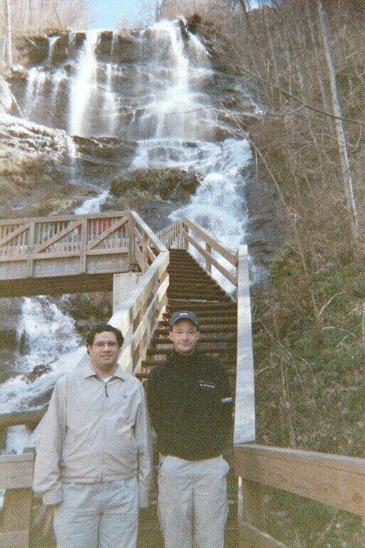
Gary and I at Amicicola Falls
I
bought this stuff at the camp store and had my picture taken at the
beginning archway of the access trail. Gary and I hiked up the AT
access trail (not the trail by the waterfall we had just hiked down)
to the lodge we had just spent the night at. Right above the lodge,
we ended up saying our goodbyes until after the trail.
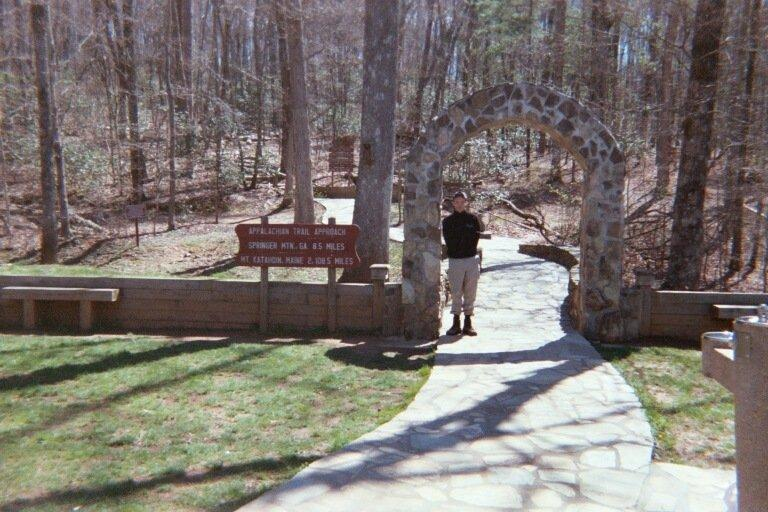
Almost
at the start
I
left civilization at noon and started hiking by myself up Springer
mountain wondering what the next six months would have in store for
me. I was already thinking to myself that after the trail, I would
not want to go straight home and would want to live in Portland at
Cranbo's house, doing seasonal work at LLBean. I started to have
southern songs repeating in my head like Dueling Banjoes (a song from
a movie about an adventure in the Georgia Woods, Deliverance) and
another southern song, Sweet Home Alabama. As a lifelong New
Englander, this was going to be the first time that I had spent more
than a week in the southern United States.
I
stopped an hour later to rest at the remains of an old fire tower (at
the top of wooded Frosty Mountain), I happened to meet my first thru
hiker of the trip, Mike (who would later become Vagabond), who used
to live in a suburb of Boston very close to me, Braintree. It was
nice to have company for the first part of the trip who was from so
close to home.
We
hiked together talking about the Boston area and before we knew it,
we were at the top of Springer Mountain, the official start of the
Appalachian Trail. I thought to myself that this was an easy hike
compared to some of the White Mountain hikes back home. Itonly took 3
hours and 15 minutes to hike the entire mountain. I was at the top of
Springer Mountain in half the time I expected. I was so excited. I
took a temperature reading at the top of the mountain and it was 50
degrees. A virtual heat wave compared to the mountains of back home
in late March. I had time that night to watch the sun set with a
number of people from the crowded shelter at the top, including an
REI staffer and a Galyan's staffer. Including myself, we represented
all of the major outdoor store chains in Boston.
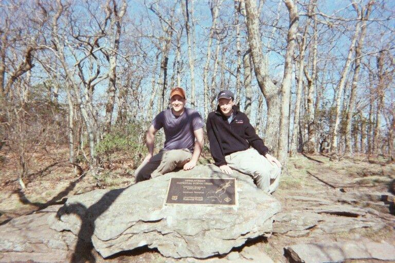
Summit of Springer Mountain
Georgia
I
woke up at the crowded shelter on the top of Springer Mountain at 8am
the next morning, saw that it was 38 degrees out. I felt great to
start my 32nd year at the beginning of the Appalachian Trail. I
started out this day hiking with the hiker that I had climbed most of
Springer with the previous day, Vagabond, and a couple of new thru
hiking friends, Greg from New Jersey and Very Small Animal, a repeat
thruhiker from Washington DC. We went to Long Creek Falls, an awesome
waterfall, for lunch and we hiked in the afternoon with another new
thruhiker friend, Cruiser, from South Carolina. We only hiked 6 miles
that entire day to Hawk Mountain Shelter, a shelter that had an army
ranger training base nearby. I thought that I heard a helicopter off
in the distance and had no idea what was going on, especially since I
had had left civilization at the time right when the United States
was threatening to invade Iraq.
There
were approximately 50 people at the shelter that night. Of course,
there was no room at the shelter and that was my first night of using
my new one man tent. My NJ friend, Gregg and my Boston friend,
Vagabond and our former thru hiker who gave us lots of advice in the
beginning. Very Small Animal (a girl who was about 5 feet tall) at
21, had thru hiked three years ago. She was very excited to start
another thru hike and she ended up providing some great knowledge to
three novice thru hikers.
At
this shelter, I met a girl, Deanna (later to become Spitfire) who won
a national EMS employee wide contest to sell the most Gore Tex
clothing three months before. She won an all expenses paid trip to
Peru, which I remember was a big wintertime promotion at our store.
The
next day the four of us hiked to lunch at Justus Creek. Gregg was
going through nicknames that he would like, Sonic and later, Sonic
Boom would be ones he was debating between. I was starting to have my
trailname actually set in and start to replace my real name at this
point.
I
would hitchhike (the first time I had ever hitchhiked in my life)
with the three of them from Woody Gap to catch a ride into Suches to
get some 'real' food and mail some non essential stuff home in the
first trail town. I was realizing I wouldn't need things like my
compass and thick winter gloves. I mailed these things home from the
post office in this little town. I got my pack weight down by 2
pounds, which may not sound like alot, but one of the things that
every hiker was talking about in the early days of the trail was
cutting your pack weight by any means possible.
At
the gas station / convenience store in that small farm town, I had a
soda and a candy bar with our group of four. We got a ride back to
the trail from a 1999 thru hiker, Sir Peealot. The four of us also
bought a 12 pack of soda to share with the group of 10 camped right
near the road that night. We met one of the people who packed the
most of anyone I saw that year, Buffalo Bob. This hiker started with
a pack of 82 pounds because he brought things like a suit, dress
shoes and a ten pound tent. He got some really bad advice from an
outfitter who was working on commission when he bought all of his
gear.
The
next day, the four of us hiked to the top of Big Cedar Mountain. We
stopped for lunch and met Radar, another former thru hiker from New
England. It was nice for me to meet so many New Englanders hiking
this far south. We descended to Jarrard Gap for lunch and got to our
stop for night, Blood Mountain, early at 3pm. On the way up Blood
mountain, we started to spot easter eggs that a trail angel (a kind
person who leaves things for hikers) had left since Easter was the
next day. The four of us hiked up Blood Mountain, I do remember that
five foot tall Very Small Animal was hiking in front of me and a low
hanging tree branch, which she walked right under, whacked me right
in the face.
Daylight
savings time was not in effect yet and the sun set rather early we
were glad to stop fairly early. We saw some great views of the
Georgia countryside that afternoon. I got a picture of Gregg with his
definite nickname of Mr. Pumpy now in front of this shelter. I gave
him that nickname as we were climbing Blood Mountain because when the
four of us stopped to pump our water bottles full because there was
no water on top of the mountain, he decided to pump two liters of
water for all of us. I decided to sing 'Mr. Pumpy' to the tune of
'Mr. Sandman' as he pumped the water for the group of us. He liked
the trail name so much, it stuck. I laughed whenever I hear that
trailname for rest of hike, because I gave him that nickname.
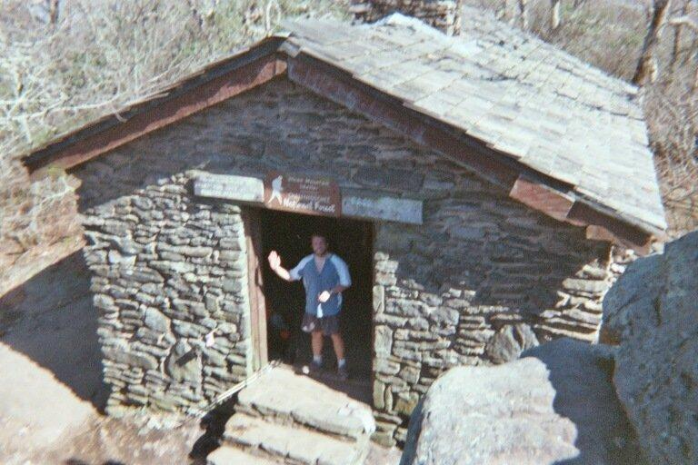
This
day was an awesome 80 degree April day for hiking. This was something
that I was not used to back home in New England. I would have to wait
at least two and a half months for this weather!
It
was a weekend so I expected that we would share the mountain with
some other local backpackers. Other hikers brought a radio with them
and were listening to the Atlanta Braves baseball game at the top of
the mountain. I sat there for an hour listening to game with them and
watching the beautiful sunset on the giant boulder on the top of
Blood Mountain. I missed checking on how my local baseball team, the
Boston Red Sox were doing this first week of the baseball season.
That had been an almost daily spring, summer and fall ritual for my
entire life growing up in New England. I thought that they could win
the world series now that I was going to miss most of their season.
(the Red Sox hadn't won a world series since 1918 as of 2003) That
was one of my last exposures to mainstream society which I had been
so used to before my thruhike started.
We
all were supposed to get up at 6am to watch the sunrise for the first
time on the trail that morning. I got up at 6am and the clouds were
very heavy, so I decided to let the others, who were sleeping in
hammocks outside instead of in the shelter with me, sleep for another
hour, before I went back to sleep. In another couple of hours, a
steady stream of about 30 hikers, who had stayed at a campsite before
the mountain, came rumbling through. That was a strange, surprising
wakeup for me!
The
first thing on my mind that morning was to run down the mountain as
quick as I could to grab a shower and do some laundry down at Neels
Gap, the first hostel stop on the trail and a point where half of the
potential thru hikers decide that they have had enough of backpacking
and head home.
The
four of us got down to Neels Gap by 10am and rested, had a soda and
snacks from the shop. The three of them checked in for the night at
11am! This agitated me since I did not plan on hiking the AT on a 5
mile a day pace.
The
four of us sat around and talked to other thru hikers about essential
and non essential gear. Some hikers went without tents and sleeping
gear, they just used a tarp supported by hiking pole and wrapped
themselves in a construction material called Tyvek to keep warm. I
remember thinking that this type of shelter was alright for the
terrain that we were currently hiking in, but thinking to myself how
would the Tyvek would do in a big above treeline storm like the ones
that I had run into back home in the White Mountains.
I
finished my laundry at 2pm and decided that I had to still hike.
Luckily for me, I met my thru hiking partner at Neels Gap that I had
met in Atlanta, Soren. It was late in the day (3pm was late when
sunset was not quite 6pm), but the two of us decided to hike up to
the nearest shelter. He had only been hiking a few miles behind me
from the start.
I
said goodbye to all of my thru hiker friends that I had met in the
first few days like Pumpy, Spitfire, Very Small Animal and Cruiser. I
had no idea whether I would ever see them again. I even said goodbye
to some of the section hikers that I had hiked on and off from
Springer Mountain with.
The
reason that I could not hike with them for very long is that we were
averaging about 10 miles a day at that point and if I wanted to
finish in Maine before it got very cold, I would have to average 15
miles a day. Pumpy had maildrops in many towns, which would slow them
down considerably. My EMS thru hiker friend, Coty, had advised me
against having that many maildrops. I was starting to learn that
there was plenty of food available in the towns and stores along the
trail. The store in Suches as well as the store in Neels Gap had lots
of food for hikers.
Soren
and I decided to hike up to the Whitley Gap shelter together and got
there by complete darkness at 7pm. This was the first shelter that we
had completely to ourselves. This was because the shelter was a
shelter built over a mile from the trail. It was a nice change from
the crowds that I had been dealing with every night so far. This
night was also our first major rainstorm of the hike starting ten
minutes after we got to the shelter. Luckily we had plenty of room to
spread out, but so did the plenty of mice that lived at the shelter.
I had one of them crawl over my sleeping bag as I slept.
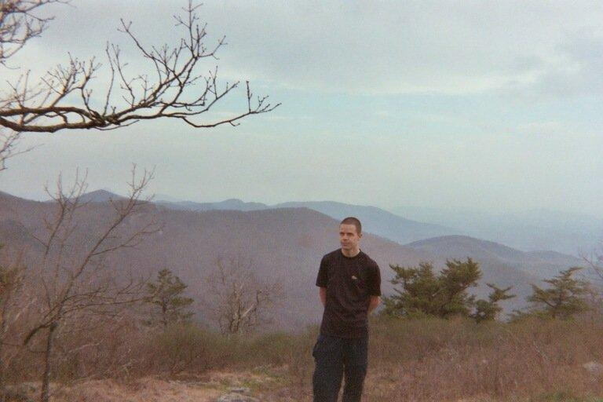
The
next morning, Soren and I hiked back to the trail and got to take an
awesome picture before the heavens opened up again. We hiked another
two hours through the pouring rain and stopped for an early lunch at
Low Gap shelter. I was pleasantly surprised at how well my all my
Gore Tex rain gear was holding up at this point. I was bone dry at
this point.
There
were some Georgia guys out for the weekend at this shelter. We
stopped in as they were having their brunch. They ended up giving
Soren and I a piece of fried Spam to supplement my normal (at the
time) cheese and powerbar lunch that day. We had that extra piece of
Spam, and walked with this group of guys until they left on a blue
blazed trail (a trail heading away from the AT) towards Brasstown
Bald, the highest point in Georgia. This trail junction was the point
where the headwaters of the Chatahoochee River started. This was the
same river that I stopped to look at on my trip from Atlanta to
Springer Mountain. This area was great to see since it was the only
greenery that we had seen so far in the trip. To this point, all the
trees didn't have the slightest bit of green, unlike the springtime I
was used to seeing back in New England.
<
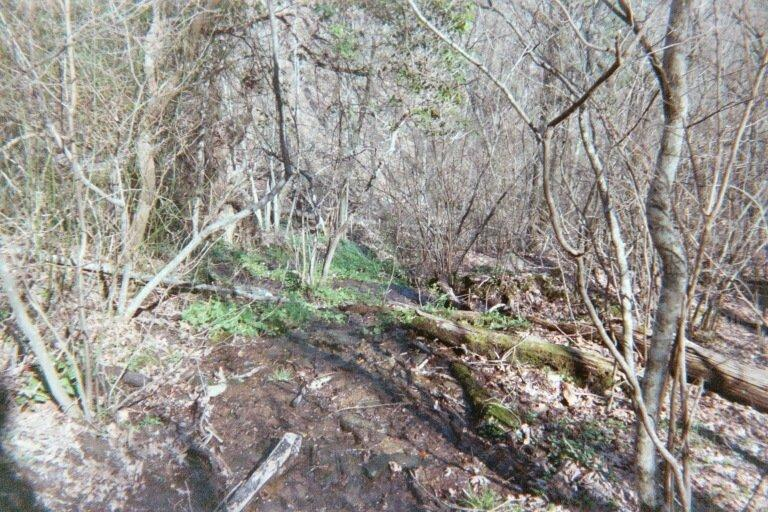
We
left the Georgia weekend hikers and headed down to Blue Gap Shelter
with a couple of older thruhikers, Grasshopper (63) and Axeman (74).
At the shelter, I met Jarrod (Rocket) from the South Portland, Me.
who was another former EMS employee like myself. I found out through
the shelter journal that my EMS coworker Erika (who is currently
named Groovemonster) is only three days ahead of me. She started her
trip from Boston a week before me. It is one of my goals of the
moment to catch her. This day was my first 15 mile day of the trip
over fairly mountainous terrain with three four thousand foot
mountains. I am extra proud of this achievement! At a campfire that
some thru hikers built at this shelter, a former thru hiker, High
Octane ('02) says that the 20 mile days are not far off. Pity that
Axeman had to stop early the next day at Unicoi Gap, but I hope I can
hike the first 60 miles of the AT when I am 74!
Soren
and I were surprised that day by seeing a bunny rabbit standing in
the middle of the trail at the top of Rocky Mountain, right before
climbing Tray Mountain, one of the most scenic mountains in Georgia.
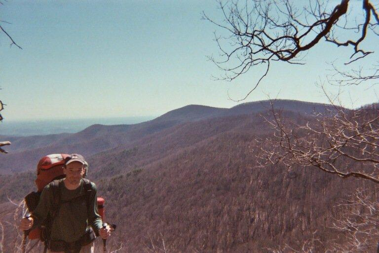
We
saw signs at previous shelters for a Boy Scout hiker feed at Tray Gap
that morning. We raced from Unicoi Gap to get there only to find that
we just missed it. Our friend, High Octane, had been through Tray Gap
an hour earlier than us said that noone was there when he went
through, either. We must have just missed them. A minor
disappointment, because hikers love free food anytime they can get
it.
We
stopped briefly at the Tray Mountain shelter for lunch with about ten
people and to check the register and admire the view of Hiawasee,
where we would be the next day. We didn't stay long, though, because
we wanted to get going to make the early morning shuttle to the
hostel of town.
Soren
and I were very tired when got to the Deep Gap shelter that day. We
hiked the last two miles with a new thru hiker, Rumbler from Jackson,
MS. We found a can of Spam in the shelter hiker box that made all of
our dinners that much more enjoyable. We enjoyed our last hiker meal
before real food in town the next morning. This was the first day of
Daylight Savings time and it was strange to go to sleep at 8pm when
the sun was still out.
We
had a rainy night at this shelter and a moist three mile morning hike
to the road in the morning. We hopped into the hiker shuttle that had
just dropped the previous nights hikers off at the trailhead and
stayed at our first hiker hostel, the Blueberry Patch in Hiawasee.
The owners of this hostel were a quite nice, a Baptist minister and
his wife who were a little more outwardly religious than I was used
to in the north.
I
found out from the hiker journal at this hostel that my friend Erika
changed her trail name again to Stargazer. A few of us hikers
showered up, left the hostel and got a ride into town. Before we
went into town at noon, I met a girl named Odyssey who was from near
where I went college in Penobscot, Maine. She lived right near me in
Boston in Lynn, Ma. I would eventually realize a closer connection to
her in the future.
Soren,
Katydid, High Octane, Rumbler and I all headed to town together by
getting a ride from the hostel owner. In town, we met many other thru
hikers that I had met up to this point on the trail. I met Spitfire
and Vagabond at the grocery store in Hiawasee, while we were
resupplying, after I updated my internet site on trailjournals.com
for the first time by visiting the local public library.
All
of us thruhikers found an all you can eat southern restaurant called
Daniel's and ate fried chicken, ham and potatoes until we couldn't
eat anymore. We met a trail legend, Baltimore Jack there (who I had
seen briefly at Neels Gap), who had thruhiked the trail for five
straight years. I would find out here that he just lives on the
trail, camps in the woods and yellow blazes (hitchhikes) between
towns.
I
am discovering what I need for food, gear and money in trail life. It
was something like I had expected before the trail, but I was
starting to develop a routine so things were going much more
smoothly. I was proud that I had only spent $25 in sixty trail miles,
so I knew I wasn't going to blow my six month budget of about $2000
halfway through my trip.
The
next day, our last day in Georgia, Soren and I hiked up from town and
did a quick early morning stop at Plumorchard Gap shelter. This is
where I was chewing on my newest treat from town, chocolate malt
balls, and a dental filling that I had gotten right before I left
home had come out of my mouth. I was months away from my seeing my
dentist and it wasn't causing any pain. So I just spit out the
filling and continued hiking.
We
left the shelter, Soren and I hiked with a PCT veteran hiker from
Germany, Psycho Heiko, and celebrated briefly as we passed by the
gnarled tree that marks the GA NC state line in the pouring rain.
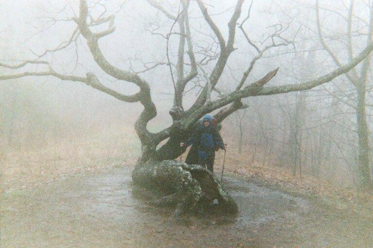
North
Carolina
We
crossed our first state line and it seemed that we went straight
uphill to reach the first shelter of North Carolina, Muskrat Creek
Shelter, at 4pm. Odyssey was here when Soren and I got here. Psycho
Heiko had left before we had gotten there, according to the shelter
journal. We were noticing lots of tunnels of rhododendron to walk
through once we crossed the state line, which were interesting and
quite pretty.
We
pushed on another five miles to Standing Indian Shelter and got in at
6:20. My first 17 mile day excited me considerably. This shelter was
full when we got here, but I expected that. Psycho Heiko was sitting
at the shelter waiting for us and our old friend Radar was here as
well. I hadn't seen Radar since before Neels Gap, over a week ago.
It
rained all night long and lightly rained while we were hiking the
next morning. Soren and I hiked through the rain to Carter Gap
shelter for lunch. This shelter was one of the oldest that I seen so
far, built in the 1930's. We ate lunch with a hiker named Jersey, who
just had a heart triple bypass, and a thruhiker named Footslogger and
pressed on under cloudy skies.
We
climbed the steep chimney of the hardest mountain so far, Albert
Mountain, our first mountain with a firetower on top. It was so
cloudy that it didn't make sense to climb the firetower. We enjoyed
the interesting sign that explains the Coweeta Hydrological
Laboratory which has been in this 4000 acre forest since 1933. The US
Department of Agriculture has their southern research station here
because it is the wettest place in the eastern United States.
I
met Homebound from Bar Harbor and Tank from Skowhegan, Maine after
getting to our stop for the night, Big Spring shelter, after hiking
down a half hour from the summit. Homebound graduated a rival college
to mine, Unity college in Unity, Maine and graduated a year before me
in 1992. Bluebird from Kentucky and Psycho Heiko were at this shelter
this night as well.
We
awoke the next morning, April 10th, to 30 degree weather and heavy
snow instead of rain. Psycho Heiko's companion, Shortlegs, woke up at
this shelter to find 6 baby mice at the bottom of her backpack. She
was quite surprised at this. This was interesting and funny.
We
met Psycho Heiko for lunch at Rock Gap shelter after the heavy snow
changed to heavy rain and started to melt the snow. What a mess. I
didn't think I would experience this New England spring weather in
the deep south! We passed the 100 mile mark this morning which was
marked by other hikers who marked the approximate spot with the
mileage in sticks in the middle of the trail.
It
was still raining hard at 3pm when we got to Siler Bald shelter.
There was 3 inches of snow on the ground here, even after some of it
had already melted. The temperature was around the freezing mark when
we got to the shelter. Here we met Sparky and Stinger from NH as well
as Pushing Up Daisies, who started on March 30th, one day before me.
Here was the first debate I got into with another thru hiker about
hiking the entire trail.
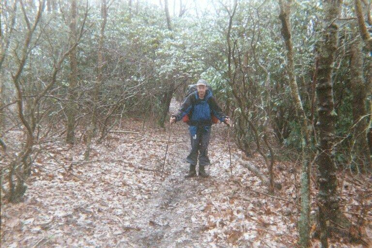
Some
hikers think that if you step one foot off the trail, that you
haven't hiked the entire Appalachian Trail. Another thru hiker was
telling me that if you didn't go back to the spur trail junction
where you left the trail you were skipping part of the trail. I
answered him by asking him why there were two ends to a spur trail if
that was the case.
The
next morning, at the top of Siler Bald, the loop spur trail to the
shelter was completely covered by snow. We got to the trail end of
the spur and the main trail was completely covered by snow. The spur
trail continued straight ahead as a logging road to another peak.
Luckily, being so used to winter hiking, I caught the fact that the
AT took a right here. Signs were not visible here, probably due to
the snow. Other thruhikers that I would talk to later said that they
missed this right turn in the snow and ended up hiking an old logging
road for a while before they realized that they weren't on the right
trail.
Hiking
conditionsfor the rest of the day were more like spring hiking in NH
, where the trees have a foot's worth of melting snow dripping down
over you and the entire trail. We got to Wayah Bald for lunch and it
was still very cloudy. This mountain was the first mountain that we
would come across that had a road to the top. The AT went along the
road for a few hundred feet. As I would find out later, this was the
first of many roadwalks on the trail. It was a shame that the
mountain was completely clouded over when we reached the top because
this mountain was supposed to have one the best views of the Great
Smokies. We climbed to the top of the stone tower and we saw all the
view pictures of the Great Smokies on signs, but not the actual views
themselves.
The
summit tower here reminded me of a place back home where I grew up
walking with my family. The stone tower here was very similar to
Wright's Hill Tower in the Middlesex Fells, a Boston area park. I
would make a mental note to try to return here someday. Especially
since this mountain had a road to the top!
We
got to the Cold Springs shelter around 3:30 that day after climbing
two 5000 foot mountains. We met another local New England hiker from
Concord, N.H., Noodlehat. He got his name from spilling his ramen
soup on someone's hat early on.
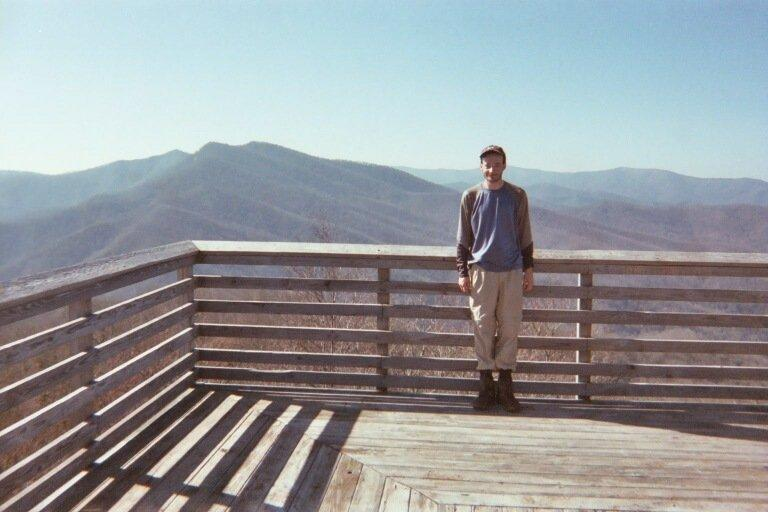
We
hiked for another two hours in the bright sunshine, before we climbed
Wesser Bald's firetower and saw some panoramic views of the entire
Great Smokies range. I had to have a picture of me taken facing Wayah
Bald that we could see now, because of not having seen it yesterday
due to the heavy clouds. It seemed like we hiked straight downhill to
get to Nantahala Outdoor Center around 1:30 for a late lunch.
The lunch
of a bag of Cheetos, rootbeer, Reeses, Fanta, Cookies and chips were
all very tasty for a starved hiker. We saw Psycho Heiko aways off in
this major rafting center, which is extremely busy on this warm 70
degree Saturday. We were in the mood to get to the start of the Great
Smoky mountains, so we headed straight on to get to Sassafras Gap
shelter at 7pm after leaving NOC at 3:30. It was my first 18 mile
day.
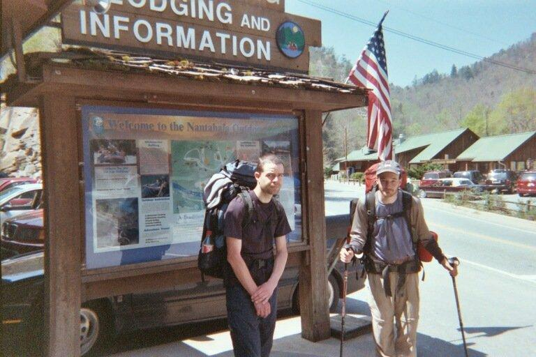
I
found out from a Cambridge, Ma. hiker, Mountain Butterfly, that my
EMS friend, Erika, has changed her trailname again to Pipes. She is
camping a couple miles ahead of me, on top of Cheoah Bald. I was very
impressed that her 3 day lead that she started with had been cut to
less than 3 hours.
I
ended up meeting Erika at the top of Cheoah Bald at 8:45am, closer to
the shelter than I had thought. My first goal of the trail had been
accomplished. I was proud. She was with a group of four at that point
that included her proposed trail partner, Windtalker from Michigan.
Another former EMS employee, Iron Chef from Conneticut, was also
hiking with her.
I
hiked with Windtalker for an hour this morning in this great 70
degree weather. Soren and I stopped at Brown Fork shelter for lunch
after a 9 mile morning. Soren and I were the only ones here after
climbing a mile straight uphill. We are exactly 150 miles from
Springer mountain and loving it. We waited for the girls for awhile
and Windtalker showed up, but my friend Erika (Pipes) did not. Soren
and I just ran downhill to get to Fontana Dam. Unfortunately, I got a
charlie horse at 4000 feet and had to descend to Fontana Dam at 2000
feet. It ended up being a fairly late hiking night when we got to the
road at 8pm. It was a very painful experience. We hitched a ride to
the village from local people and I was amazed as much by their thick
southern accent as they were at my thick northern accent.
As
excited as we were to go to civilization (Fontana Dam Village, built
for dam construction workers) to eat, it was so late that the
restaurant was closed. We got to wash up and eat our remaining trail
food, getting lots of soda from the motel vending machine and just
envisioning the all you can eat breakfast the next day.
We
couldn't wait to resupply food, send postcards, catch up on email,
and relax by Fontana Dam the next evening. While running these
errands, I briefly saw Erika walking by, but this was the last I
would see of her for quite some time.
I
loved staying in a great resort like this for $30 a night. I couldn't
do that back in New England. We are hoping that rumors we have heard
of dam closure because of security are false. We had heard that the
day after 9/11, the goverment shut down all of the dams in the
country, including Fontana Dam. AT thruhikers had to walk 3 miles
around the bottom of dam instead of crossing over it.
It
was funny to watch 'the Price is Right' the next morning on TV while
I was waiting to use the internet in the lobby of the resort. Most
hikers are so amazed to watch TV after a week on the trail that
anything that we see other than CNN and the Weather channel amazes
us.
I
met two Massachusetts hikers in the resort lobby that morning, Dan
and Karen, from Newburyport and Northbridge. They had just graduated
from UMass the year before. It was really interesting to meet this
many New Englanders down south.
Soren
and I were leaving the lodge for the AT trailhead, on a Fontana hiker
shuttle, we saw our friend Wizard, an older guy from the local NC
area. I was excited to see him again since he could tell us more
about the area than was in any guidebook. I was looking forward to
learning more about the southern plantlife from him.
We
hiked the 2 mile trail today to the famous Fontana Hilton. It was
famous because it was the biggest shelter of the entire trail and a
former storage shed when the TVA dam was being built in the 1930's.
Funny to see tourists at the dam in the afternoon who had seen me at
the lodge two hours before.
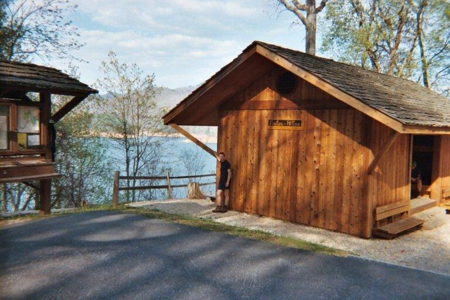
I
went off to enjoy a day at the (not closed) dam. I got back from my
solo picture taking experience, I remet Sniper, who ended up giving
me some extra cans of Vienna Sausage that he had gotten in a maildrop
the previous day at the resort. I also met Michele, who worked at
Disney World and her brother Crazy Talk, who loved two TV shows that
I liked back at the time, the Simpsons and Monty Python.
We
had about 30 happy thru hikers (most tenting outside, including
myself), 2 glasses of wine (hikers spoil themselves the day after
town) and a full moon at 70 degrees made for an awesome night. A
couple of thru hikers playing Amazing Grace on a harmonica at sunset
made the night extra special.
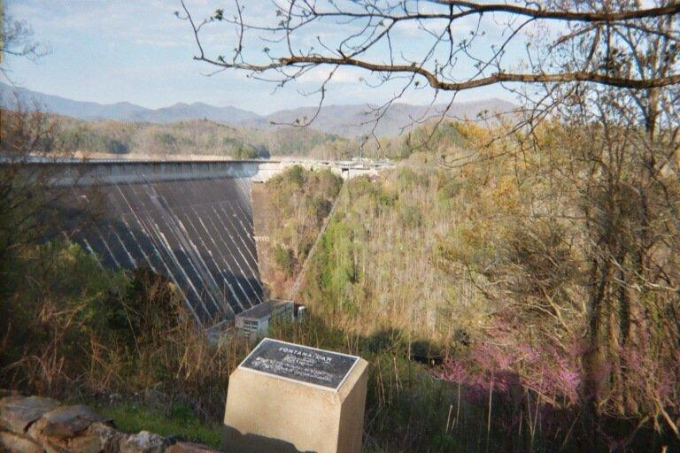
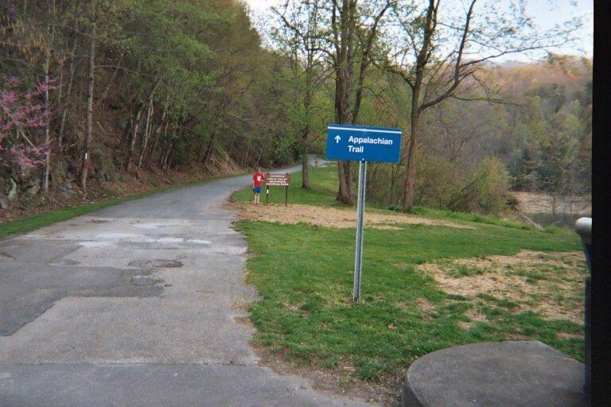
The
Great Smokies
There
is nothing that a hiker enjoys more than starting the day with a hot
shower on the trail. The Fontana Dam visitor center leaves its
restrooms (with showers) unlocked for hikers. A shower is a luxury
that rarely happens along the trail, especially when you are not in a
trail town. Hiking in the Great Smoky Mountains was what I thought
was going to be my favorite portion of the trail before the hike
began. Our hike started with great weather.
We
got to the trail entrance of the Great Smokies National Park, and had
to pick the exact shelters that we thought we were going to stay at
for the entire park. (without knowing any of terrain) We had to
display a tag with our shelter information on the outside of our
packs at all times. If a ranger stopped you and you did not have
this, you would be fined. It was like always having to carry your
passport when you are overseas.
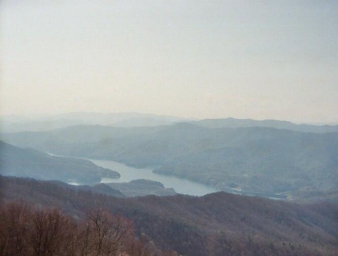
Soren
and I had a great two and a half hour hike up from Fontana Dam to
Shuckstack Fire Tower. One could see most of the Smokies and all of
Fontana Lake from this enclosed tower. Hiking on further, passing
great views, we got to the Great Smokies ridgeline at 1pm, much
sooner than I had planned. We had a late lunch at Mollies Ridge
shelter, and spent most of the day hiking with Sniper, who I had been
playing tag with for the last few days. We ended up hiking 14 miles
which was more than I thought I would do. I thought that this would
be the hardest day of the trail so far. We ended up staying the night
at Russell Field shelter with a couple of people we had hiked with
off and on since Fontana Dam shelter, Tucson, a kindergarten teacher
my age from Tuscon, Arizona and Dirty Harry from Portland, Oregon. I
met a thruhiker named Gator from Florida that night. It was strange
to see the bear fencing that lined every shelter in this part of the
Great Smokies. I had my tasty single Ramen dinner, I took a short
walk down to Spence Field, a few hundred yards from the shelter. It
was very interesting to have a field at the top of a mountain,
surrounded by all sorts of trees.
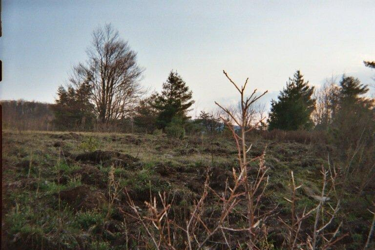
The
Great Smokies ridgeline hiking was very pretty. I was walking through
hundreds of spring beauties, violets, trillium and azaleas. Soren and
I stopped at an open grassy knob called Spence Field at 9am, got some
nice pictures and hiked to a mountain called Rocky Top (in the
University of Tennessee fight song). The view from this spot was so
beautiful that I stopped for an hour admiring the view. We met some
thruhikers from my college town of Waterville, Maine, Strider and
Molasses, while I enjoyed the view
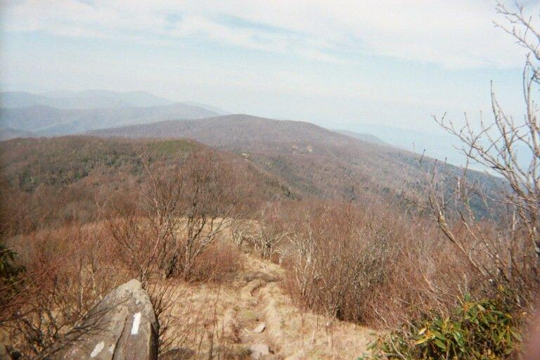
We
continued our ridgeline hike over five 5000 foot mountains and about
10 more knobs (small peaks). This was the most tiring day of the trip
so far, so much so, that I had to stop for a few minutes and get my
second wind, before finishing. We had much of the same crowd that we
were with last night at the Silers Bald shelter tonight, plus two
college students from Baltimore on spring break. I ran to the top of
Silers Bald after my single ramen dinner to catch sunset over
Clingman's Dome. Very pretty!
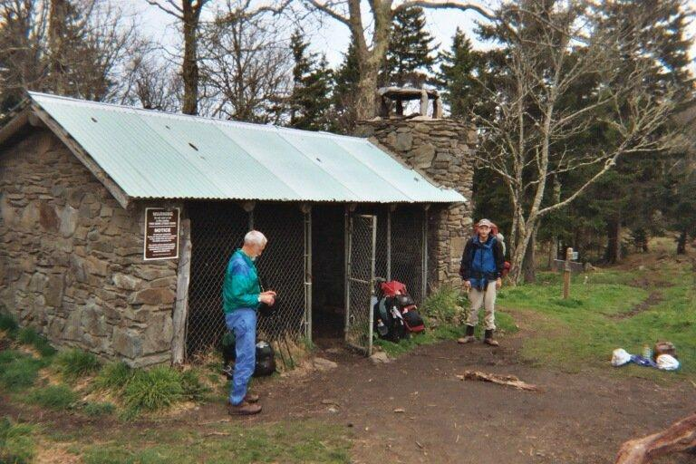
We
got to Double Spring Gap mid morning and I was surprised to see
spruce trees. These trees are common in the north, but these are the
first spruce trees that I have seen in the south, now that I am above
6000 feet. I took some pictures and we continued climbing another
half hour to Clingman's Dome. We were lucky enough to climb to the
top of the tower, in between the clouds. Thick clouds were
everywhere, but the clouds were over our heads. We talked to hikers
who were at the summit of Clingman's Dome an hour before us and an
hour after us who could not see anything from the top of this tower.

We
walked through heavy rain all morning long until we saw a sign for
the Mt. Collins shelter around lunchtime. The shelter was a half mile
off the trail, but when it is raining, distances to dry places do not
matter to hikers. We met a thruhiker from Fort Lauderdale, Florida
here, named Flatlander.
We
got going again and passed some forest rangers with a chainsaw and a
tail of a small plane. They were apparently salvaging some wreckage
off of a plane that did not fly over the mountain ridge, but into it,
the foggy night before.
I
had a very interesting thing happen to me this afternoon. As we
passed a rest spot for tourists on the auto road up Clingman's Dome
called Indian Gap Wayside, we saw a couple of tourists who decided to
take my picture because I was an AT thru hiker. Funny to think that I
had already gotten celebrity status after two weeks of hiking.
We
hiked down the AT through heavier rain to Newfound Gap through fences
designed to keep out warthogs out of a place called Beech Tree
protection acre. At Newfound Gap (the highest road pass of the
Smokies), the rain was coming down so hard that we took refuge in the
public bathroom. We spent enough time to read the inscription beneath
the FDR statue at the Gap. We got going as quick as we could. I
figured that I could go back there by car later in life, so I was not
that concerned with lingering during a heavy rainstorm.
This
night was the most interesting night of the entire trail for me. It
was raining so hard when we got to Icewater Springs shelter that 23
people squeezed into a ten person shelter with a few more people
outside in their tents. There were so many hikers here that
everyone's rain gear almost made a front wall to the three sided
shelter to block the wind which gusted a bit. Soren tented outside,
but I didn't want to setup my tent in this pouring rain. Two of the
people outside the shelter got $50 tickets for not camping within 50
feet of the shelter, which did not make them very happy.
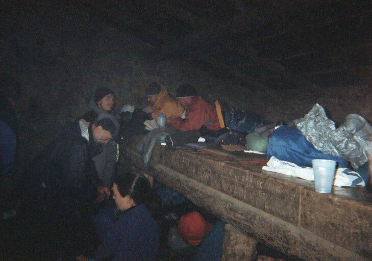
Tucson
was next to me that night. Next to her was a heavy snorer. I heard
the snores for a few minutes and Tucson was not doing anything to
stop this guy from snoring, I nudged her to tell her to nudge the
snorer to stop him from snoring. Luckily, he stopped at least long
enough for me to get to sleep. The next morning, the weekend hiking
snorer guy gave me some of his food since I was running very low. I
was very grateful for this so that made me forget about his snoring
from the night before. This shelter was also the one where I caught
up to thruhiker friend, Wizard, who could answer all my questions
about the plantlife of the Great Smokies so far. He even told me the
name for the flowers we had been seeing often to that point, Spring
Beauties.
I
had only planned for single day hiker portions of food up to this
point. That probably explained my charlie horse coming down Wesser
Bald into Fontana Dam the week before. No wonder I was hungry all the
time. This was the only time in my life that my mouth was actually
watering from being so hungry. It was like when you see a hungry
wolf's mouth watering right before he stalks his prey.
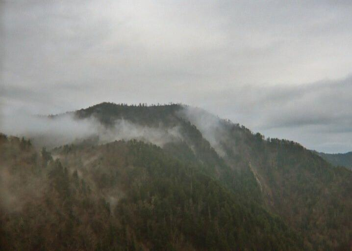
The
next morning we saw some brief views from Charles Bunion and could
really see why they called this mountain range the Great Smokies. We
stopped later at Pecks Corner Shelter for lunch. Soren and I were the
only ones on this sunny day who wanted to hike a half mile downhill
to this shelter. Thruhikers that were hiking along with us, like
Tucson, Gator and Sumac + Undetermined (a couple) from Prince Edward
Island thought it was too hard to go downhill for a half mile. Soren
and I were fantasizing about food and a nice beer, even more than
usual. I was even drooling in my pillow thinking about food that
night. We couldn't wait for a restaurant tomorrow afternoon right
outside the Great Smokies called Mountain Momma's. According to our
guidebooks, the grill was open until 5:30pm and we are hoping to hike
fast enough to get there before the grill closes. A crazy 65 year old
hiker named Groundhog is continuing on past this shelter tonight to
get an early start for town tomorrow. He is the type of person that
noone really wants to be with since he is telling boring stories to
everyone without stopping. I hiked with a thruhiker named Booble for
the last part of the day, a guy from Ohio, whose trailname was a
mispronunciation of Boo-boo.
Sumac
+ Undetermined and Noodlehat (who was in the middle of trailnames
that point) were at the Cosby Knob shelter as we stopped in right
after climbing around Mount Goyut. I wanted to climb to the top,
because we have a Mount Goyut in the White Mountains, 1500 miles
north on the Appalachian Trail. Unfortunately, there was no spur
trail to the top and I wasn't in a bushwhacking mood.
I
was leaving the Great Smokies and got a great picture of some of my
thru hiking companions through the Great Smokies at the next shelter
and kept running downhill.
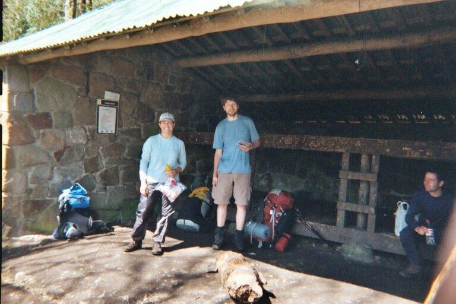
Soren
and I ran a measured mile downhill, between trail junctions, to
Davenport Gap out of the Smokies in a record 15 minutes. We hiked the
entire nearly 16 mile downhill out of the Great Smokies in 8 hours,
making the store with plenty of time to spare.
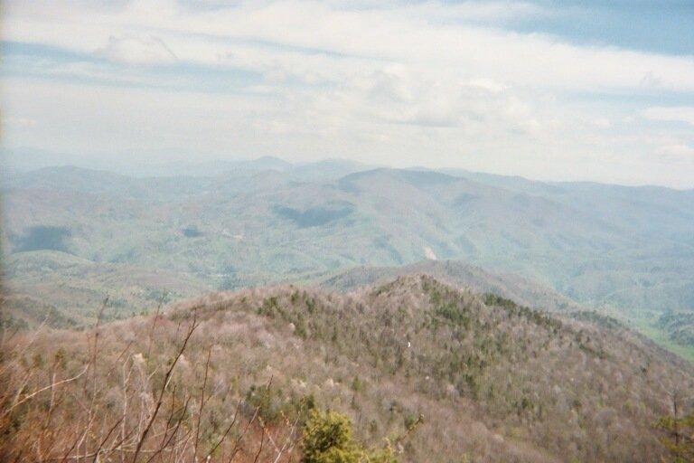
We
got to trailhead at the bottom of the Smokies and ran down the road
to the local store. Mountain Momma's was where I ate the most I had
eaten to that point in my life. I had 2 big burgers, 2 chips, 2
pepsi's, 2 small cans of Pringles, a brownie, a ham and cheese
sandwich, trail mix and an ice cream cone in an hour. I also wrote a
couple of postcards to friends. It was nice to get a shuttle back to
the trail afterwards. This was my idea of heaven. From this point on,
I learned to double or triple my portions from the one package of
ramen a night which I had originally planned.
Soren
and I camped along a stream about a mile in from Davenport Gap, right
near I-40, which was the first major road that the AT crossed. It was
a reminder of civilization to hear all the cars and trucks zipping
along throughout the night. Noodlehat, Soren, Groundhog (who had been
on the shuttle back with us), and I all soaked our feet and went to
sleep in our tents in 70 degree weather as happy as could be!
North
Carolina / Tennesee line into Tennesee after Great Smokies
I
woke up on Easter morning thinking about how nice the family
gatherings would have been if I was back home. I preferred this nice
70 degree weather to a 50 degree April New England day, but missed
the food and family.
>
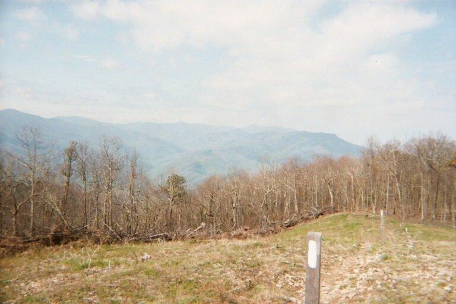
Soren
and I crossed under our first interstate, I 40, in Waterville, NC,
and climbed to the top of Snowbird Mountain. This mountain was very
memorable because the wooded summit was cleared for an air traffic
control station and the view of the Great Smokies behind us was
incredible. Our friend, Gator, met us here before we headed on for
lunch. The walk along the mountains here was really pretty. There
were many wild blueberries and wild strawberries. We met some other
thruhikers, at the Groundhog Creek Shelter for lunch. EZ Does It,
from NJ, as well as Dharmabum and Suds from Washington State. They
had bought the same trailmix that I had eaten in my eating frenzy at
Mountain Momma's.
This
afternoon, I passed Wrongway Brown and Dimplerock from Kansas City,
on the trail towards Max Patch. At the top of Max Patch, we enjoyed
awesome views along with a paraglider who came up with lots of others
from a parking lot within the sight of summit. We ran into Noodlehat,
Two Speeds from Finland and Jakemaster Jay on top as well. I didn't
the like fact that I only had one picture left in my camera before I
got one in my next maildrop at the town of Hot Springs tomorrow. I am
hoping that since there is road access to this mountain and a big
parking lot on one side of the mountain, a few hundred feet down, a
return trip is possible. I talked to the paragliders about the lack
of wind that wouldn't let them take off. I even saw quite a few
people painting pictures. Noodlehat, Soren (now self named the Hiking
Viking) and I reached a crowded Roaring Fork shelter at 6:30 after a
20 mile day today. My first 20 mile hiking day of the trip!
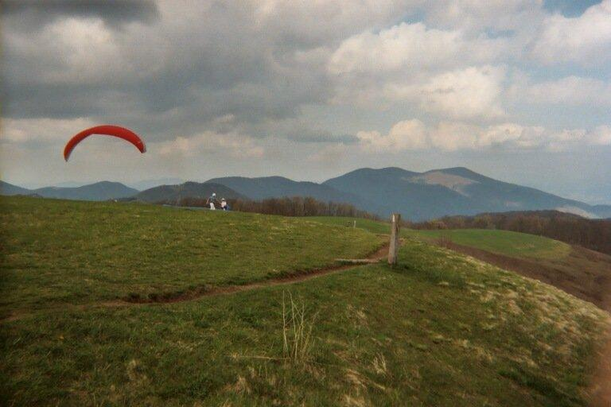
We
hiked to Deer Park Mountain shelter for lunch after hiking through
rain for most of the morning. We walked down Bluff Mountain to the
town of Hot Springs, we had beautiful Indian Pipes lining the trail.
We hiked for 11 miles that morning and had three more miles to go to
my first maildrop at Hot Springs. We had an hourlong heavy rainstorm
as we were descending into town. It felt like Mother Nature's way of
telling us not to reenter civilization. Shortly after the rainstorm,
the familiar sounds of lawnmowers, cars and trains were upon us
again.
We
got into Hot Springs around 3pm, with enough time to get a shower.
Soren, Noodlehat and I $40 cabin at the campground along the river.
I wrote six postcards to family and friends and went with Soren to
have a couple beers with some younger thru hikers at the Paddlers
Pub. Sidewinder bought some wine shots for everyone before we left,
and we went to sleep in our cabin alongside the relaxing river.
The
next day, once the post office opened, I got my first maildrop. It
was so big that I hoped I would tell my parents not to send as much
stuff in the future. (I pre planned my maildrops to include some, but
not all extra stuff, thanks to the advice of my EMS thru hiker friend
Coty) Soren and I had a pitcher of Guinness before I did my laundry
and bought some food. I relaxed during my first zero (mile hiking)
day.
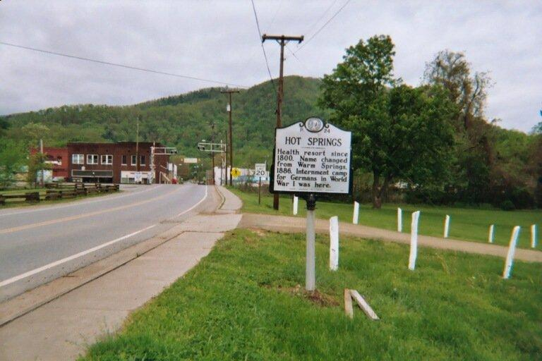
We
woke up at the crack of dawn both mornings to the sounds of
civilization due to the 100 car freight train running through town
every couple hours. I met Pez from New York City while I was waiting
to use the internet at the Bluff Mountain Outfitters. I can't wait to
get to the town of Erwin, TN in three days time!
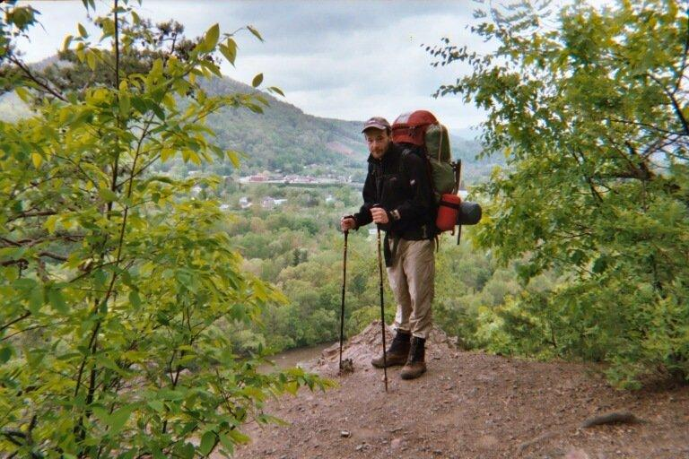
The
first stop of the afternoon, after taking a few minutes to enjoy
Lover's Leap above the town Hot Springs, was a really nice lake next
to Tanyard Gap. The lake had benches all around it and was in a nice
grove of trees. It was very interesting running into some turkey
hunters right above the lake at the edge of a grove honeysuckle
trees. We hiked with a section hiker from NJ named Woodstock to the
lake.
Later
that day, I split up with Soren to run up a side trail to the Rich
Mountain Fire Tower. The view from here was OK, but since the tower
was locked at the top, I could not climb into it, but I went up as
far up as I could go.
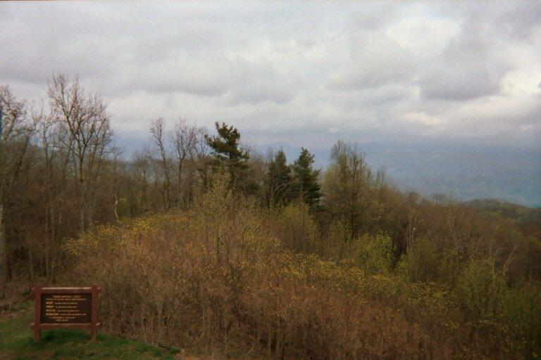
The
next morning we passed a headstone at the Rex Pulford Memorial (a
thru hiker who had heart attack near that spot in 1983) and got to
the Spring Mountain shelter that afternoon to see Pez cooking dinner.
It got down to 40 degrees that night, making me glad I still had my
winter stuff with me. Some other hikers had started to send their
winter stuff home at Hot Springs because they thought that the high
elevations of the Smokies and the cold weather was over.
I
hiked with European Viking (Andreas), Noodlehat and a girl named One
third this AM (who reminded me of a hiking friend from back home).
She got that name by being one third of her family to thruhike the
trail. Her mother and father had sent her ahead in Hot Springs
because her father had had some health trouble.
I
had lunch at Little Laurel Shelter and stopped for a bit in the
afternoon at Whiterock Cliff. This place had an awesome view of Camp
Creek Bald which I had just climbed over. The Euro Viking and I hiked
from the Cliff to Jerry's Cabin where we stayed the night. Pez and
Soren were already here when we got there. Sherpa and Otter, Trog
from Groton, Ma. (close to where I grew up), as well as Hopscotch
from Brunswick, Maine (not far from my college) were also here. Trog
was an interesting local guy who was using vacation time he had saved
from Raytheon over the years to hike the entire trail. Hopscotch was
a section hiker that I had passed on my descent to Hot Springs a
couple days before. Noodlehat came in after me as he hiked the side
trail to the Camp Creek Bald firetower that day, where I only went to
the cliffs.
I
passed the Bassett Memorial, (great viewpoint where a 1968 thru hiker
had his ashes spread), the 300 mile mark and the Shelton Graves where
Union soldiers were killed by Confederates when they went home to
visit their families back during the Civil War. I continued climbing
to Flint Mountain shelter and remet One-Third.
One
Third told me that Soren was only five minutes ahead of me at that
point. I will try to catch him by running ahead. (about this point,
Soren and I decided to have lunch and go to shelters together, but
not hike with each other all the time, nothing personal but being
with someone 24 hours 7days a week does get annoying after awhile)
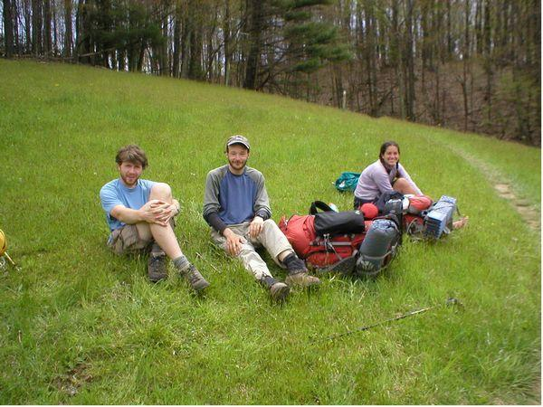
I
stopped on a field at Sam's Gap with Noodlehat, One Third and Tough
Cookie from New Jersey. Another thruhiker, Romeo from Michigan,
joined us for awhile. Later in the day, we saw an awesome view of a
new highway bridge a few miles in the distance. We continued on to
Hogback Ridge shelter about 4pm, after three extra PUD's (pointless
ups and downs) in the afternoon. Soren and Noodlehat were the only
ones here other than One Third and I. Ultraya from Quebec, Amble from
Washington DC, and Trog arrived later on.
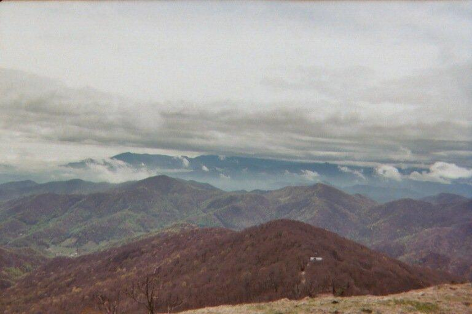
I
climbed to the top of Big Butt by noon and One Third caught me a
little later. I loved the views all around Big Butt. I was treated to
great views of Mount Mitchell, the Blue Ridge to our east and Erwin,
TN to our north. I met Soren and Euro Viking at the Bald Mountain
shelter a little later for lunch (the highest of the AT so far at
5100')
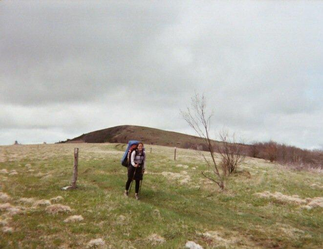
I
met Vermont Pete from Montpelier, VT on the hike down from Bald
Mountain. A 59 year old thru hiker who has made it over 300 miles at
this point impresses me. I got to the No Business Knob Shelter at 6pm
to find Euro Viking, Soren, Noodlehat and Trog already here. I had
hiked a 20 mile day today in ten hours and was dreaming about the
town of Erwin tomorrow. The usual thruhiker dreams are dreams that
you can enjoy all you can eat buffets, do laundry, and use the
internet.
I
was sitting here, cooking my dinner of double Ramen's before town
andused my quarter full Nalgene bottle to fill my soup bowl. This was
not enough water to cook with, so being as tired as I was, I did not
feel like going down the steep incline to get more water. I saw a
Coca Cola bottle full of what I thought was water on the wall of the
shelter, five feet away. I filled my soup bowl with the contents of
the bottle and cooked up my Ramens. As I was cooking, I saw a film
appearing above the water and I thought to myself how strange that
was. I finally started to eat the Ramens, it was the worst possible
taste in the world. The Ramens were cooked in gasoline!! I strained
the Ramens four times with other people's water, but I finally ate
them as disgusting as they were. When you are that hungry, you really
have no choice. That experience is something that I will never forget
for the rest of my life!
One
Third finally got to this shelter and it did not take very much for
me to decide to hike the seven miles into town with her that night in
the dark, so I could get the gasoline taste out of my mouth. We got
to the closest point that the trail gets to town at 9:30 after hiking
in the dark for the last couple of miles. A 27 mile day was a record
for me at that point!
One
Third and I talked to a local hostel owner at the edge of town and
hitched a ride into town to Miss Janet's hostel. We rode with with
some high school friends of hers that gave us Mountain Dew and some
potato chips. It was so nice to eat at a chain restaurant, Sonic, at
11pm (a half hour before it closed) with three other thru hikers,
Yaker, Bigpaw and Oopala.
Miss
Janet's was full that night with 20 other thru hikers so I had to
sleep on the floor and One Third had to sleep in a living room chair.
I could not sleep for some time that night so I got up and used the
internet until 2am when I could finally go to sleep.
I
took my second zero (mile hiking) day and I met some interesting thru
hikers who were taking a day off like me. Spielberg (from Presque
Isle, Me.), Oopola (from Fairbanks, Alaska) and Flash were some other
thru hikers taking zero days that day. As tired as I was, I just sat
around the house all day watching movies like Deliverance and X Men.
Flash showed me a picture of mayapple plant, which I had been seeing
quite frequently while hiking in the Erwin area. It is an umbrella
shaped green plant at this point in the season before growing fruit
later in the spring.
Seeing
Soren come walking into town the next morning as I was eating
breakfast at a diner was funny. It turned out that he was staying at
a campground on the outskirts of town that was on the trail the
previous night.
I
was very surprised to see that I was gaining weight, instead of
losing it. I weighed myself at this hostel and I was up to 152 pounds
from the 148 pounds when I started. My pack weight has remained the
same at 45 pounds.
I
called my father before leaving in the morning and hiked up to Curley
Maple Gap shelter four miles from town for lunch. Two people that
were with me at Miss Janet's the night before were with me,
Cacilackey (a local slang name for Carolina people) and Matt.
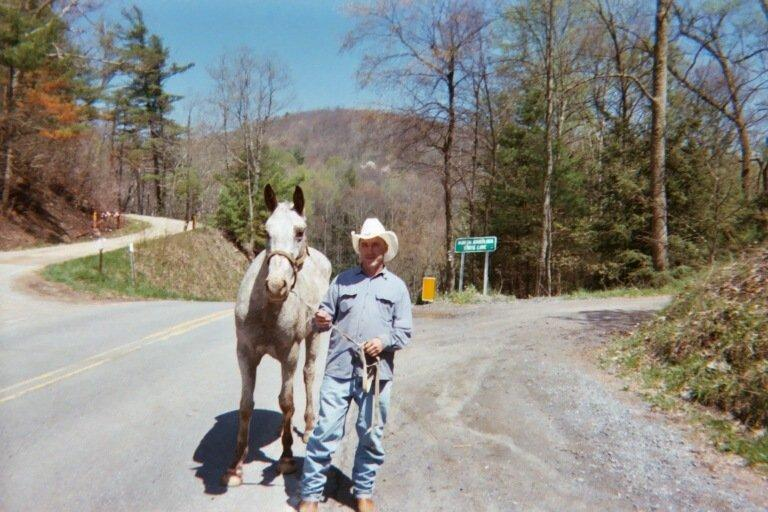
horse at Indian
Grave Gap
I
ran into some nice horses near the trail at Indian Grave Gap where
some horseback riding trails started. I stopped here for a bit before
climbing another hour to Beauty Spot, a really pretty mountain with a
great view of Erwin. I climbed to the top of Unaka Mountian, right
after Beauty Spot, I ran into my old friend Trog and had a chance to
have Matt take a picture of me with him to show the folks back home.
Hiking down this mountain, the amount of mayapples beside the trail
were amazing.
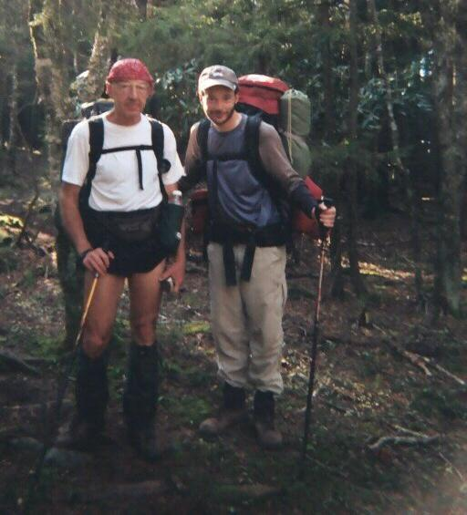
I
got to Cherry Gap Shelter around 7pm, and saw Noodlehat and Soren
here. This is where I found out about their different experiences in
Erwin. I also found out more detail about Soren's stay in the
campground outside of town and found out about Noodlehat's time at
the other competing thruhiker hostel of Erwin.
There
was also a section hiker here, Hans, on a three month leave from his
job in Stuttgart, Germany, the city where my grandparents immigrated
to the United States from. I found this hiker very interesting to
hike with, because of my knowledge of German culture and having his
city on my list of places to get to someday.
We
got to Iron Mtn. Gap early that morning, hoping to find a gas station
that was listed in a guidebook for some donuts and orange juice. The
day after staying in a town, hikers do not enjoy going back to lousy
trail food. In my case, I was hoping to skip my now usual chocolate
pop tarts that morning. Unfortunately I could not find the gas
station so I had to eat my pop tarts.
I
hiked that morning with Chimpy from Ohio, a few minutes ahead of
Soren. We stopped for an early lunch at Clyde Smith Shelter after
hiking what seemed like ten different knobs, Soren and Hans, got here
a few seconds later.
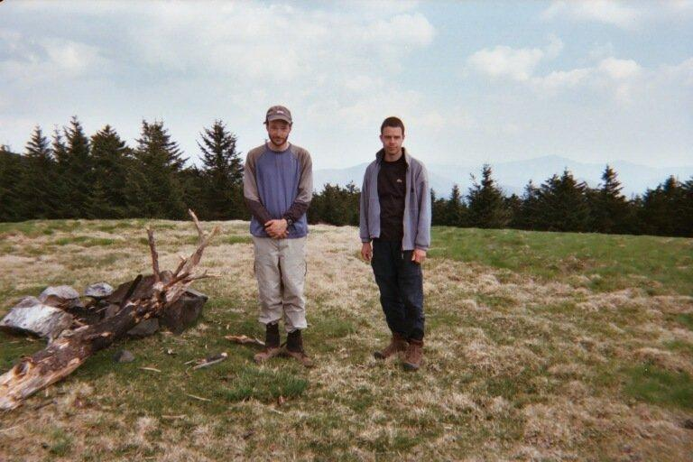
Soren
and I climbed to Roan High Knob that afternoon, getting there around
4pm. I couldn't figure out how a park like this would be closed for
the season when the weather was sunny and 70. The roadside rest area
bathrooms, which the hikers were starting to enjoy more than using
the woods or outhouses, were still locked. All that was on the summit
were the remains of an old hotel, like I had seen on many mountains
of the northeast that I had grown up hiking on.
It
was 4:30 when we got to the highest shelter on the trail, Roan
Mountain Shelter, at 6200'. It was a nice two level enclosed shelter,
which was better than most of the common three sided lean to's that
we were used to seeing. Matt and Hans met the two of us here at the
shelter and we enjoyed a break together. A local AT trail crew was
here fixing the shelter when we popped in.
Soren
and I ran down Roan Mountain to the road at Carvers Gap and up to the
Stan Murray shelter. Soren and I almost had the shelter to ourselves
for the first time since our first night together back in Georgia.
The only other person to show up after darkness at this shelter, was
Bluesky. Three more people showed up much after dark, though, so we
did not have the shelter to ourselves all night. It was lovely 70
degree weather that night with woodpeckers pecking away in the trees
above our heads. Owls were hooting around us quite a bit.
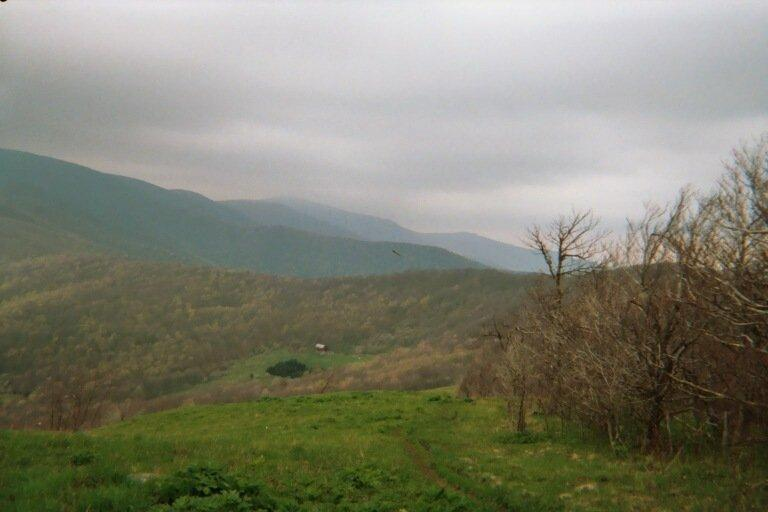
We
had a 1.5 mile hike downhill the next morning and got to the
Overmountain shelter at 8am, before any of the hikers who had stayed
there overnight had packed up and left. The shelter was just as good
as I had been hearing since Miss Janet's hostel in Erwin. It was a
renovated barn to had been transformed into a shelter in a spot where
you could see the entire valley below. I saw Euro Viking and Yakker
again before moving on. I even found an unused can of Chunky soup at
the shelter, which someone ended up leaving because it was so heavy.
What a treat this was to be from my usual Ramen dinner that night. A
former thru hiker that I met before, Carolina Cruiser, was filming
his documentary here and I would be on film at this shelter, signing
the journal.
Soren
and I were above treeline for a good part of the day and he ran ahead
to shelter himself from the 40 MPH winds which had made me put on my
fleece. I remet him after I got the top of Hump Mountain, where there
was a memorial to Stan Murray, who worked to save these mountains
from development.
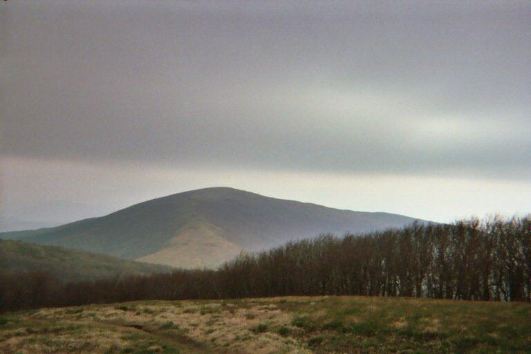
Hump Mountain
We
met some Pisgah Forest Rangers working on trail issues like mountain
biking misuse right before lunch at Apple House shelter at noontime.
We met Otter and Sherpa from San Diego at this shelter. Soren and I
stopped at Buck Mtn. Baptist church later that afternoon before
stopping for a longer break at Jonez Falls. We stopped here close to
the end of the day around 3:30. This was the first time on the trail
that I actually stood under a waterfall to wash myself off after a
very long day. I really enjoyed the Chunky Soup dinner that I ate at
the bottom of the waterfall.
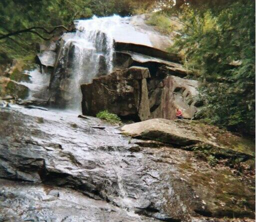
Soren
saw a great campsite along a river after the waterfall stop, but I
felt so rejuvanated by my dunk in the waterfall and the Chunky Soup
dinner, that I kept on hiking solo. I had already eaten so I decided
to hike on for the six miles that I thought were left until the next
shelter. I ran into Otter and Sherpa at Mountaineer Falls Campsite
when I got there at 6pm. As I was talking to them, I met a thruhiker
that I would see throughout my trip, Finch from Andover, Ma. Finch
was wearing an EMS shirt that I had sold him when he shopped at my
EMS store before his trip. I also met his companion, Dreamwalker,
from Bear Mountain, NY. at that campsite.
Otter
and Sherpa hiked onward ahead of me until 8:30pm, to a place called
Laurel Forks, where they finally pitched a tent and called it a day.
A half hour later, in complete darkness, I ran into four guys that I
stopped and talked to for a bit. I couldn't see their faces in the
total darkness, but automatically recognized them as thru hikers.
I
had hiked a gigantic mileage day of 29 miles that day once I finally
got to the Morehead Gap shelter around midnight. I hiked for almost
20 hours that day! This feat happened by accident, though, because
there was a trail relocation the previous year that added five miles
to the trail. I had expected to do 24 miles, which was pushing it for
me, but not 29! I ate all the rest of my food on this long day, so I
would have to resupply one unexpected time before Damascus. This was
a record, one I hoped I would not have to break again.
I
woke up at the normal 7am time for a nice 6 mile downhill hike to
Dennis Cove Road. Met Gazer of Florida (formerly NYC), Booble and F
Stop from Trumbull, CT, and Kunkapot Jack (named after a Mohican
chief) thruhiking with a dog from Woodstock, Vermont that morning.
Dunkin, Gazer, Hippie, One Foot Forward and I stopped for a short
break at 10am in a nice little mountain field on our way down to
Dennis Cove Road. As we got to the road, I remet Kunkapot Jack after
trail magic of a Sunkist Soda, a Nutrigrain bar, and a marshmellow
square. As it was noontime, and I was out of food supplies, I decided
to go to the Kinkora Hostel for the night.
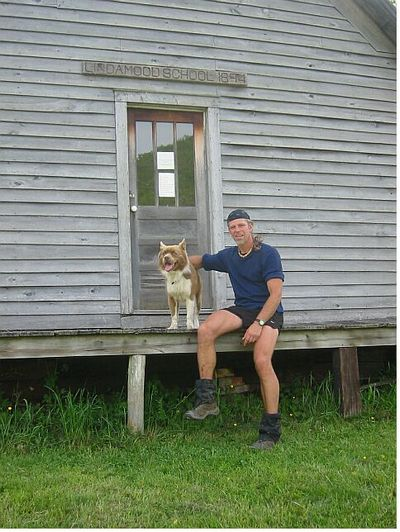
I
remet Soul Train, Disco and Glide at the hostel who I had hiked by
during my morning trip down from Morehead Gap. Soul Train's mother
lives near my parents house in Needham, Ma. I also met Spiderman from
Columbus, OH before a bunch of us hikers got a ride down to the town
of Hampton, Tn. We went to a Mcdonalds and a 24 gas station to
resupply. I headed down to town with Booble, Sly (a triple crown
hiker), Soynut and Bigpaw.
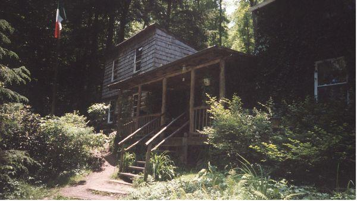
I
was in town and thought I could not possibly bring myself to buy a
Mcdonalds burger, which would have been a downgrade from trail food.
The hunger eventually made me give in and gulp down three double
cheeseburgers.
The
group of four that I had passed late at night two nights before
showed up at around 3pm. When Snack Attack, Cuss, Thirsty and Llama
from Ca. and Ohio came in it was interesting to actually see who I
was talking to at 9pm in the darkness on my 29 mile day hike.
We
had a great Beltaine (Scottish New Year), May 1st, feast that evening
at Kinkora which included traditional Irish food with at least 20
other thruhikers. Some of the food included onion pie, Corned Beef
and Cabbage, beer battered bread, quiche and plenty of iced tea. I
ate so much that night that I could not physically eat dessert. I had
to go and lie down for two hours while everyone else was eating
dessert. I had to struggle to hold all that food in me. I had to run
into the bathroom a couple times just in case I couldn't hold it
down. Luckily, it all stayed down..
It
was interesting having the hostel owner, Bob Peoples, tell us how
Scottish and Irish immigrants came to this area of Kentucky because
the hills and flowers of this area were just like the ones in certain
regions of Ireland. Thruhikers being sprinkled with May 1st morning
dew the next morning was a Celtic tradition promoting good health for
the next year.
I
was drying my socks late at night and sharing the drier with another
hiker. The drier was out on the porch at the hostel. As there was no
light on the porch, I ended up grabbing two dark socks which I
thought matched, but one was dark green and one was black. I hiked
with these mismatching hiking socks for may years as a souvenir of
my trip to Tennessee on the AT.
The
next morning, I got up and hiked right down to Laurel Creek Falls,
not far from the road and saw Soren's trail registry entry from the
night before, so I rushed ahead to catch him. A very steep morning
climb and the new fear that I would not make the Damascus post office
by Saturday (this being Thursday) made me hurry. That would cause me
to waste a couple of days in town and fall behind schedule, which I
did not really want to do.
I
stopped at Watagua Lake for lunch with Soul Train and met a new
thruhiker, Healer from Iran, with Multiple Sclerosis. He was the
first person I had met hiking the trail for a cause, to raise money
for MS research. Although some thruhikers did go swimming in the
great sunny weather that we had that day, I was not in the mood to
swim at all. I walked past a tire swing where it was rumored that
some younger thruhikers use occasionally on the far side of the lake.
We kept going until Watagua Lake Shelter. I stopped here and saw that
Soren was only a couple hours ahead of me, since he went to the town
before Watagua Lake for groceries. This, of course, gave me more of
an incentive to race ahead and catch him. I crossed Watagua Dam and
climbed uphill.
I
got to the Vandeventer Shelter at 5pm that night to one the most
beautiful rainbows that I saw on the entire AT. 20 of us thruhikers
were there to see it. But, this shelter was also full of sick hikers
when I got here. Other thruhikers hiked on for a mile or two to stay
away from the hiker sickness that was going around that shelter.
My
main concern at the moment was making the Damascus post office by
Saturday at noon, and with only 33 miles left, there was an outside
chance I could get there before it closed for the weekend.
I
got the very last space in this shelter next to Hans from Stuttgart.
Hikers like Otter and Sherpa, White Lightning were on there way out
of shelter as I got there, because it was very crowded. Hikers like
Cuss, Thirsty and Llama were also at the shelter and Healer ended up
staying next to me that night.
A
thru hiker that I had met briefly as he shuttled people around at
Miss Janet's, Lemming, mentioned that he was hiking the 33 mile day
in to Damascus tomorrow with a couple other people including Charity
from Maryland, because the terrain was much easier than it had been
for the first few hundred miles of the trail. They were calling it
the Vandeventer 50k. They were talking about getting going before
dawn at 5am and I was not very motivated to join them.
I
got to Iron Mountain shelter the next morning at 10am after hiking 7
miles in 2 and a half hours. At this shelter, I ran into Kunkapot
Jack as well as Llama and White Lightning, who had just camped a
little ways up from the shelter the previous night. Everyone plans on
hiking the 27 miles left into town tonight, so I am really starting
to seriously think about it.
At
the next shelter, I had a big lunch of 2 ramens, a big packet of fast
food mayonnaise from Wendy's and some tuna. (spoiling myself) I was
so excited to have 15 miles out of 33 done already by lunchtime. Hans
showed up as I was leaving and he hiked with me to Low's Gap. I had
done 18 miles at 3pm and didn't think I would go much further. I
waited a half hour to hitch a ride into town and was debating moving
on and staying at a shelter a mile in from the road.
However,
a man who I ran into walking his dog on the trail, Josh from Bristol,
TN, agreed to give me ride down to town to get dinner in Shady
Valley, TN. He would also give me a ride back to the trail
afterwards. A thru hiker never passes up a chance for food, I went
down to Shady Valley with him, bought him a Pepsi and had myself a
great meal at the only diner in town. The waitress at this diner, who
went to college at UMaine-Machias, was starting to talk me into going
back for traildays in Damascus in two weeks. I am starting to really
think about this in the future. My original schedule did not plan for
this, but this event sounded like it was not to be missed.
I
got back to the trail at 5pm after having a full steak dinner
including a baked potato, ice cream, chocolate cream pie, an Almond
Joy, a Hershey bar, a pack of ten peanut butter cookies and an orange
soda. Only 15 miles to go, but I had a super energy burst after all
of that food.
I
said goodbye to Josh and got to the next 3 person shelter from the
1930's at 6:30 and only had 11 simple miles to go. I had enough food,
a fully charged headlamp and tons of energy. I got to the Abington
Gap shelter at 7:15 to see people like Hans, who settled in for the
night and hikers like Thirsty and Llama, who were after the same goal
as I that night. Damascus!
I
got to Damascus at 11pm after hiking with Nothing Decent from
Manchester, NH and met Thirtsy and Llama right before town. I crossed
the state line into Virginia in complete darkness at 9:45 and
completed the Vandeventer 50k. My feet really hurt after this long
day. One Foot Forward bunked with me when I got to the Place hostel
in Damascus at 11:30. We wandered around town looking for the church
that I was close to for quite some time. I saw Soren's entry and
Flash's entry in the journal. They both had only come 17 miles that
day. Ha! Wimps.
I
am so proud of myself that I will make the post office in the morning
and not be forced into waiting an extra day or two to get a maildrop.
I deserve a zero day after the last few days.
The Place hostel in Damascus
Southern
Virginia, Damascus to Pearisburg
I
woke up at the Place and got going around 7am to have breakfast at
the Sidetrack Cafe with Soren and Lemming. While we were paying for
breakfast that morning, I found out that there was an all you can eat
pancake contest that I wished I had known about that morning. I said
to myself that I would try it the next morning before I left town.
Knowing my giant appetite when I had gotten to towns before, I knew I
had shot at beating the record of 7 hotcakes.
I
was at the post office when it opened to get my second maildrop. I
got my package, ran to the public library to update my online journal
and check my email. I found that my detachable fanny pack from the
top of my big Gregory backpack came in handy today, the first time I
had ever used it.
At
lunchtime, Soren, who was originally going to go on ahead, changed
his mind and decided to stay and have pizza with me. We ended up
relaxing most of that day, doing laundry and going to see a good
southern rock concert that night back at the Sidetrack Cafe. Quite a
few thru hikers were there that I knew that evening including
Noodlehat, Hans and Soul Train.
The
next morning I got up and raced to the Sidetrack Cafe to start the
pancake challenge which I had seen the morning before. I planned on
finish the pancakes and leaving to hike north only to come back to
Damascus for Traildays in a week's time.
I
had quite a crowd gathered around me at the start of the contest, but
as the number of the hotcakes increased, my time to eat each one grew
longer. My friends, Noodlehat and Soren, left in the middle of the
morning before I finished the hotcakes to begin hiking. I finished
the pancake challenge at 11:45 after finishing 8 hotcakes (the
equivalent of 24 pancakes, since 1 hotcake was the size of 3
pancakes), beating the old thruhiker record of 7. I had Flash, my
thruhiker roommate at the Place, congratulate me. I got a picture of
myself on the wall of the Sidetrack Cafe saying that I had won the
pancake challenge at 11:45 am on May 4, 2003. I had thruhikers that
met me along the trail for the next couple months tell me that they
recognized me from that picture.
On
my way out of town with a full stomach, I stopped by the Old Barn for
an ice cream after all those pancakes. I ran into the waitress, Mary
Alice, who served me dinner in Shady Grove, Tn., two days earlier.
What a small world! She was surprised to see me again!
I
got such a late start to the hiking day that I planned on hiking the
10 miles to the Saunders shelter, the first shelter from town. I
hiked most of the afternoon with a new thruhiker, Bag from from
Williamsburg, Va. The pancakes were very heavy in my stomach as I was
hiking. I finally got to the Saunders shelter around 5:30, where Bag
stopped for the night and I met Dragonfly from Oklahoma. I was not
hungry or tired at all after hiking a half day with a full stomach. I
read the shelter journal and saw that Soren had moved on to the next
shelter, so I decided to move on after a short break.
The
next few miles were along the bike trail leaving Damascus, the
Virginia Creeper Trail, so I figured that it would be pretty easy.
Hiking along the bike trail that evening, I remet VT Pete, who was
hiking with Stripe and Corncob, some older guys from Hyde Park and
Newton, Ma. very close to my home.
I
got to the Lost Mountain Shelter at 9:30pm. I had hiked along the
bike trail until dusk and spent the last hour in the woods hiking up
to the shelter. Of course, as I was getting accustomed to by now, the
first shelter a full hiking day away from town was always full. I had
to set up my tent out in front of the shelter. The wind was picking
up as I set up my tent and wrote my journal entry that night. I could
sense the coming rain, but hoped that it would hold off until I got
going tomorrow. A 16 mile day this day starting at noontime was very
impressive, completely fueled by pancakes.
I
awoke the next morning to heavy rain pounding the sides of my tent.
The DWR treatment that I had mailed to me in my maildrop and sprayed
all my equipment with in Damascus seems to be working very well,
since my tent is not wet at all. This day is not looking to be a
great one to hike above treeline, which I have to do by going over
Whitetop Mountain.
Elk Garden road crossing
Lemming,
Soren, Healer and I all hiked up Whitetop Mountain in the rain. We
got above treeline where the rain stopped and the winds really kicked
in. The wind was so strong that one of my hiking companions had his
pack cover blow off the side of the mountain. We endured yet another
rainstorm above treeline, we descended to Elk Garden by 1pm. The rain
stopped and the clouds were starting to clear. I was fascinated to
see the cattle crossing the path in front of me all over the
mountain. This was not like anything that I had seen before.
We
stopped for lunch at the foot of Mount Rogers, the highest mountain
in Virginia, at a place called Deep Gap. This was a site of a former
shelter that was heavily used to the point of destroying the
landscape. There was still a nice spring here, but signs everywhere
said no camping.
I
climbed Mount Rogers via side trail about 4pm and headed back to the
Thomas Knob Shelter at the top of the Mount Rogers ridge back on the
AT afterwards. I saw my friend Lemming there and it turned out that
he and I were the only thru hikers of the day to actually climb to
the actual summit of Mount Rogers, located on a side trail off the
AT. Quite an achievement being the only thruhikers of the day to
climb the highest mountain in Virginia!
Lemming and I as only thruhikers of the day to climb Mount Rogers summit side trail
This
mountain would turn out to be one my favorite hiking peaks of the
trail, on a favorite area of the entire trail. I hiked for a few
miles above treeline enjoying great views to get to the Wise Shelter.
I would end up meeting Hans and four college aged hikers from
Portland, Maine, two of whom, Jake Abbott and Chris Sparacio worked
at EMS Augusta. All four of them were originally from a town near my
college, Gardiner, Maine.
Early
the next morning as we were eating breakfast, I traded the promise of
future beers in Portland for food. This netted me lots of food
including some Chips Ahoy, Oreos, a Nutrigrain bar, Pop tarts, 2
hershey bars and three powerbars. Unfortunately, we never did get in
touch when I returned to Maine after my thru hike.
I
hiked for 5 miles this morning through some of the most beautiful
terrain of the AT. It was so beautiful hiking above treeline through
pony fields, having 30 MPH winds blow me around. Hans and I saw Soren
for lunch at the next shelter, the Old Orchard Shelter, but he was
just finishing as we got there. Soon after lunch, Hans and I got to
the 500 mile mark.
Hans
and I reached the side trail that led uphill to the Hurricane
campground, but we heard the camp store was not open up the short
side trail. We combined the climb to a campground and the potential
uphill to a closed store, we did not feel like stopping.
The
promise of trail magic (free food) is ahead, so that kept me going.
There was no trail magic at the roadside where the food was rumored
to be at, so I finished the powerbars that I had gotten from the
Maine hikers earlier today.
I
got to the Raccoon Branch shelter after 4pm, looking forward to two
easy days ahead. I was alone at the shelter for three hours until
Booble came in around 7pm. I loved having time to myself at the
shelter to plan my trip for the next few days, eat the rest of the
food I got that morning and soak my feet in the stream next to the
shelter.
crossing fields and stiles on the Mount Rogers ridge
I
woke up the next morning and did a fast morning hike over the
annoying 7 peak Brushy Mountain. I had heard rumors of pizza delivery
at the next shelter. I ended up getting to Partnership Shelter and
Mount Rogers Nat'l Park Headquarters at 2pm.
Soren
was already here when I first got here. He stayed at a shelter 3
miles ahead of me the previous night. I took a brief rest with him
and hurried off to the visitor center to call the pizza delivery guy.
This is the only shelter on the AT where pizza is delivered to
because it has road access. We both bought a few Mt. Rogers souvenirs
while we waited by the visitor center.
The
pizza came and we feasted on the extra large 16 inch sausage and
pepperoni pizza, buffalo wings, bread sticks and two liter bottle of
Pepsi. We had to let it settle a bit before hiking on the next 7
miles to Chatfield Shelter. We were eating the food at the park
headquarters (eating a pizza at a shelter in front of your fellow
hikers, is a good way to have it disappear very quickly), I ran into
another ex EMS'er, Nimble from Long Island.
We
got to the Chatfield Shelter at 7pm with a very full stomach, after
passing an awesome view of the valley below, where I 81 ran through.
Soren, Booble, Spiderman, Lemming and Nimble all joined me at the
shelter that evening. I looked forward to the easy day into Atkins
tomorrow. We did not need dinner that night, I dreamt of the things I
could do in town the next day and heard a southern bird, a
whipporwill, chirping the whole night for the first time. It was very
soothing to hear.
I
got to Atkins early in the morning after coming out of the woods into
farm fields. It was interesting passing an old schoolhouse on the way
down. (pictured previously with Kunkapot Jack and his dog)
I
had a second breakfast of sausage and eggs with Lemming when I got to
town. Soren came into eat with us a few minutes later at 9am. To my
delight, this restaurant also sold Girl Scout cookies, which I
promptly bought and ate. Soren and I went across the street to a gas
station mini mart and did our resupply until Pearisburg and got more
junk food before checking in to a motel right next to I-81. We took
advantage of the sunny day and dried some of our stuff out from the
rains of two days before.
Soren
and I got a ride into town from some people at another local diner to
the town post office which was three miles down the road. We were
told a story about the female postmaster painting the post office
lobby pink because the government would not give them the money to
paint the post office lobby at all.
I
took care of some postcards at the Atkins post office and mailed home
souvenirs that I picked up at Mount Rogers headquarters. We walked
across the street to a local diner for a big lunch. A guy who worked
at the Atkins diner let me use his laptop with high speed internet to
update my online journal and check my emails. I considered this a
successful town day with some postcards written, a phone call home
and some beers enjoyed!
We
resupplied for the next few days at a nearby gas station grocery
store and settled in to our motel. This motel was great except for
having I-81 running a couple hundred feet behind it. As a hiker, a
nice bed and shower mattered more than a little highway noise. We
were cleaning up and had CNN on TV. A press conference was being held
by a hiker who had to cut his arm off with a pocket knife to save
himself as he was pinned underneath a boulder in the wilderness. That
was a pleasant thought for a thru hiker!
We
spent the rest of the day watching CNN and the Weather channel. We
also dried out our stuff. Soren always had tented and I had always
stayed in shelters, so I had nothing to dry. We got back to the motel
that night after another food run, and watched a movie on HBO, the
Mothman Prophecies. This was an interesting movie about a place in
West Virginia, not that far from where we were in Atkins. After the
movie was over, feeling spoiled, I had a Dairy Queen Blizzard
(milkshake) that I picked up earlier, and watched the Tonight show.
I
was starting to think about possible ways to get back to Damascus
from Pearisburg in a week's time. I was going to see about renting a
car in Pearisburg or catching a shuttle, but since Soren was not
planning on going I was not sure what I was going to do. Every NB
thruhiker that I had talked to was planning on heading back to
Damascus, so I was sure something would work out. I was hearing that
5,000 hikers would be there. It would be quite a party.
We
left Atkins in the morning, climbing through farm hay fields for two
miles to leave the town just like we entered it. We stopped for lunch
at the unofficial 1/4 mark at 530 miles from Springer around 1pm.
Soren and I came out of walking three miles of farmland to see
Carolina Cruiser shooting more footage for his upcoming documentary.
(who had I had met previously near Springer Mountain and at
Overmountain shelter) This was at a road crossing by a big pavilion
where Soren and I could rest for awhile. This was the major meeting
place for the people of Ceres, Va.
We
got to the Knot Maul shelter at 4pm after a 13 mile day. With the
next shelter 9 miles away and rain forecast for the night, we decided
that it will be a good idea to stay here and not get wet. We were the
only ones at this shelter until Cuddler from Knoxville, TN showed up
at 6:30pm.
The
next morning we climbed to the top of Lynn Creek Mountain. I had my
first fall of the trail, slipping on a wet root on the way down the
mountain. I was scared for a minute, but I only ended up with a
scrape on my left arm and my right knee. I didn't even draw blood
from my wound. I got down the mountain to Lynn Creek at 9am, stopped,
washed my wound, met a new thruhiker Dragonfly, and still felt great.
I
was hiking up to the Chestnut Knob shelter, I saw many mountain apple
trees and rhododendrons in full bloom. I was not used to seeing the
apple trees at 4000 feet, either, as they did not grow that high back
in New England. I saw my first ladyslipper here and a three foot
black snake slithering through the grass.
I
got to the Chestnut Creek shelter for lunch after getting spectacular
pictures of the fields coming up the side of the mountain. We had
just arrived at a part of the AT that was ended up being one of the
most scenic, Burke's Garden, nicknamed God's Thumbprint. This valley
is nicknamed God's Thumbprint because it is a farming valley entirely
surrounded by 4000 foot mountains. It was very interesting,
especially on this sunny day.
This
was the first day I ran out of water during my hike and could not get
any more water anywhere for hours. I drank my last water of the day
at noontime and since we were on a ridge on this stretch of trail,
there was no water anywhere. By 5pm, I was really thirsty and hunting
for water anywhere I could find it. I did have some peppermint
candies that I had horded at the motel counter in Atkins that helped
to quench my thirst.
A
new thruhiker to me, Bigpaw came along and was also out of water. He
told me about the spring mentioned in his guidebook, but not the
guidebook that I had. We found the spring, I just drank and drank,
even more than usual. We got to the Jenkins shelter at almost 7pm and
seemingly long 19 mile day. We had a full shelter this night.
On
this Mother's Day, Bigpaw, Trukin', and I descended the 11 miles down
to Bland together. We all hitched a ride together into Bland. On the
hike down to town, there was some nice trail magic of V8's that had
been left by a Methodist church group that we got to as a heavy 30
minute rainstorm soaked us.
We
got to the store in the town of Bland and I called my mother to wish
her a Happy Mother's day.I ate a crazy amount of food just like I did
in all of the other trail towns so far. I ate 3 Kit Kat's, 2 slices
of pizza, a bag of cheetos, a Mountain Dew, a Sprite, a Strawberry
Shortcake ice cream bar, a 3 musketeers bar, a donut cake and one
final melted Kit Kat. A really balanced diet! A nice three and a half
hour break in town, got me motivated to hike again.
I
hiked on to Helvey's Mill shelter at 5pm, but with all the sugar in
me, I felt like hiking the next ten miles and I wanted to keep my
schedule. One hiker, Raging Joe from NC, was heading on past the
shelter like me. Bigpaw, who had gotten a ride back from town with
me, was happy to stay at the Helvey's Mill shelter that night.
At
9:30, I got to the Jenny Knob shelter, where Raging Joe had beaten me
by about 15 minutes. I got to eat the entire potato salad container
that some southbound thru hikers had given me in Bland along with the
remaining tuna that I had in my food supply. I could afford to eat
everything in my pack with a waterfall and a hostel coming up
tomorrow.
Dismal Creek Falls
Early
the next morning, I reached a very nice suspension bridge over a
river right before crossing VA 606. I was thinking about stopping for
a rest to admire the bridge, but the waterfall was only a mile away
so I just kept going. I got to Dismal Creek Falls an hour later and
enjoyed the place so much, I stayed for an hour. The terrain changed
from mountains to forest as we were in the heart of Jefferson
National Forest. I had staring contest with a white tailed deer for a
few minutes while waiting for Soren. I had 12 miles left until the
hostel, so I could take my time this day!
Soren
and I stopped for a second lunch a little further along the trail at
an awesome pond near Wapiti shelter. We ate lunch there, went up to
the shelter and decided that we would probably not see each other
again. The next day when I got to Pearisburg, I wanted to head back
to Traildays for the weekend, but he just wanted to keep hiking on.
He did not have much interest in going to hostels or festivals like I
did, so we said our goodbyes and I never saw him again. I would read
his entries in trail journals for the rest of my hike.
I
got to the Woods Hole hostel at 6pm and only one other thru hiker was
here with me, Stocliff (a SB hiker). This place was a really nice
rustic farmhouse with barn for hikers to sleep in. The fridge in the
barn was full of candy bars and sodas for 50 cents apiece. I must
have had ten of them.
Highpocket
and Tilly, an older couple from Atlanta, were the caretakers and it
was Highpocket's 80th birthday. Both of us thruhikers joined
Highpocket, Tilly and three of their Atlanta relatives with some
birthday cake that evening. Highpocket, an avid AT hiker, was talking
being rescued from the Appalachian Trail during a winter storm many
years ago. I was from the north (and had dealt with winter
storms) and Stocliff was from Alaska, I could relate to his story.
Cutting down tree outside hostel
The
next morning at the hostel, I had some eggs, some sausage, 10
biscuits, and a bowl of grits (which I was really starting to like at
this point). I decided to volunteer to cut down a couple trees for
them because these good sized trees were threatening to rip down the
power lines going to the house. They gave me the entire breakfast for
free because of the chore that I helped them with. It was nice to be
able to help out another part of the trail community after receiving
so much help along the trail.
I
didn't get back to hiking until 10am after my late start. I had a ten
mile walk along the Pearis Mountain ridge to town. I got to the next
shelter an hour later, read the register and saw that Soren had
stayed there the night before. I was hoping that I might see him in
town one last time. Stocliff was the last entry before that, so I
guess he was alone that night.
It
was 1pm when I got to a place called Angel's Rest, directly above the
town of Pearisburg. I had the town directly below me, so I didn't
have to worry about rushing to the post office for my maildrop by 4pm
when it closed. I was glad didn't have to go to town as fast as I did
going into Damascus.
Aunt
Tilly told me about the shortcut into town, by taking a right at the
first road crossing instead of taking the AT to the New River
crossing, so that would save me lots of time. I got two rides in this
town, one to the Post Office and one to the Holy Family hostel within
minutes of leaving the post office.
My
maildrop had not arrived yet from my parents, so I will have to hope
it arrives on my return to town after Traildays. Spunky from EMS
Connecticut was here at the hostel (who started hiking 2 weeks before
me) when I got here along with Deadlung (Matt from Pa.) who I had
last seen really quickly in the town of Bland. He had run out of
money and supplies two days ago and hitched here waiting for a
maildrop.
I
walked down a hill thru a field by the hostel after settling in down
to a local Walmart. I also saw a Wendy's right outside the Walmart
where I devoured a burger at Wendy's and met Skywalker, who I hadn't
seen since the Side Track Cafe in Damascus.
Skywalker
and I went back to the hostel, and walked all the way from the hostel
to town to his motel (almost 3 miles). We looked at rental cars for
the next day, went to a local Virgina Tech sports bar to get a beer,
and headed back to his motel room. I left his motel and headed across
the street to an all you can eat chinese buffet. I met Slowride from
Lowell and his friend who driven down from Pelham, NH to pick him up.
His friend decided to buy us dinner. How nice of him, especially to a
thruhiker with no income.
The
next morning, at an all you can eat Pizza Hut buffet, I ran into
Tilly and two of her friends from Atlanta. I can say what a small
world once again.
A
bunch of us at the hostel that night had decided to rent a car and
drive it down to Damascus twice! We split the car among 9 hikers and
it came out to about $40 a person with gas, which was affordable to
hikers. I would be in the second carload at 5pm, with Bam Bam driving
both roundtrips. It was a little crowded, but what do you expect? I
split the car with Flasher, Flasher's brother Bam Bam, Radio Shack,
Brie, Spunky, Leapyear, Flasher (from Va.), Tom, and Euchre (who
would become a major troublemaker to others later in the hike).
I
met Librarian, Bigpaw and Lemming while I was waiting for ride to
Damascus. I will see some of them at Traildays and some not. They had
told me that Soren had gone ahead and was at least 20 miles north of
Pearisburg. It was sad to think that I would never see him again,
after hiking with him almost daily since the early days in Georgia. I
will have more fun by going to Traildays than I will by hiking north
and skipping a big AT festival. I want to spend more time with
friends on this trip than rush through the trail. I am starting to
look forward to meeting one friend in Waynesboro, one friend in Luray
and my parents in Harpers Ferry.
Traildays
(May 15th - 18th)
Our
first carload didn't get going from Pearisburg to Damascus until 5pm.
That meant that the second carload didn't get going until 11:15pm.
Our second load of Spunky, Leapyear, Flasher and I got to Damascus at
1:30am. Our tents were setup by 2:15 and there were still many
partiers still partying that late on that Thursday night. We tented
in trail hostel legend Miss Janet's section of the campground since
Flasher knew her personally.
The
first person I saw in the campground that morning was Cruiser from
SC, who I had seen in my pre Neels Gap days and was going to move to
Boston after her trip.
I
went to breakfast with Leapyear and Spunky at the Sidetrack Cafe and
ran into Erika from EMS. I ran into more familiar thru hikers who I
had met earlier in my trip, like Windtalker, Very Small Animal and
Spitfire. I also heard that a friend who had hitchhiked down from
Pearisburg, Skywalker, had gotten his gear stolen, by some people who
had taken his stuff while he and a companion went into a gas station
for directions.
I
saw my first day companion, Vagabond, in town and headed back to the
campground with him. We talked about the old times before Neels Gap.
I realized that I probably would never see people like this again
since they were a hundred miles behind me at this point and we are
not even halfway through the trail yet.
I
saw other earlier hiking friends like Pumpy and Very Small Animal at
our campground as well, since we were all camped in a section of the
campground that were friends of Miss Janet. The big group of Miss
Janet's freinds had parties going until dawn almost every night that
we were at Traildays.
We
had a surprise half hour thunderstorm (which happened alot in the
south compared to what I was used to), and I ran into Librarian at
the outfitter in town. I also ran into Erika again at the town
library as I was looking at thruhiker friends online trail journals.
I already had ample time to update my own trail journal during my
full day waiting for the ride down in Pearisburg.
I
ran into Oopala at the library who was a few days behind me in Bland.
I was kind of hoping that old friends that were that so close to me
would end up catching me eventually. I also ran into former
thruhikers that had hiked the year before with one of my AT advisors,
Michelle (Turtle) from EMS Burlington.
The
small town of Damascus is getting super crowded as of Friday. I
especially noticed this when I went to the Sidetrack Cafe for lunch.
I had to wait a half hour to get inside. I went to the trail carnival
boothes after lunch and got a picture of Skywalker with a bunny that
he had won at a penny toss game. The question that everyone had for
him has "What was he going to do with the rabbit once he started
hiking again?". I heard later that he ended up giving it way
before he got back on the trail.
Spunky
and Leapyear left me for ice cream and I decided to spend the $40
(expensive for thru hikers) for a helicopter ride over Damascus. Not
a cloud was in the sky and it was nice to see the mountains
surrounding town that I had just hiked and the town from the air. I
even picked my tent out from the tent city below. There must have
been thousands of tents in the campground at that point.
I
wrote some postcards that had a special cancellation for traildays
and went into a Nimblewill Nomad presentation on his recent
International AT hike. That 5,000 mile trail included the AT, but was
double the length of the AT. He had just hiked the entire length of
it from Florida to Newfoundland.
I
went to library after the seminarfor a quick email check before
spoiling myself with a Pulled Pork BBQ dinner at the Old Mill
Restaurant.
I
saw old thruhiker friends Psycho Heiko, Shortlegs and Homebound on
Saturday back at the campground. Some of us met Bigpaw with his
pickup truck and got a ride to breakfast with him. I went to many
other presentations that morning on the ATC and ALDHA. I ran into
Miss Tilly again at one presentation and Erika again at the Sidetrack
Cafe.
I
ran into fellow thruhiker Odyssey again, who I had passed in early
North Carolina, and later found out that she was a friend of a family
friend. A family friend and her mother had grown up together in Lynn,
Mass. near my home. She also had relatives near my college in
Penobscot, Maine, not far from my college.
The
last event of the Traildays festival was all the former and current
thru hikers lined up and paraded down the main street of town. The
parade was around a half mile and lasted about ten minutes. There
were at least a few thousand hikers in the parade. Some of the hikers
in the parade were having water balloon and water gun fights with the
local children.
The Traildays Hiker Parade
The
parade wound down, Leapyear, Spunky, Radioshack and I went to the
Pizza Hut in Abington after Saturday night's festivities. We came
back to another all night party at the campground. I had become used
to the three nights with parties 50 feet away from my tent. I got so
used to the parties that I could sleep right through them.
I
got up on Sunday morning and went to Side Track Cafe for the last
time with Two Steps from Delaware. It started to rain this morning so
I raced back to the campground to take down my tent, meeting One
Third on the way back.
Instead
of having to split the car trip among nine people this time, an old
friend, AT Wannabe, gave Spunky, Leapyear, Kneepad and I a ride back
to the Pearisburg hostel. We left Damascus at 3:30 and got back to
Pearisburg at 5:30. I got back to the hostel, I met old thruhiker
friends Sumac + Undetermined who I hadn't seen since the Smokies and
another thru hiker, Steppenwolf, who I hadn't seen since the pancake
challenge in Damascus.
My
package was waiting for me at the hostel upon arrival (as well as
heavy rain and a 20 degree temperature drop), so things were good for
me again. My only problem was that I could not find my toothbrush
anywhere, so I bought a new one at the local Rite Aid in the center
of town. Sometimes on the trail, brushing your teeth seems like the
highlight of your post hiking activities!
Central
Virginia: Pearisburg to Waynesboro: The rain begins!
It
was a pain in the morning to walk the three road miles from the
hostel to get back to the trail where it crosses the New River. I did
that road walk and finally got going on the trail at noon. It was
really strange to pass a stream near the coal plant by the river
bridge that had a sign posted by the trail that said that the stream
water was undrinkable due to contamination!
I
got to the Rice Field shelter, my original planned home for the
evening, around 4pm to find my friends Bigpaw and VT Pete already
there. As I had already done previously on my hike, I thought a four
hour hiking day was too short, so I stopped for 15 minutes and headed
onwards. I did not plan on taking time for Traildays on my original
schedule so I had a couple of days to make up.
VT
Pete hiked with me to the next campsite about a mile away. At that
campsite, I passed Sumac + Undetermined and still marched on. It was
11 miles to next shelter and I thought I could make it with full
energy after my mini vacation of traildays. Hiking in the dark was
something that did not bother me. That was why I had a headlamp!
This
night was an interesting night. I got lost once that evening because
of blowdowns covering the trail, and found my way back to the main
trail. The second time I got lost around 9:30, I searched for the
trail for 20 minutes. There were small white circular discs on the
trees, which really confused me. I ended up following those blazes
for a few hundred feet only to have them end. I finally gave up
searching for the trail and pitched my tent on a the top of the ridge
on a flat spot between a couple of big trees. I was about three miles
from the next shelter and so disappointed that I couldn't stay the
night with my fellow thru hikers. Hiking through 50 degree weather
with high winds made me dig out my fleece gloves for the first time
since early April.
I
made it to the next shelter, Pine Swamp Branch Shelter, around 10am
after being woken by hikers. These hikers got lost near my tent in
the daylight. What had happened, was that the trail had taken a left
down off of the ridge, but an older trail might have gone straight
ahead like I had thought the previous night. There were two hiking
sticks laid down to block the path straight ahead. I thought that the
sticks were random hiking sticks left by some hiker so I (and they)
continued straight ahead. It did take a while for the other thru
hikers to see where the trail went, but after a few seconds it was
obvious in daylight.
I
noticed the temperature warm up to 55 that morning. I stopped today
for two lunches at a spring and Bailey Gap shelter, so I was in a
really good mood. The next shelter 9 miles away would put me right
back on schedule to meet my friend Gary in Waynesboro, 200 hiking
miles away. I hiked for most of the day with Old Smokey Lonesome and
Pippi from Kansas City. I stopped briefly at Wind Rocks and had Sumac
take a picture of me.
I
met a hiker named Brother Ron and hiked with him for last part of
afternoon. He remembered me from briefly meeting him at the Wendy's
in Pearisburg, the first night I was there. He was one of those
people I didn't immediately remember, but he remembered me. It was
probably because thru hikers know each other when they are on the
trail, but not in town when there are so many other people. I hiked
to the War Spur Shelter with Brother Ron. I loved being back at a
normal trail pace of 16 miles after having nearly a week off. Old
friend Healer was also at this shelter this night.
I
got to what would have been a nice view at Kelly Knob for lunch after
climbing most of morning in the off and on rain. The highlight of
the day was getting a trail magic banana from a group of day hiking
women. I spent the rest of the day hiking with thruhiker friends,
Healer, Brother Ron, Dreamwalker and Finch. I got to Niday Shelter
for dinner after being slowed a bit by Healer who was my new hiking
companion. We loved the Sinking Creek valley which we hiked through
around mid day. I was a little muddy from all the rain, but I all
could think of was something I had known of since I was little called
Hidden Valley Ranch (a salad dressing maker) because they both were
isolated valleys with farms in them.
We
had a trail birthday party for a female hiker Snotrocket tonight and
had the thing that most thru hikers dread, 15 school kids marching
into camp at 8pm. They were just getting up the next morning as
Healer and I were leaving. Healer, Strappack and I stopped for lunch
at Pickle Branch shelter after passing the Audie Murphy monument, a
monument to the most decorated soldier of World War II. (a marker at
the top of a hill reached by side trail that I didn't make) We would
hike the rest of the day to the Four Pines hostel together after
climbing over the Dragon's Tooth, a spire of rocks about 50 feet high
at the top of a mountain.
Dragon's Tooth
Healer
and I got to the Catawba hostel andsaw familiar faces like
Snotrocket, Sumac, Undecided, Strappack, and Dharmbum + Suds, who I
had last seen in the Great Smokies. The Four Pines hostel owner gave
us all a ride down to the legendary all you can eat restaurant, the
Homeplace in Catawba. This Saturday night was southern BBQ night and
all of us thruhikers feasted. We had all you can eat pulled pork,
fried chicken, potatoes, corn and biscuits. One of the great non
trail things about this trip was things like this where I could
experience real local southern culture that a tourist would never
experience!
Fifteen
thru hikers were at the hostel that evening, which was a converted 3
car garage with beer and soda in the fridge. I liked the one beer
that I could have that night. (Beer in the fridge would cause the
hostel to shut down a week after I was there. Some underage hikers
were drinking and got in a fight for which the police were called.
The police found the beer in the fridge and caused the hostel to shut
down) Unfortunately, there was no phone at this hostel, but since
Troutville was only a day away, I didn't mind that much.
Healer
and I got to Catawaba Mountain shelter at noon for lunch.
Reservations were already made at the motel in Daleville by Rocky
from RI, so there was no rush to get to our motel. We had the whole
day to enjoy the views from Mcafee Knob and Tinker Cliffs. Too bad
the best view in all of Virginia at Mcafee Knob was all clouded over!
We played tag with Sumac+Undetermined and DharmaBum+Suds all day
long. Healer and I managed to get to a shelter 9 miles from the road
at 5pm, so we knew we had a long night ahead of us. We hoped we could
make it to Daleville by 9pm, but we made it at 10pm instead. My boot
lace broke on the final downhill tonight, so I was lucky that I was
so close to town to get another the next day. Darkness came on top of
the last mountain, Tinker Mountain. An hour and a half of hiking
downhill through mud, rocks and roots was not very much fun. Healer
would just fall constantly while going down the hill and not feel
anything due to his Multiple Sclerosis.
This
was a 25 mile day, but the Pizza Hut sausage and pepperoni pizza with
breadsticks at 11pm made the long day worth it. I also enjoyed
watching normal TV such as the Tonight show which I would have
watched if I were back home. I also made contact with my friend Gary
from Boston who would meet me in Waynesboro on his way back from a
bowling tournament in Knoxville, TN.
I
spent this Saturday running errands around town after having a big
breakfast at the motel. Healer and I went shopping first thing in the
morning. On the way to the store, we met Booble who had slack packed
the day before (hiked the other direction with only a day pack and
had a pickup at the end of the day). We also ran into Sumac +
Undetermined, Dharmabum + Suds, and Flatlander (who I met at 8pm last
night as I was coming down the mountain in the dark). I ate lunch at
a southern fast food place called Bojangles that I loved. I left town
the next day andsaw old friend Wizard sitting in the motel lobby with
a sprained ankle.
Skies
had finally cleared and I couldnt wait to start hiking again. I hoped
to make ten miles in the remaining hours of the day. I got to
Fullhardt Knob shelter at 6:15pm, 5 miles in. I saw fellow hikers
Snuggles and Hamlet from Hingham, Ma. at this shelter before moving
on. I got to final shelter at 8:45 after hiking the next ten miles. I
enjoyed catching up with hikers like Rocky, Booble and Tucson. I also
met Tunnel Vision, a thruhiker slackpacking for the day. I am psyched
to be on the legendary Blue Ridge at last. It was the first time that
I had a small idea where I was since I had been to the Blue Ridge
when I was on family vacation as a teenager.
It
was an easy hike to the Blue Ridge Parkway where I got to at 9am. I
saw good views at two rest stops on one side of the western side of
the ridge, but it was completely clouded over on the eastern side. At
11am, I thought about stopping for lunch but the sun had come out, so
I moved on to the next overlook. I played tag with a French Canadian
couple, Do it and Fifty, for the rest of the day. The last time I had
I seen them was during my second day on the trail at Hawk Mountain
when there were nearly 60 people at a shelter. I got to the Bryant
Ridge shelter at 5:45 after hiking a 20 mile day in less than 10
hours. Rocky, Healer and Tucson were at this shelter when I got here.
I
left this shelter at 7am only to have a two hour climb up a hard
mountain. I got to the next shelter at 9:30 before climbing again. I
met two people from Bedford, Va. doing trail crew at Thunderhill
Shelter after climbing the two mountains by noontime. I got to Matts
Creek shelter at 6pm after a long day gaining and losing 5000 feet of
elevation. Healer, Tucson and I got to this shelter, Rocky was here
waiting for us. 23 miles of hiking in 11 hours. Not bad.
It
was nice to find some trail magic of marshmellows and crackers. It
really hit the spot. I was really hungry after the hiking terrain of
the last couple of days. I had 79 miles to meet Gary on Friday, I
look to be doing alright and will be able to meet him in time.
Grandma Bear + Grandma Turtle, a couple of 60 year old women thru
hikers from Rochester, NY, showed up around sunset.
hiking down to the James River
I
hiked the two miles down to the James River footbridge this morning,
passing thruhiker friend Librarian camped out along the trail and a
nice waterfall a little later. I crossed the trestle bridge over the
James River and found some trail magic of Little Debbie Snack Cakes
and a Pepsi. It was a great start to the day. Too bad it was raining
out.
I
hiked up to Bluff Mountain where there was a monument to a little boy
who got lost on this mountain in 1890 and was found dead near the
top. Fellow hikers had left a toy truck, a pop tart and pennies as
tributes on the marker.
I
stopped at 1:30pm at Punchbowl shelter for a long lunch to try to
wait out the heavy rain. I met Librarian, Flatlander, Healer, Mike
from Bronx (who I last saw in Erwin) and Tucson here. Earlier in the
morning, when I saw trail magic, I grabbed an extra Pepsi for Tucson
since we had talked about our hiker cravings while hiking together
the day before. I said that I want a pizza more than anything else,
but she had said she wanted a Pepsi, Knowing that, I saved the last
can of Pepsi for her. She gave me a nice big hug when I went around
to the side of the shelter to give it to her. (I didn't want to give
her trail magic in front of other hikers. That would have been bad)
I
got going once the rain started to lighten at 3pm and crossed under
the Lynchburg Dam and hiked around the Lynchburg Reservoir to the
Brown Mountain Creek shelter. The 8 miles of afternoon hiking was
through some of the muddiest terrain I had hiked through so far. The
last three miles of the day were especially bad. I got to the shelter
at 7pm and Rocky was the only one there. Healer, Librarian, Lemming
and Flatlander got in after me. I also met Snort from Vancouver that
night. The last mile of trail before the shelter had the remains of a
freed slave community, the Brown Mountain Village, where former
slaves lived after the civil war.
I
hiked to a road early the next morning with Librarian and we
hitchhiked down to the town of Buena Vista to have lunch at a
Hardee's. It was just what we needed after a completely rain soaked
day. We hitched back up to the trail and climbed Cold Mountain. This
would turn out to be the only sunny day of the whole lower half of
the Blue Ridge. I took some nice pictures from this nice, open
summit. I had a second lunch at this beautiful spot. I had old friend
Trukin (who I last saw in Bland, Va.) fly right by me before the next
Seeley Woodward shelter where Fifty and Doit (the French Canadian
couple whose name I didn't know when I first saw them) were along
with the two of us.
I had two days
and forty miles until my friend Gary C. comes to visit in Waynesboro.
Lemming, Librarian, Snort and Clover were already at the shelter
drinking the Sangria that Librarian had gotten when he was in town
that morning with me. They invited me to drink with them, but I knew
I couldn't do big miles with a hangover.
I got to the
Priest shelter at 11am the next day after hiking seven miles in heavy
rain. I was getting so sick of this rain! All my clothes were so wet
that I was debating going to Rusty's and getting a ride into
Waynesboro from there the next day. Trukin, Fifty, Doit were having
lunch here when I got here and the group of Lemming, Librarian, Snort
and Clover showed up a few minutes later. I ate lunch and passed a
clouded in view yet again, I was really mad. I stopped at the road
crossing at Tye River and debated what to do. I debated hitchhiking
to Waynesboro because of the fact that everything of mine was soaked
and I really wanted an extra day off.
That
moment was definitely my low point of the trail. I reached into my
pack and ate an entire 2 pound bag of M+M's (my trail energy secret)
which I hadn't eaten yet since I got some extra food when I stopped
in Buena Vista. I felt much better after this and was ready to start
climbing again.
At
the Tye River bridge right across the road from where I ate my M+M's,
I met Twofiddy and I was talked into doing the blue blazed Mau Pau
trail by some beautiful waterfalls. It was the old route of the AT,
so we were not really cheating by going off trail. The two of us
hiked up to the beautiful waterfalls and rested for awhile while the
rain stopped momentarily. He went for a swim and I was just just
happy to take off my socks and dip my feet into the water.
Twofiddy
and I rejoined the AT at the Maupin Field shelter where the rain
started heavily again. Trukin, who passed me earlier in the day, was
really surprised when I was waiting at the shelter for him. It was
nice to meet Healer again, who I last saw as I hitched into the town
of Buena Vista. From here, it was only a mile hike to Rusty's Hard
Time Hollow, a place that one of my EMS friends told me not to miss.
I got to Rusty's about six, with adequate time to dry out before
tomorrow. I managed to get a ride for the last half mile to Rusty's
along the Blue Ridge parkway with fellow thruhiker Clover. She had
been traveling with Snort, who I had met at Brown Mtn. Creek shelter.
Rusty's
Hard Time Hollow was an interesting place. Rusty used to be an Amish
man, who still did not use electricity and had one of the last
private homes on the Blue Ridge parkway. He had a sleeping loft for
all the hikers in a renovated barn and a common area for all his
guests to stay at. He filled this common area with Little Debbie
Snacks from town and his spring (refrigerator) with cold sodas. We
listened to bluegrass music for the evening, looked thru trail
picture books where I saw pictures of my EMS thruhiker friends, and
read trail journals. Flatlander, Snort, Clover, Lemming, Librarian
and I all went to sleep in the dry loft of a barn that night.
Waking
up at 6am to roosters crowing and woodpeckers pecking was a new
experience. Being so early, I was tempted to hike this day. All my
clothes were still soaked so I decided to play tourist and hitch a
ride along the Blue Ridge Parkway into Waynesboro to not miss my
friend, Gary C. I was thinking that this would be one of the places
on the AT that I have to comeback to in the future.
I
walked alongside the Blue Ridge Parkway for three miles that morning
past an AT crossing where fellow thruhikers were hiking northwards. I
hitched a ride to Waynesboro with a southern Virginia real estate
agent formerly of Poughkeepsie, NY and his friend. We stopped at all
the outlooks on the parkway and the Humpback visitor center which I
really wanted to see before we went to Waynesboro. It was very
interesting to see the Blue Ridge the way a normal person would see
it.
I
loved being in Waynesboro earlier than I thought at 1pm, so I had
plenty of time to do things before Gary got here. I heard on TV that
afternoon, that it had been one of the rainiest months of May in
Virginia ever. The news said that it had rained or been overcast 28
out of 31 days of the month.
Gary
C. had been on a bowling tournament in NC the preceding week and was
on his way home. He arrived at the motel that I was at about
dinnertime. It only took him about five seconds to complain about my
smell. I had showered butI did not wash my clothes, which hadn't been
washed in quite some time. The smell never bothered me, partially
because they were always wet. I was the phone with another of my
friends who would meet me later for day hikes on the trail, Andy, at
the moment Gary walked in. Andy heard Gary complain about the
thruhiker smell that second that he walked through the door.
Gary
took me right to the closest laundromat to do laundry and buy some
air freshener. We ate at the local Pizza Hut afterwards and hung
around the hotel room all night. We mainly talked about life back
home in Boston.
Right
after breakfast the next day at 8:30, he left for the 10 hour drive
home to Boston and beat the heavy rains forecast for today. Around
11am, after taking my time checking out of the motel, I went about my
normal town errands like food shopping and internet. I met Tucson at
lunchtime and she told me what to expect over at the YMCA that night,
where she had just stayed. I finished my errands by dinnertime and
was able to eat with Lemming and Tucson at Weasie's Kitchen, a thru
hiker restaurant famous for all you can eat pancakes, like the
Sidetrack Cafe in Damascus. Lemming and Tucson enjoyed some ice cream
with me afterwards, before I set my tent up behind the YMCA parking
lot. We had to get a pass from the gym desk before doing this. A
bunch of hikers at YMCA tentsite that night were going to aqua blaze
(raft down the Shenendoah River) and skip Shenendoah National Park.
The idea was tempting, but the Shenandoahs would be a highlight of my
trip, since I had driven though the park once. I had done a family
trip to Waynesboro before heading north on Skyline Drive with my
family when I was in high school.
Northern
Virginia: Shenandoah National Park to Harpers Ferry
I
hitched a ride back to the trail from town and signed into Shenandoah
National Park as a thruhiker. I had to display my permit on the
outside of my pack as I did in the Great Smokies. On this permit, you
had to guess which shelters you would be staying at throughout your
time in the park like in the Great Smokies.
I
had great views of Charlottesville and Waynesboro this morning from
Bears Den Mountain. This was the first crossing of Skyline Drive in
Shenandoah Park. I stopped for lunch at the Calf Mountain shelter
access trail a bit further on. The shelter was only one third of a
mile off the trail but since it was sunny out today, I did not feel
like hiking to it. It was a nice change to have a sunny day for once.
It seemed so long since I had hiked in the sunshine. It was
surprising to see only four day hikers this whole day in a major
national park, but it was a Monday today and the aqua blazing tours
started on Monday.
Later
in the day, I met a girl from Charlotesville out for a day hike who
gave me a trail magic Zone Bar. I saved it, since it was a nice treat
to have when I am hungry. This park reminded me of the Great Smokies
when I had some tourists take my picture at a crossing of Skyline
Drive. It also reminded me of touring Skyline Drive so long ago as a
teenager. Back then, I was fascinated anytime that I crossed the
Appalachian Trail by car. I vaguely remembered stopping at an AT
crossing in Shenendoah National Park with my family many years before
and hiking for a few hundred yards.
I
got to the Blackrock shelter after a 20 mile day of easy
ridgewalking. Familiar thruhiker faces like Red were here. This was
the first day of the trip that I did not see a single thruhiker on
the trail. At the shelter that night, I met hikers like Beekeeper and
Reststep for the first time, remet Mountain Momma and Olaf from
Hudson, Ma. who I had met at the motel in Waynesboro on Friday before
Gary arrived.
Nightcrawler
stopped by the shelter briefly at 7:30 before heading to Loft Mtn.
Campground. He had been coming straight from Rusty's without stopping
in town, a distance of almost 40 miles! I found out from Nightcrawler
that Rusty was an Amish breakaway who was bothered by the Amish and
some violent hikers on occasion. Nightcrawler was from Burlington, Vt
and a southbounder in 2002. I have been playing tag with him since my
first days in Virginia.
I
got to the Loft Mountain campstore at around 10am, ready for my first
lunch. I met Medicine Man here and had shelter companions of the
previous night, like Beekeeper, meet us soon after. I hiked for an
hour after lunch and came upon some rocks that had great views of
Skyline Drive in both directions as well as with Luray, Va.
I
got to the Pinefield Hut at 1:30 with about 8 miles left for the day.
Met Daysman from Harpswell, Me. (hometown of a college friend) along
with Red. We had some trail magic Budweisers that were left in the
stream outside the shelter. I found out in this shelter log, that my
trail companion Healer had to go back to Iran, so I doubted if I
would ever see him again.
I
hiked most of the rest of the afternoon with my new friend Reststep
and discovered that beer for lunch is not a good thing when you are
hiking. I was sweating that afternoon like it was 100 degrees while
climbing one mountain. Trail magic of an apple and a Reeses Candy bar
in a bag at the side of the road made all the difference in the
world. I got to the Hightop Hut at 6pm after 22 mile day with two
hourlong lunch breaks. I arrived at the Hut along with Reststep and
we were the first ones there. Daysman and Bluesky (who got his pack
stolen along with Skywalker's while hitching to Damascus) came in a
little later. They are hiking at the same pace as me. I hoped to make
the restaurant at Big Meadows tomorrow night.
A
nice morning lunch stop at the Lewis Mountain Campground was the 900
mile mark. I celebrated this milestone with Reststep in this
'Disneyland for Hikers' by eating pastry, Reeses, rootbeer and fudge
in addition to normal my normal cheese + pepperoni lunch. According
to Reststep, since thru hikers can stop for food or a nice break
every ten miles (twice a day), it was almost like Disneyland,
especially compared to what we had been through. The fact that
roadside trash cans were located every few trail miles helped as
well. This meant that thruhikers did not have to carry their trash as
usual.
I
had to endure another very windy and rainy afternoon with no views at
all. I decided to just suck it up and stay at Big Meadows for the
night. $80 is more than a hiker on a fixed budget wants to pay for a
room, but since I could include dinner and breakfast on my bill, my
decision was made rather easily. It was great that I could put it on
a credit card and not worry immediately about paying it. All of my
stuff is soaked today, but I have a new dry pair of stuff to change
into unlike most of the cold, wet nights of the last two months.
It
was amazing how many deer I had seen in the Shenendoah park over the
last two days. I saw a mother and a baby deer right in the middle of
the trail during today's rainstorm.
I
met Reststep in the hotel lobby after eating an awesome dinner of
chicken topped off by a raspberry ice cream sundae. I watched the
weather forecast with him. The weather said it should be clearing as
of midday tomorrow, so we will be in no hurry to leave the next day.
Because of our potential late start, I grabbed a beer with Reststep
down in the pub where they had live entertainment at 9pm. Daysman,
who was tenting outside, joined us for a beer before going back out
in the rain to sleep.
The
rain and cold ended early the next morning andwe had a nice morning
to hike to Skyland. The hike was nice, but without any views because
of all the clouds. I stopped to eat lunch in Skyland restaurant with
Reststep. I had a nice Reuben, like a normal lunch would be if I were
back home at a restaurant! This place looked like it had been built
in the 1950's. (it actually turned out to have been a lumber camp in
the 1890's) It was a pity that the clouds limited the view out the
window to about 50 feet. Candy bars, a cookie, 3 free refills of
Pepsi and a lemon square made for a nutritious lunch. It was nice to
get back to trail with a full stomach and have the clouds start to
clear.
The
rain was spitting this afternoon, but we climbed above it to get to
Mary's Rock. We descended back into the heavy rain to get to Panorama
in Thornton Gap. Four other thru hikers, Genesis, Spiderman, Trukin'
and Reststep were here just as I got here, but they left the minute I
got here. I saw them again at the Pass Mountain Hut where I stopped
for the night in less than an hour. It disappointed me that I will
have to slow down a great deal to see my parents in Harpers Ferry,
but this is the problem with meeting people from the real world while
you are hiking.
Interesting to
wake up to the kissing trees right in front of the Pass Mountain Hut.
It is one tree that split in two, but grew back together a few feet
above that.
I
was so excited this morning to stay at a hostel tonight and possibly
eat at a German restaurant in Front Royal this afternoon. Reststep
and I got to Elkwallow Wayside at 9:30 and ordered a Philly Cheese
steak. Trukin' joined us here briefly as well. I finished my time in
Shenandoah National Park by limping the last four miles to the
Terrapin Station hostel. I got there at 5:30 in some pain, hiking at
a faster pace with Trukin'. I had great, cloudless views from the
Marshall mountains over the entire Shenandoah Valley today. This 23
mile day was very tiring!
The
first thing Trukin and I did in the morning was go to the local
grocery store (where I lost the hostel owner's grocery reward card).
We got back to the hostel and started hiking again without packs or
slackpacking. We hiked back to the Appalachian Trail and resumed
north on the trail to Tom Floyd Wayside. Here we ended up seeing a
bunch of hikers including Spiderman.
I
said goodbye to my fellow hikers and took a side trail from the AT to
a 4H camp with a pool close by. I was getting picked up at 3pm by the
hostel owner from the AT main road crossing, so nothing could beat
swimming in a pool on a 80 degree day in June. The staff told me that
the pool didn't open for another week until the public schools let
out!
>
I
had two hours to stare at an uncovered swimming pool with people
getting it ready for the summer. The place looked like a summer camp.
After staring at this pool for awhile, I hiked back up to the AT and
then north again to the AT road crossing, where I met the hostel
owner. The AT went through National Zoo property on the way down the
hill to Front Royal. The hostel owner later told me that they
sometimes store animals from Africa in the zoo property. I must say
that I did enjoy my very first slack pack today.
I
only had to hike 5 miles in the rain tomorrow to next shelter, thanks
to today's slackpack. I have an entire week to hike the 60 miles to
Harpers Ferry. I can just relax and take it easy.
A
surprising thing to me was that I weigh in now at 155 pounds, ten
more pounds than when I started. It was probably all of the leg
muscles I had developed in the last two months.
The
next day involved a trip to town with our one thruhiker hostel guest,
Twofiddy. He had to go to the post office to check on his bounce box.
The hostel owner and I dropped him at the AT trailhead on the way
back from the hostel. The hostel owner and I went to Burger King and
food store again in the morning, and had a brief day hiker guest when
we got back to the hostel. Once the day hiker left, I watched TV
downstairs in a room for awhile. It happened to be a movie Behind
Enemy Lines, the Belmont Stakes and the Yankees vs. Cubs game on this
day, a Saturday.
Ut
was fun to get dropped at the trailhead by the hostel owner to start
the day by marching straight through the biggest pile of muck, like
you would expect to see in a swamp. I hiked the five easy miles into
the Jim and Molly Denton shelter, where I ran into my friend Daysman
who was also taking his time since he was meeting his girlfriend in
two days in Snickers Gap (Bluemont), about 30 miles away.
I
took my time getting to the Manassas Gap shelter the next day after
seeing a three foot long black snake sitting in the middle of the
trail in the morning. I walked around the snake, rather than trying
putting my pack down and trying to take a picture. I talked brifly to
some day hikers and bird watchers after starting 'The Roller
Coaster'. This was ten consecutive hills that the AT was routed over.
This apparently had been a recent relocation from a ridge road, so it
was an up and down trip over these hills below the ridge road.
I
loved the easy pace of my walk for the rest of the day before getting
to Dick's Dome shelter around 5pm, right in the middle of the roller
coaster. I like this pentagon shaped shelter, like a yurt, the first
one I have seen on my trip. I was looking forward to the nice early
finishes I was forced into as I couldn't get to Harpers Ferry before
my parents. I loved having the time to cook, clean, get water and do
things like soak my feet in the stream, which I could not normally
do. I loved having the shelter to myself, especially since it is
forecast to rain out tonight. It was quite a difference from the 20
or 30 people per shelter that I experienced near the beginning of the
trail.
It
rained fairly hard out while I was sleeping, but it was nice out by
the time I got going. I ran into Daysman early in the morning and
hiked with him to the Rod Hollow shelter. We ran into Librarian and
Tucson going south (slackpacking) at this shelter. Nice trail magic
Pepsi's were waiting for us at this shelter. We heard some nice trail
news about other thru hiker friends from the two of them. Tucson will
be getting to Harpers Ferry on Saturday, the day I leave, and
Librarian parents are coming down to Harpers Ferry on Wednesday, the
same as mine. Daysman will be getting to Harpers Ferry on Friday, so
I don't think I will be alone in Harpers Ferry at all.
I
got to the Sam Moore shelter at dinnertime. This shelter was really
nice with a covered picnic table to cook on. It was a nice empty
shelter again tonight, with only Daysman here with me. Sumac +
Undetermined came in about a half hour later. They also have the same
problem as I, with their parents not showing up until Wednesday.
Daysman and I ended up exchanging email here in case we never see
each other again.
Sumac
+ Undetermined left the shelter before I got up this morning. I hiked
fairly briskly this morning to reach Bears Den Rocks, where I arrived
at about 10am. I am in no rush, so I just spent a good half hour up
here admiring the view. The view of my next state, West Virginia, is
great from here on this clear, sunny day. This is roller coaster peak
number 7 out of 10.
I
reached the Crescent Rocks at noon, the last roller coaster peak
(#10) where I finally left the 535 mile state of Virginia. It seemed
forever that I was in that state. I looked backwards and could see
the last half of the roller coaster which I had just climbed. Very
interesting!
It
was another nice sunny day to have great views from the Crescent
Rocks. I was surprised that I had not seen any thru hikers today so
far. I only had 5 more miles to go into Harpers Ferry. I just took my
time and ate a very long lunch. I made it to the Blackburn Trail
center around 3pm. I loved being able to meet the caretakers that run
the place in my normal town clothes instead of my stinking trail
clothes. I had the luxury of changing in a cabin before going to the
main building where the caretakers were. With the 80 degree weather
today, going up and down the last hills of the Roller Coaster, I
sweated quite a bit.
I
loved being able to use a nice solar shower that the caretakers had
set up here, because the sun is finally out. I met the caretakers who
came down from the Randolph Mountain Club of NH (in my native White
Mountains). I was happy to call my parents who were going to meet me
tomorrow from a day hiker's cell phone.
The
caretakers told me that Sumac + Undetermined were here for lunch
earlier in the day and Doit and Fifty were here last night. Soren was
also here four nights ago, but there is no chance of ever catching
him again, since I am taking a few days off with my parents. Brother
Ron showed up around 6pm, so I was not the only thru hiker here
tonight. The two of us had a nice dinner of unlimited spaghetti and
green beans. This was in addition to the unlimited sodas. I only had
nine helpings of spaghetti that night!
I
left the Blackburn Trail Center at 8am to get to Harpers Ferry by
noontime. 12 miles in four hours. I guess I was in a hurry to go on
vacation. (a vacation from a vacation) On the easy downhill terrain,
I ran into Ultraya, a French guy who we knew as Spicebag at the
beginning of the trail in Georgia when I had last seen him. I got to
ATC headquarters at 12:30 and had my halfway picture taken at the
sign in front by the ATC staff. Sumac and Undetermined were here
along with me when I first got here. I signed in and was number 285
so far this year. The five people before me, were familiar friends,
Doit + Fifty, Sumac + Undetermined, Librarian and Red. Soren was
number 253 three days ago, Eli was number 240 four days ago.
I
was in a rush to get to my parents room at the Comfort Inn to check
in, shower and drop off my stuff. I ate pizza at the pizzeria down
the street and checked the internet at library. I was so psyched to
finally be on vacation! I checked into the hotel at 2pm, to shower
and finish my errands before my parents got to Harpers Ferry. The
trail magic of cherries hung on a tree just before the trail comes
out on the road by Harpers Ferry were great. I also enjoyed the
couple of Powerbars given to me by some Texas dayhikers, who had
stayed the night before at the Blackburn Trail Center with us. The
one who gave me the Powerbars looked very similar to my cousin, Seth.
Hiker number 285 of 2003
My
parents got to Harpers Ferry at 8pm and wanted to go out to dinner
with me. Being a hiker, you can never refuse a second dinner, so I
enjoyed a real pub dinner with them and got to enjoy seeing my
parents for the first time since I left Massachusetts for this crazy
trip.
The
next day, my parents and I hiked three miles of the AT together which
went along the Potomac River on the C+O canal. We walked all the way
down to the youth hostel outside of town and walked back to Harpers
Ferry. That three miles of slackpacking through the town was nice.
Doing this, meant I could start from the hostel on Saturday, north of
the town of Harpers Ferry. My parents and I walked up to ATC
headquarters, where I ran into Bam Bam. Having an all you can eat
dinner at the Cliff house with my parents that night was really nice.
We saw Daysman and his girlfriend eating in another part of the
restaurant than us.
My mother and I where the AT starts following the C&O canal
My
parents and I had fun exploring the historic town of Harpers Ferry
that day, which is a town where events leading up to the Civil War
occurred. After a long day of touring, we went to the local Walmart
for resupply and to the local laundromat to wash my sleeping bag for
the first time of the trip. It was about time I had it washed. It
smelled really bad, caused by the many nights when I had gotten into
it with my wet clothes on.
Exploring Harpers Ferry
I
switched my journal from number one to number two, to avoid losing
one half of it. Did not to risk damage, as I would lose three months
of journal entries. I called my mother's cousin, Judy Peeler. She
said that she should be able to meet up with me a week from now in
Duncannon. I also called my friend Andy who told me that he should be
able to meet me for the July 4th weekend at Delaware Water Gap in a
months time.
Maryland
The
next morning, my parents got to see their first youth hostel along
the trail. They dropped me off at the point that we had walked to the
previous day, the Harpers Ferry Youth Hostel. They took a tour of the
hostel and talked to the hostel owner before sending me on my way
with a 60 pound pack and ten days worth of food. The normal amount of
food to carry is three to four days worth. Harpers Ferry was the only
time that my parents were going to see me on the trip. They made sure
to give me extra food and items on top of what I had already planned
on with Harpers Ferry being my third maildrop.
I
pleasantly hiked along the Chesapeake and Ohio tow path (like a bike
path, but used to tow barges along the canal in the 1800's) for over
an hour. The trail left the river to climb to another beautiful spot,
the Weverton Cliffs. This spot had great views of the Potomac River
right below. I got to the Ed Garvey shelter for lunch and was
disappointed to find that a crowd of boy scouts were there. It was a
great feeling having so much food that I would not have to worry
about rationing at all for the next week!
Weverton cliffs looking towards Harpers Ferry
I
reached Crampton Gap state park later that afternoon after having a
couple of pop up thunderstorms that turned the trail into a river for
a few minutes. With all the rain that I had seen up until this point,
I had never seen a trail turn into a river. At the state park office,
I was able to grab a very tasty soda from a vending machine and rest
for a minute before I hiked to the Dahlgren backpacking area for the
night. A 19 mile day with the heaviest pack I had carried so far was
very exhausting. Luckily, this backpacking area had a real bathroom
and a lawn to set up tents. Heavenly for a backpacker! Great to have
a shower in the bathroom before bed!
I
had been walking by so many civil war monuments and battlefields in
the last day. It was really fascinating for me as I have an interest
in American history. My first stop of the morning was another
interesting monument, the Washington Monument. This was the original
monument to George Washington built in 1827 by the people of
Boonesboro, Md. It was just a 20 foot viewing platform, but
interesting to think of this as the original Washington monument.
Washington monument
It
crossed over I -70, the major road into Baltimore that morning before
splitting my lunch between the Annapolis Rocks and Black Rock cliffs.
I was realizing that I was around a major city since I had seen about
100 day hikers in the last couple of days, but none of them were thru
hikers. I mostly saw day hikers and scout troops. Along the trail,
thru hikers started to think day hikers and weekend hikers were lucky
as they had a home to go to with a warm bed and real food waiting
when they got back.
I
was impressed by the views from both the Annapolis Rocks and the
Blackrock cliffs. It was interesting to see areas that were
undergoing extensive rehabilitation, due to extensive overuse in the
past. An near the Annapolis Rocks cliffs had all its vegetation
trampled and had fences all around certain areas. It was like what I
had seen before in certain heavily used places around Boston. I
managed to chat with the caretaker there who told me that he was
working from mid May to mid August. I joked with him that I wish I
had it that easy!
view from Annapolis Rocks
I
got to the Devil's Racecourse shelter around dinner after meeting
with another thruhiker at the Blackrock Cliffs, Drew, who I met in
Damascus, and hiked with him for the last couple miles.
The Mason Dixon line (line between north and south in the civil war)
I
walked through the beautiful PenMar park this morning down to the
Mason Dixon line where someone had left trail magic sodas. I came
upon a package of chocolate chip cookies as trail magic at this road
crossing. Drew, however, continued into town for a maildrop as I hit
the trail after eating the cookies on the picnic table outside the
store.
The
first day of the trail in Pennsylvania have been really easy. I am
starting not to believe the rumors of the Pennsylvania Rocks that I
have been hearing since the beginning of the trail. I thought that
these rumors had meant that the whole state was terrible to hike in.
Hiking
mile after mile of flat, wooded country road by myself was easy and
very enjoyable. I stopped at the Deer Lick shelters for lunch and
noticed that I am the first one to sign in for the day. Looking in
the journal, I see that other thru hikers are at least a day ahead of
me. There is a tale of some overnight hiker setting up their tent
inside the one of the two shelters because of the rain. That annoyed
everyone that night. Because of that, all the other hikers had to
squeeze into the other shelter. Guess I'm lucky I missed that! I see
from this journal that all the other area thru hikers are at least
one full day ahead of me.
I
got to the Chimney Rocks at 3pm, still not having seen anyone today.
Am debating whether to run to Caledonia State Park in 8 miles to
catch the grill that closes at 7pm or stopping at the Rocky Mountain
Shelters and going in tomorrow morning.
I
got to the Rocky Mountain shelters at 6pm about three miles from the
park, so that answered that question. I couldn't believe the time I
was making. This shelter annoyed me for a couple reasons. The hike
downhill to a spring, which I had gotten used by now, was to a spring
along a busy road. Teenagers were at the shelter before myself when
another southbound thru hiker showed up. The thru hiker stench drove
them away, but the water by the road annoyed me. Thru hikers can act
like 'a deer in the headlights', since we are not around cars that
much. I felt strange washing dishes, filling water and brushing my
teeth with cars going by. Interesting to see that the last thru hiker
to stay here and sign the journal was Soren four days ago!
Strange
to hear the South Mountain, PA football team yell for a couple hours
this morning at their practices as the trail skirted the town. It
reminded me of hearing football teams practice at my high school
while I practiced on soccer teams.
The
next morning I got to Caledonia State Park and noticed that the food
stand was closed. I refilled my water bottles at the faucets in the
park, and headed on to the Quarry Gap shelter at 9:30. This is one of
the nicest shelters that I have seen so far on the AT with an
enclosed picnic table and solar track lighting courtesy of the
shelter caretaker.
Later
that afternoon, I ran into a southbounder, Better Days, who told me
about the construction at this upcoming Birch Run shelter and as
always, how close the other northbound thru hikers were to me.
This
Birch Run shelter was a brand new month old shelter built right next
to an old 1930's era shelter. He also told me how the trail had
gotten all torn up because the trail crew had to truck in many of the
building materials. The hardwood floors were so new, that they looked
polished. I waited out a rainstorm here with Better Days and headed
down to the Pine Grove Furnace State Park, the official halfway point
of the AT.
It
was about 4pm when I got to Tom's Run shelter, 3 miles away from the
Pine Grove Furnace. As I had done before, I made myself go the extra
3 miles to the hostel, store and park. I needed to rest briefly after
twenty miles, but couldn't wait for the halfway ice cream tradition.
The day's hiking at 2000 feet, reminded me of walking in a seacoast
environment with the coastal pine trees. I was reminded of a park
near Boston, the Myles Standish state forest.
I
got to the Pine Grove Furnace halfway point at 5:30pm for my half
gallon of ice cream. Amble had just finished his half gallon of ice
cream earlier in 37 minutes and was egging me on to see if I could
beat his record. It took me 35 minutes to finish my half gallon of
chocolate ice cream. I barely beat him! In this cold, damp weather,
we could not eat as fast as someone could on an 80 degree day. The
record was some college guy who ate the half gallon in 13 minutes!
I
liked the honorary wooden spoon that I got for becoming a member of
the half gallon club. I liked it more that the old Victorian house
doubles as a youth hostel right next to the store. I wouldn't have
wanted to go very far after eating a half gallon of ice cream.
Pine Grove hostel
Amble,
Peppermint Patty and Rose were the three northbounders staying with
me at the hostel this night. They left took off an hour before me the
next morning. They had the same goal in mind as me for the night. It
looked like I would have northbound company for once. The reason I am
letting them go ahead is because they are going into town for lunch
and I still have so much food, I don't need to go into town after a
night in civilization.
Halfway point marker
I
crossed the official halfway point early this morning just north of
the state park and stopped at the Tagg Run shelters for lunch. I met
Amble that afternoon at a general store within sight of the trail
crossing. I had a light lunch here of a ham + cheese sub, a dozen
donuts and a soda. Other northbound thru hikers, Sprout, Amble,
Bigfoot and Moose were all eating at a picnic table outside the store
here with me. Sprout has to get off the trail here because she has a
foot problem and Bigfoot and Moose are headed to the same shelter as
us tonight. It is only an easy six miles away!
This
next section had some house sized boulders that we had to scramble
over, which made me think about the rumor about the Pennsylvania
Rocks. I was glad when I was finished with these rocks! My feet hurt
like they hadn't since the beginning. I had to hoist myself and my
pack over and around boulders was not pleasant.
Amble,
Peppermint Patty and Wild Rose were nice company tonight after this
15 mile day that seemed like 25 miles. We all finished dinner and
Amble even caught a four foot black snake that was roaming around the
shelter and the women were scared of . The snake wrapped itself
around his arm like a boa constrictor. This was like something you
would see in a movie, but it was not big enough to hurt him. Drew
came in at 9pm after a 30 mile day, so he had it much rougher than I
did.
Amble with snake on arm
We
had a short morning walk into the town of Boiling Springs through the
middle of private cornfields and over a railroad track (where a
thruhiker got hit in 2005) The group of us went to the local ATC
headquarters. We dropped our stuff, signed in, grabbed lunch and sat
by the lake. I saw some nice swans swimming around from a spot on the
lake right near the ATC building.

We
had a nice hour lunch in Boiling Springs, and I got going again to
cross the Pennsylvania Turnpike at 12:30 and I-81, a few minutes
later. I crossed seven more miles of muddy farmland and flat terrain.
This was a section of trail that most people would consider easy.
I
climbed up a final hill to get to Darlington Shelter at 5pm as
massive thunderstorms hit. Drew was here along with a southbounder.
Drew had stopped early because of the threat of rain as I had. Drew
is hiking at twice my speed, but it is nice to hike with him when I
get the chance. Today was a nice 18 mile day. I was not in a hurry
since my mother's cousin, Judy Peeler, was meeting me the next day in
Duncannon. I ended up tenting outside of the shelter after the storm,
because the shelter filled up.
At
this time, the chafing problem that I had was making mileage over ten
miles very difficult and very painful. The biggest thing on my mind
at this moment as soon as I got off the trail was that I would have
to go shopping for new underwear.
looking at Duncannon from Hawk Rock
I
had a great view of Duncannon and the Susquehanna River from Hawk's
Rock this morning. I got into Duncannon at noontime and heard the
lunch whistle go off at a nearby factory. It was a nice surprise to
find trail magic of GI Joe fruit punch drink boxes as I got to town.
It was also raining very hard and I had to walk the mile on city
streets into town in the pouring rain. I heard that the worst part of
the Pennsylvania trail is coming after Duncannon, so I didn't know
whether I should look forward to the next section. My feet are
getting used to the small, sharp rocks that cannot be walked around,
so I thought I would be fine for the rest of the state.
The
first thing that I did when I got to town was find the nearest pizza
place and order a large sausage pizza, like I had done in other
towns. I ate the pizza by myself in 30 minutes. Very tasty! This has
been a very good, 130 mile week bringing my mileage total so far to
1130 miles hiked. I ate the pizza and headed to Doyle's Hotel. All
thruhikers gather here and I would meet my mother's cousin, Judy
Peeler. I can use the internet and enjoy the weekend at their house
in Lewisburg, Pa., home of Bucknell University.
I
got to the Peeler's house in Lewisburg that night, went food
shopping, and watched my first Red Sox game of the year here on June
21st. I got some new hiking underwear for the annoying chafing
problem, toured the town of Lewisburg and toured the campus of
Bucknell University on Saturday. I also called Andy who would be
meeting me on July 3rd at Delaware Water Gap. That night, I watched
'Amistad' on TV and left to get back to the trail at 9:30 am the next
morning. The Peelers took some pictures of me before I started hiking
again. They bid me farewell as I started to hike northward again from
the Clarks ferry bridge over the Susquehanna River.
The Peelers in front of their house
Duncannon,
Pa to Delaware Water Gap, Pa
With
my late 9:30am start, I only hiked 11 miles to the Peters Mountain
shelter. It was very big and I was the only one here. I got here at
4pm with somewhat of a full stomach from a nice 3 day weekend in
civilization. Today, I was even in less of hurry than usual as the
sun had just come out and I finally got to see great views
everywhere. It looked like the never ending rain of the last month
had ended at least temporarily.
In
a couple of hours, some other semi thru hikers came in to join me for
the evening. A flip flopper (who starts and finishes the trail at
somepoint other than the two ends) from Houston, TX started recently
in Harpers Ferry to go to Katahdin and head south from Harpers Ferry
to Springer after making it to Katahdin. She was from Houston and
wanted warm temperatures throughout her trip which she hoped to
finish around Christmas. The other hiker was a 60 year old man who
was hiking north from Harper's Ferry until his son, who started at
the same time as me, caught up with him. They were interesting people
to help me ease my transition from civilization to life in the woods
again.
view from ridge north of Harrisburg
The
next day I got up and got going from the shelter before any of the
others. I hiked the 18 mile day to Rausch Gap, which I had been
talking about with Amble in the past because he was partly German, as
I am. He told me that Rausch meant 'noisy' in German. I passed three
day hikers the entire day, a section hiker and some high school aged
kids.
The
weather today is a nice and sunny 80 degrees. This is what I wish
every hiking day could be like. The hills of Pennsylvania in this
area are such that I am walking in the woods all day long. I had one
view from a hilltop at 8:30am and that was it.
I
passed through the remains of mining villages and slag heaps on my
way into Rausch Gap. It was nice to return to averaging 20 mile days
today. My short hiking days of the last week and my unplanned trip to
Lewisburg had almost thrown me off of my schedule.
I
am all alone once again at the Rausch Gap shelter tonight. This
shelter had water piped down from a stream diverted into a trough,
for easy access to hikers. This meant not having to fetch water for
cooking and cleaning from the nearest brook a half mile away . It
almost meant I could go to sleep to the sound of rushing water. This
shelter is in the area of the 1000 miles to go mark. Yet another
reason to celebrate tonight!
I
had a nice, early 7am start the next day and climbed a tiny mountain
and crossed under I81 for the last time. I have been hiking parallel
to the highway since the Great Smoky Mountains, almost 1000 miles
ago. All that I saw today was a couple of day hikers, a deer and a
turtle, but no thru hikers. It is like they have all disappeared. I
thought how I would hopefully will see some hikers tonight at a big
hiker shelter, the 501 shelter.
I
stopped at the next shelter, the William Penn shelter, I read in the
journal how some fellow thru hikers were only a day ahead of me. I
hope I can catch them before Delaware Water Gap.
Today
is the first day of extreme heat and extreme bugs. I can tell that I
will have to switch from snacking on any type of chocolate bar now
that they are starting to melt before I open them.
I
got to the road by the 501 shelter at 5pm, just in time to get a ride
from the caretaker, Youngblood '98. We went into the town of Pine
Grove to resupply a last time before Delaware Water Gap. I had
another thru hiker with me, Grayjay, but this thruhiker was
interesting because she had hiked with one of my EMS friends and thru
hiking mentors, Junebug. (Michelle) She was an older lady who had
hiked for a distance with her the previous year and was finishing
what she missed last year this year.
As
had become a custom in town, I ate an entire large sausage pizza very
fast and got a chance to call home. According to a chart produced
from my online trailjournal entries that was at this shelter, I was
projected to be at this shelter the day before this and finish the
entire trail on August 22nd. I didn't really believe that, especially
since I had people to meet as I got to my New England home. The
projection had my average as 15.6 miles per hiking day based on 54
days hiked. The report was dated June 1st and had me around
Waynesboro, Va at 842.6 miles hiked. The projection for 1177.9 miles
was only one day off, so I can start to think about Katahdin now.
>
Summer camp The
next day was one of the most interesting days on the trail for me. It
was the only time on the trail where I got lost for a significant
amount of time. I followed an older white blazed trail. I got to the
Hertlein campsite near some nice waterfalls and followed the trail
going straight across the campsite and downhill. I noticed that the
blazes were getting fainter and fainter, but followed them anyway as
I was not in a particular hurry. I came out to a dam and then a dirt
road and knew I was on the wrong trail. I walked on for a bit anyway.
I found a nice summer camp on the shores of a lake. I had a nice
early lunch inside a big summer camp style picnic pavilion before
retracing my steps to the campsite and getting on the trail again. I
passed the dam on my way back to the trail, I ran into another
interesting sight. A man and a boy hiking naked! The most interesting
thing of the day was seeing my first rattlesnake. I loved how I came
upon it sitting in the middle of the trail, but it did not notice me.
I could actually get my camera out and take a picture of it and walk
around it very carefully!
Rattlesnake!
I
had got back to hiking after my exciting day and caught up with
Grayjay, who had seen the nudists that afternoon as well. That is
when the dreaded Pennsylvania rocks started. Tons of small pointy
rocks everywhere tearing my feet apart. As I was taking a rest, I ran
into fellow thruhiker Dirt, who was running all the way into the town
of Port Clinton tonight, a little far for even me!
I
got to Eagle's Nest shelter at 5pm to find some boy scouts and boy
scout leaders already here. It reminded me of the days 15 years
previous, when I was a Boy Scout camping in the White Mountains. The
bugs were so bad tonight at this shelter, that I had to set my tent
up and get some sleep away from the Boy Scouts and the mosquitoes. My
feet hurt so badly that I was thinking about spending an extra day in
the town of Port Clinton tomorrow depending on how many rocks there
are between this shelter and the nine miles to town.
I
got going again and ran into Grayjay who got into the campsite later
than I did the previous day. She left a little earlier than me in the
morning and apparently avoided the boy scouts. As we talked, we spoke
of either splitting the cost of a room at the Port Clinton Hotel or
tenting out. Our budgets were at the point where we had have to
conserve to make sure we have enough money for the rest of the trip.
Grayjay
and I talked about my EMS friend Junebug and her boyfriend Turtle,
she told me how they split a cabin near Mahoosuc Notch, Me. Grayjay
flip flopped from Pennslyvania and went to Katahdin, only to hike as
far south as Gorham before stopping. That is why she is hiking from
Duncannon to Gorham to finish her two year trip.
We
are at the 1200 mile mark this morning and it is 97 degrees outside.
It is supposed to hit 100 degrees. It is hot and my the extra weight
of my pack makes it even worse. I did meet Kneepad right before I got
into Port Clinton. We went to the post office, the local outfitter
and ate lunch. Kneepad and I went into a diner for lunch. We smelled
so bad that the waitress told us we could not remain in the middle of
the dining area. Kneepad did not like this and started to argue, but
I told him to be quiet as we moved to an isolated corner of the
restaurant.
We
found out here that our friend, Librarian, was off the trail with
Lyme Disease and two other thru hikers that came in this afternoon
had hiked for 18 miles on a broken ankle. Ouch! Later that afternoon,
we found out that Librarian had bacterial meningitis as well as Lyme
disease because he let the infection go for weeks without treatment.
It
was great that Grayjay and I could split a $40 air conditioned room
at the Port Clinton hotel. That would have been a pleasure to anyone,
but to thru hikers it was fantastic! The weather is supposed to be
cooler for the rest of the week, so waiting out this heat is a very
good idea. I am also going to cut my daily mileage goal back to 15
miles, especially over these rocks. Kiwi, Mr. Ed (who I found out was
in the Doyle Hotel with me when I was met by the Peelers) and Hamlet,
a fellow thru hiker starting in mid March, walked in later in the
day.
The
steep hike straight out of Port Clinton first thing in the morning
woke me up rather fast. Like most of the post Duncannon, Pennsylvania
trail so far, this was a hike where you got to a ridge and stayed on
top of the ridge. I crossed a busy road on top of this ridge that
went straight down on either side of the trail. Strange.
Later
that morning, I hiked to a place called Pulpit Rocks. As I was
resting, Kiwi, Dreamwalker and Packman caught me. I hiked with them
for awhile. We stopped to eat lunch at the Pinnacle Rocks, the most
scenic spot in Pa., which we could see views for once. (unlike the
clouds on the scenic views of Virginia) Hamlet showed up and hiked
with us until our destination for the night, the Eckville Shelter.
Kiwi, Dreamwalker and I on the Pinnacle
We
also came upon a few guys my age who offered everyone a Miller Lite.
I stayed with them for a little while longer than other hikers. The
guys were out early for a summer weekend. I ended up listening to
some rock music with them for the first time on the trail.
Our
group of four got to the Eckville shelter at 4pm and had ice cream,
sodas and other good stuff that was in the fridge. This shelter was
in back of someone's house. It was a four sided bunkhouse, similar to
the one we had at the Blackburn Trail Center. The pictures of hikers
here went back for four years just like at Rusty's. I could see that
Soren was 6 days ahead of me now, up from 4 before Duncannon. He is
with other old friends such as Trog. He is much too far ahead of me
to ever catch again. It was interesting to find out that I was making
much better time than Junebug did the year before (by about a month)
and better time than my other EMS friend Coty, who was in the 2001
register on July 15.
Old
thruhiker friends Pez and Strappy came in just before dark. Strappy
started March 21 and I passed her as she took time for a wedding.
The
four of us got to the Allentown shelter for lunch. We saw a
rattlesnake and a porcupine this morning on the way to this shelter.
We went to the trailside Blue mountain Restaurant for a second lunch.
The four other men that had become my constant trail partners over
the last few days, Packman, Finch, Kiwi and Dreamwalker were with me.
I remember not being able to sleep at all the previous night and was
almost falling asleep as I was walking at certain points.
We
ate lunch and hiked on Pennsylvania's version of the Knife Edge,
which was not as high as the one I had hiked on the previous year in
Maine, since you could see the bottom of the 'knife', but it was very
narrow. I was glad it was not any longer than it was.
We
finished this interesting stretch of trail and came to an interesting
mountain just north of Allentown, called Bake Oven Knob. The view
from this Knob was great this day enabling us to see Lehigh Gap (just
ahead) and the city of Allentown. I was thinking back to when I had
gone to a college roommate's wedding in that city a few years
earlier. I wished I had had more time to explore this area back then.
For now, I was looking forward to the stay in a former jailhouse in
the town of Palmerton tomorrow night.
view from Bake Oven Knob
I
got to the Bake Oven Knob shelter that night with Kiwi, Packman and
Dreamwalker. We decided to camp outside on such a beautiful night. We
were all looking forward to Lehigh Gap. The next day was another
wonderful day for hiking. It was interesting to think that underneath
this beautiful alpine meadow that the four of us were crossing was
the PA turnpike. It was a good example of wilderness preservation.
We
could see Palmerton way down the hill from this alpine meadow. We
continued on to the Outerbridge shelter and took a quick break there.
I met a lady who was section hiking the AT, resting at the shelter.
She was from the area and a member of the Allentown hiking club. She
was kind enough to give me a ride into the town of Palmerton and the
jailhouse hostel. I hiked with her from the shelter down to her car
parked at the trailhead. During the descent, I started to notice the
devastation caused by the zinc smelting plant, but I couldn't really
see that much devastation until I crossed the Lehigh River bridge in
a car and headed down the road into town.
The
hike to Lehigh Gap was only 7 miles this morning and I got into
Palmerton in time for lunch. I had the whole day to go to the
library, shower and eat some food in this town. I got to this hostel
when two thru hikers, Iron Toothpick and Mr. Ed, were on their way
out. They told me how great this town was and it made me glad that I
made the choice to come down to this town. They told me that the
police kick people out of the hostel if they don't sign in at the
police station, so I ran right to the police station to sign in. I
might have been mistaken for a bum and thrown out on the street. (AT
hikers and vagrants are not terribly different and a thruhiker could
easily be mistaken for a vagrant)
Palmerton Jailhouse hostel
At
4pm, after I had cleaned up a bit and had a good meal at a rather
funny 50's type restaurant in town, my friends Tucson and Booble
showed up. They were going to slack pack back to the Blue Mtn.
restaurant for a clam bake. I didn't really want to rehike 15 miles
of trail just to go to a bar, so I wished them well and walked to the
edge of town with them. As I was saying farewell to them. Finch came
along and was going to be my company for the night at the former
jailhouse hostel at the old Palmerton town hall. I read about a
fourth of July concert on the town common this night which I am
really looking forward going to!
On
my way back to the hostel from having said goodbye to Tucson and
Booble, I ate at a place called Joe's Pizza. There wasn't anything
special about this place, except they wouldn't take my traveler's
checks after my large Philly Cheese Steak (regional food) and root
beer were ready. I told the cashier that was all that I had, so he
just gave them to me for FREE. Normally, that would be a nice
occurrence, but to a starved thru hiker that was probably the best
trail magic that I had gotten on the whole trail. I was starting to
love this town more than any other trail town so far. I was so happy
after this free meal that I wrote in my journal that I might have to
move here if I win the $150 million dollar lottery jackpot tonight.
It was such a nice change for me not to have to worry about food,
clothing or shelter.
I
got back to the jailhouse hostel and there was a college student,
Yogi, from Mansfield, Ma. (where I used to work) who was a thru
hiker. Yogi had to be back for class on Sept 1st, so he had to hike
25 miles a day for the next couple of weeks. Hiking with him would
not have allowed me to enjoy myself like I wanted to. As much as I
wanted to hike with a local hiker, it was not worth speeding up my
vacation.
One
of the highlights of this town was the fourth of July concert which I
saw on this Sunday night, June 29th. The Lehigh town band played the
usual patriotic music and closed with the 1812 Overture. I remembered
hearing the exact same song the year before back home while the
fireworks went off over my head on the Cambridge, Ma. side of the
Charles River. It made me think of how different this year was from
the previous year. It made me think of how short a time I have before
I am back home again, in two months.
I
loved this town so much that I decided to take a zero day here. I had
time to label my new rolls of online pictures (I sent disposable
cameras home throughout the trip to be developed online), I went to
the local town swimming pool for a couple hours, and was able to
contact my parents and friends!
Gray
Jay and EZ Does it were at the hostel when I came back in the middle
of the afternoon. I was surprised that I did not see Tucson and
Booble. I went out to dinner with Grayjay and EZ Does It that night.
On the way back from dinner, I bought some donuts and orange juice
for a power breakfast the next day.
mountain destroyed because of zinc smelting
It
was a pleasure hiking with EZ Does It for the next few days since he
had previously thru hiked and he knew where the great views were. He
also knew older routes of the AT and bad weather AT routes that
shaved some time off of our hikes for the day. That morning, he
showed me the way back to the trail on top of Lehigh Mountain without
roadwalking (which we would have to do otherwise). This took us by a
quarry or perhaps a steel mill and later in the day, the Blue
Mountain ski area.
The
destruction that was on Lehigh Mountain was unbelievable to me. Trees
were absolutely destroyed, the hillside was entirely rock and grass.
It was just started to regrow after the area had been completely
destroyed by the zinc plant's smoke drifting up from the valley
below. It was really an amazing place to see, an example of what man
should not have been allowed to do!
EZ
Does It and I got to the Leroy Smith shelter and ran into the entire
hostel crowd of the last couple days as happens quite frequently at
the first shelter outside of town. Grayjay, EZ Does It, Tucson,
Booble, Sweetass and a southbounder Hmm from Martha's Vineyard were
with me tonight. Kneepad showed up to our 12 person tent city at 7pm
and let us all know that our friend, Librarian is fine, he just had
to take medication for 2 weeks before starting back up at Port
Clinton. His medicine reacted to sunlight, so he couldn't be back on
the trail any sooner, but it is great to hear that he will be
alright.
I
have one more hiking day to Delaware Water Gap, where my friend Andy
from Quincy, Ma. is meeting me. I also have a big fourth of July AT
thruhiker feed at the Delaware Water Gap church to go to, so the next
couple days will be lots of fun!
I
got up and going by 6:30am looking forward to the next couple of
days. I stopped for lunch with Tucson, Booble, Sweetass and EZ Does
It at the Kirkridge shelter after we hiked over the sharpest rocks on
the trail so far. In the last couple of days, our feet have just been
torn apart! My feet hurt like they haven't since the early days of
the trail. The stretch of trail northbound right after Wind Gap was
really bad, the worst of the Pennyslvania Rocks by far.
>
Kiwi and the Pennslyvania Rocks
Our
group met some interesting Czech, Russian and Polish people our age
at a scenic area called Wolf Rocks today, and they took some nice
pictures of us. Shortly after, I hiked down to the beautiful Delaware
Water Gap to the town of the same name.
I
got to Delaware Water Gap around 5pm to eat at the local diner. I ate
dinner, made some phone calls to home and to my friend, Andy, who was
meeting me the next day. Tucson was even nice enough to do my laundry
for me after I hobbled down from the last hill in Pennsylvania with
her, at least until we were at a viewpoint of the entire Delaware
Water Gap.
It
felt good to finish another big state and see that I had finished
1280 miles. It also felt great that I made it to the post office 15
minutes before it closed today, Wednesday July 2nd. The crowd at the
church hostel tonight was the same crowd that was at the campsite
last night with another thru hiker or two that had hiked in from the
Kirkridge shelter for a six mile day. Dirty Harry, who I hadn't seen
in awhile, was here. Daysman even popped in for a few minutes after
doing 50 miles in two days over the insane rocks of the last couple
days.
Everyone
in the hostel was up before 6am, which would have been good if we had
any hiking to do today. My friend Gazer and I got a ride to the
nearby town of Stroudsburg to do some shopping, eating and use the
big town library which the town of Delaware Water Gap did not have.
All
of us enjoyed the church cookout that night. We had a potluck
involving the entire congregation. The only rule at this cookout was
that no pasta dishes were allowed, since us thruhikers have pasta
almost every night. The 20 of us thruhikers managed to have lots of
hotdogs, rice casseroles and meatballs. All the leftover desserts
were still sitting in the hostel fridge the next morning.
Andy,
who had been with his folks in NJ earlier in the holiday weekend
showed up at 10pm, which was an hour after bedtime for me as a hiker.
We took a walk down to the river when he got in and had a beer before
he unrolled his sleeping bag and slept in the dirty, smelly hostel
around midnight. Thru hikers were more than used to our own smell so
it didn't bother us, but it bothered him. It was like when my friend
Gary C. met me in Waynesboro, he was bothered by the smell of our
clothes more than anything else.
Delaware Water Gap, Pa to Kent, Ct
Andy
and I both woke up at church hostel at 7am on the fourth of July. Our
intention was to hike the 10 miles to the AMC Mohican Outdoor center,
so we were not in any hurry. I was really happy this morning that I
could give Andy about 10 pounds of my stuff to take back to
Massachusetts with him (mostly extra clothes, souvenirs and such) and
take some weight off my back. We went to breakfast at the restaurant
across the street at 8am and left Delaware Water Gap an hour later.
A
really strange thing occured as we were crossing the Delaware River
bridge entering New Jersey. A line of fourth of July vacationers was
coming back from New York City. The cars were backed up for miles at
the toll booth that was located on the opposite side of the bridge
that the AT shared with the interstate. The people that had put me up
in Pennslyvania, the Peelers, saw me as I was walking across that
bridge while they were in that line. They told me later that they
honked and waved at me. With so much traffic on the highway, I did
not see them.
We
had lots of extra time that day, so we decided to hike Mt Minsi, off
the AT on the NJ side of the Delaware Water Gap. I felt better that I
was able to have enough time to do this extra side trip here. I did
not usually have the time for side trips, like the hike I wanted to
do in Harpers Ferry. At Harpers Ferry, I wanted to climb the mountain
above the Potomac River overlooking town.
Mt.
Minsi had a beautiful view in every direction, including one of the
never ending line of holiday traffic coming out of New York City. It
was literally miles and miles long. We were hiked up this mountain
and a day hiker give me a box of girl scout cookies once he heard
that I was a thru hiker. That was an unexpected treat on July fourth.
We
did not get to lunch at Sunfish Pond until 3pm that day because of
that extra side trip. Sunfish Pond was the first glacial lake on the
AT. 20 or 30 people were gathered around the lake on this day,
enjoying this day of cooler weather. We ran into a New Jersey AT
ridgerunner at Sunfish Pond during our lunch and talked to him about
the trail conditions ahead.
Andy
and I got to Mohican Outdoor Center at 6:30 and were surprised to
find out that they had an all you can eat cookout there that night.
We missed the cookout, but they still had lots of food leftover from
the two hour cookout than ran until 6pm. That made two nights in a
row of trail cookouts. What a nice way to spend this fourth of July
weekend!
Andy
and I went swimming that evening in Catfish Pond behind Mohican
Outdoor Center for a half an hour. This was very refreshing. I was
glad that we decided to stay in a big hiker cabin, instead of tenting
outside. The mosquitos were awful that evening. We were sharing the
cabin with three other thru hikers, Dejavue, Songbird and Red Rocket.
I saw Dejavue briefly as we got in, but only for a minute. I heard
the fourth of July fireworks off in the distance. I am glad I will
not have to be rushing off the next day as I usually would. My next
non trail deadline is meeting my cousin Martha in New York the next
weekend, about 100 miles away. Knowing my pace very well by now, I
was not worried about hiking 100 miles in 8 days.
I
slept in really late this morning until 8:30. Andy and I had
breakfast and went boating on Catfish Pond where Mohican Outdoor
Center is located. We were both AMC members sowe could both take the
rental boats out on the lake for free. I took the rowboat and he took
the canoe that only had one paddle. Andy initially had a little
trouble canoeing with one paddle at first, but was fine after a few
minutes.
We
finished boating and went our seperate ways. He hiked back to the
Delaware Water Gap on the AT and I hiked northward on the AT. I got
to the Catfish Pond firetower very soon after leaving the lodge. I
had great views of the entire Delaware River and the New Jersey
terrain ahead. I ran into Packman here as I was enjoying the views. I
was glad I would have a hiking partner again for the foreseeable
future.
myself at the Catfish Fire Tower after a great holiday weekend
Packman
and I hiked together all day before getting to the Blair Road
shelter. This was the first place where I noticed how bad the
mosquitoes were. The routine tasks of cooking, cleaning and getting
water were almost impossible. We just stayed in our tents as much as
possible and talked with the other folks at the shelter very briefly.
It was a fifteen mile day for me and a twenty mile day for Packman.
We
passed the 1300 mile mark today. We only had about 900 miles to go.
It seemed much closer since I am getting to more familiar territory.
We have three miles to Worthington's bakery tomorrow morning where I
am looking forward to a nice second breakfast.
We
ended up losing the trail where the trail left a fire road this
morning. We continued hiking down that fire road to the main highway
a mile south of the bakery, on a hill over looking a lake below. The
girl scout troop of 12 that we could hear but not see last night at
the shelter, left the shelter a half hour before us at 7am. We
passed them before we got to the Bakery at 9:30. New thru hikers,
Bluesky #2 and Patience from Israel passed us at the bakery.
We
got to Culver Fire Tower for lunch where we could climb to the top
and take a break at a picnic table. We climbed Sunrise Mountain and
ate lunch with Bearbait (a NB slack packing south) who told us that
another one of our friends, Spiderman, had a case of Lyme Disease. He
also told us about the secret shelter and the monastery coming up.
Patience joined us on Sunrise Mountain and we worked out a schedule
where we would see each other at the hostel in Vernon, NJ in two
days.
It
was a really hot and humid day and we both ran out of water early in
the day. There was a swimming area and a campground here. We were
really looking forward to swimming since we had to hike through 90
degree weather without water for a three mile stretch of trail. It
was an interesting experience to gobble blueberries whenever you saw
them just for the water content. I never want to hike in 90 degree
weather with a 50 pound backpack and no water ever again!
the High Point monument as viewed from a viewing platform in park
We
got to the High Point state park office at 5:30 that night only to
find it closed. We drank as much water as we could at the fountains
outside the office. Packman and I went to the top of a viewing
platform at the state park, which has a Washington Monument-like
obelisk to mark the highest point in NJ. We enjoyed the view of the
monument (the trail does not go over it) and hiked down to the High
Point shelter, where Dejavue, Songbird , Red Rocket, EZ Does it and
Aldo were waiting for us. Mosquitoes here were bad, but they never
could be as bad as last night. We barely got in before dark on this
hot, interesting 20 mile day.
Packman
and I crossed many fields and roads this morning, before coming upon
the secret shelter (not marked on any map). It was an enclosed
shelter with a washer, dryer, sink, well water and a heater. It was
on a man's farm, down a driveway from the AT. We had to take a look,
even though we were not staying. We saw that certain parts of the
shelter were locked but we got a nice look. I had heard trail stories
of food provided by the shelter owner here.
We
hiked on to the town of Unionville, NY, for an early lunch at 11am.
Packman had a maildrop to get at this post office. I had a nice sub,
cookies and soda with him outside the general store here. In this
easier hiking terrain, I noticed how I didn't have to eat like I did
before!
We
had a chance to meet EZ Does It and Aldo alone here and they told us
about the road walk to avoid a couple miles of pointless, swampy
parts of trail. EZ Does it, Aldo and I missed a hike over Pochuck
Mountain that EZ Does It said was pointless. We went around it on the
old road route of the AT, stopped at local food market. We rejoined
the AT where we hiked over some new boardwalks over marshland. We
came out a couple miles from the town of Vernon, where a trail angel
gave us a ride into town. We got an ice cream at the farm ice cream
stand that was at the trail crossing there. We only detoured around 4
miles of trail today. Not that bad.
NJ Boardwalk
13
days without rain started to dry up the trailside springs and
streams. It is the complete opposite of what I had endured earlier,
when I was stuck in never ending rain.
Packman,
Gazer, Fremont and a hiker named Eric who were with me at the
Delaware Water Gap hostel were with me tonight. This Vernon hostel
was a nice downstairs area of a church building given to hikers to
stay at. There was a capacity of 12 at this church hostel and 9 were
here. It was so close to the center of town that EZ Does It, Aldo and
I walked to the Burger King for dinner as soon as we put our packs
down and put on our town clothes.
The
next morning, after getting a ride back to the trailhead, the trail
went straight up Wawayanda Mountain. I took a break at the top to
enjoy the view and met up with a guy I stayed with at the hostel last
night, Goliath. I found out that he is a student at Northeastern
University in Boston, the school that I had just gotten a certificate
from. He is only section hiking from Delaware Water Gap to Kent, Ct
and possibly to Mount Greylock. Packman ate lunch with me at Prospect
Rock after we crossed into NY that morning. The walk this afternoon
along Greenwood Lake this morning was pretty. Surprised that we are
so close to the biggest city in the country now, but we had not seen
any signs of it. We got to the Wildcat shelter at 7pm that evening
and familiar faces like Mr. Ed, Gazer, Eric and Fremont were already
here.
Waywanda Mountain looking towards Vernon
I
got to the top of Mombasa High Point this morning at 9am with Packman
and Goliath. At the bottom of this hill, we got down to a road and
walked a mile to the store in town. I ate a liverwurst sub for an
early lunch. Packman and I got back to the trail after lunch and
crossed the NY state thruway during a brief rainstorm. We met Hamlet
from Quincy here. We had just entered the oldest part of the trail in
the Palisades Park.
The
three of us went through the Lemon Squeezer together. We did this by
taking my pack off, squeezing up through the narrow squeezer area and
up to the top of the rock and hoisting our three packs up as the
other guys climbed through the Lemon Squeezer.
the Lemon Squeezer
We
hiked past the next shelter, the Fingerboard shelter (a really old
shelter). Packman and I decided to run down to Tiorati Circle in
Harriman State Park. We could use the showers here before the park
closed at 6pm and cook on the picnic tables. Gazer and the two of us
all planned on tenting that night as we had a clear sky. We hiked for
an hour to the top of Goshen Mountain, a side trail off the AT, and
stealth camped on summit after getting a nice shower with dinner.
Gazer came down to Tioraiti Circle with us, but he retraced his steps
to the AT near Fingerboard shelter, which looped around Toriati
Circle, and camped there. Camping right on an exposed mountain, with
no trees on it, was one the experiences that I had not done yet on
the AT. I did not seem to mind the bugs as much tonight after
showering and eating a very full meal. We passed the 800 mile
remaining mark today!
Packman
and I woke up on a grass covered mountaintop. We met up with Fremont
and Hamlet once we rejoined the trail. We played tag with them until
the Bear Mountain Inn where we arrived at 1pm. We had some nice views
of the Hudson River and the town on one bank of the Hudson,
Peekskill, from the top of Bear Mountain.
looking at Bear Mountain from AT
I
picked up my maildrop at the Bear Mountain Inn and left Fremont and
Hamlet to find a motel. We haven't had views of New York City yet,
unfortunately, although we are only thirty miles away. We could tell
because there was a mileage sign on the Palisades Parkway. The AT
crossed the four lane major highway going to New York City without a
bridge! It made us thruhikers feel like the other animals that cross
major highways without a bridge.
I
saw my first black bear of the trip today. It was at the Bear
Mountain Zoo, which, the AT passes right through the middle of,
instead of going around. The trail passes through the zoo and goes
northward over the river on the Bear Mountain Bridge.
The first bear on saw on the trail, at the zoo!
We
went through the zoo and havd to walk 3 miles along a busy 4 lane
highway to find a motel. We found an affordable motel at the main
exit to West Point Military academy because all of the motels that we
looked at were either full (being a Thursday night) or too expensive.
The hostel that was in our AT book was full that night.
We
finally got to the motel at 5:15, where I walked towards town and the
West Point Academy to try to find some good restaurants. I walked all
the way down to town, but decided to go back and stop at a Mexican
restaurant for dinner. The Enchiladas here tasted great, but the best
part of the meal might have been the free nachos. I ate so many
nachos here. I finished dinner and found a grocery store to resupply.
I had six miles to go until Graymoor Monastery tomorrow, I can just
take my time. There was no rush, except for the 5pm AYCE free meal at
the monastery, so a lazy noontime start will be possible.
I
loved getting up at 7am, having 6 donuts at the continental
breakfast, going back to sleep and watching TV all morning until we
had to go. We had a late check out time of 11am. I got to sneak
another donut in, before we left via taxi for the four miles back to
the trailhead. Paying $10 each for the taxi ride back to Bear
Mountain bridge was very expensive. So expensive in trail terms that
I was really mad about the expensive cab ride for a few hours. We
crossed the Hudson River and climbed Jones Nose and had a flat three
hour walk to get to Graymoor Friary.
Greymoor friary
The
monks at Graymoor friary have a ballfield shelter set up for thru
hikers, where the two of us set up before dinner. Tinman from Tenn.,
walked in right before we went to dinner. The dinner was an all you
can eat burrito dinner with rice and pudding for dessert in a big
room, like a school gymnasium. A friar gave us a tour of the grounds
after dinner, including the World Trade Center monument made of iron
girders from the disaster. He showed us the spot where they could
look to Manhattan and see giant plumes of smoke rising, less than 2
years ago. We got back to the shelter and tried to sleep inside for
15 minutes. But the bugs drove me into my tent. It sprinkled that
night, but my tent needed a good rinsing at that point.
I
got going at 7:30 this morning to get an early start, since tomorrow
was the day that I was going to meet my cousin, Martha and her
husband Mike, at Fahnestock State Park. At midday, Packman and I
celebrated reaching the 1400 mile mark, three miles shy of the state
park. We were both looking forward to doing some nice swimming at the
public beach there.
We
got to the road crossing by the lake and tried to find an unmarked
trail from the AT to the beach. That didn't work, so we ended up
bushwhacking through woods, thorns and burrs until we finally came to
the state park beach. Very painful, but a swim is always refreshing
to a thru hiker. Packman and I went to the beach store while the
other was swimming to check on campground reservations. This was a
Saturday and fairly close to NYC, we didn't expect anything, but to
our surprise they just threw a few thru hikers in one corner of the
campground. We had to pay an expensive $6 for a cheeseburger and a
coke at this snackbar. I set up my tent and called my cousins who
would meet me at the beach the next day. They lived a few miles up
the Taconic State Parkway. They told me that they could be down to
the beach by 9am and we would have a nice picnic lunch.
my cousin, Martha and her husband Mike
Packman
left the campground at 7:30, I woke up at 8 and was ready to go by
8:30. Sitting around with thruhiker friend Goliath until my extended
family arrived was nice. Martha, Mike and Carlye, my 8 year old
cousins daughter, arrived, we headed to the beach for a swim. We had
a nice picnic lunch. At 12:30, I said goodbye to Goliath and my
cousins and headed up the now visible unmarked trail to the AT which
was visible from the state park. I got back on the AT and hiked to
the top of Shenandoah Mountain where someone had painted a giant
American flag on the rocks of the mountaintop to commemorate
September 11th.
painted rocks on Shenandoah Mountain
I
got to the RPH shelter at 3pm and ran into Packman, Dreamwalker along
with a New York AT trail crew wrapping up work on a new privy behind
the shelter. I was able to eat much of the food that they had brought
for the BBQ. I was able to eat 2 grilled pork chops, 2 corn cobs,
chili, colesaw and wash it down with a couple of beers. This was in
addition to the 2 sandwiches and pretzels that I had had with my
cousin Martha earlier in the day. Thruhiker friend Finch got to the
shelter before 5pm. The four of us guys were reunited again after 100
miles.
We
had to cross the Taconic State Parkway on foot, (a four lane highway
like the Palisades Parkway) and we skipped the deli right off of the
road. We ate so well the night before that we stopped for a non town
lunch at the Morgan Stewart Shelter at noon. I found a National Park
Shenandoah Map at this shelter that I didn't get on my trip through
the park, but wished I had so I took it. I liked that I would be able
to add the map to my scrapbook. We spent an hour at lunch and Packman
and I hiked down to Nuclear Lake. (a former contaminated lake in
1972)
Nuclear Lake
This
spot reminded me of Lonesome Lake in the White Mountains, that I had
grown up going to. Later that day, there was a great outlook over the
town of Pawling, NY. Finch, Packman and I made the Telephone Pioneers
shelter by 5pm. Hamlet and Euchre were not far behind.
We
got to the Wiley shelter (the last in New York) that morning after
seeing the AT commuter rail train station to New York and the Dover
Oak, one of the biggest oak trees on the trail. I am one mile away
from a big mark for me, crossing into my native New England. I am
spending a lot of time thinking about my upcoming vacation. I also
found out this week, that the Red Sox are just two games out of first
place. I hoped that I could see them win the World Series when I got
home. They hadn't won the World Series since 1918.
The AT train station in NY
Southern
New England: Kent, Ct to Cheshire, Ma.
Packman
and I got to the Ten Mile River shelter at 1:30, 90 minutes after
crossing into Connecticut where I saw an AMC Outdoors magazine in the
shelter, which featured two of my friends from Boston in a story
about couples who met through the AMC. It was interesting to see
things relating to my life before the trail. I could finally start to
think about the end of the trail now. It was just on the other side
of New England, 700 miles away.
On
our way into Kent, we ended up getting trail magic from the thru
hiker that we met working at the Mohican Outdoor Center in NJ. He was
giving trail magic out to hikers along the trail and I happened to
catch him as the trail was routed along the road for a bit. I managed
to get 2 sodas, 2 powerbars, and 2 sandwiches before he left. I gave
one of these sodas to Packman as he came after the trail magic guy
left, but only by a couple of minutes.
Finch,
Packman and I got to Kent where rumor had it that the church wasn't
taking anymore hikers. The three of us were too old to be
troublemakers so the pastor eventually let us stay. Hiking a long 22
mile day, we were so glad that the pastor said yes to us. Finch,
Packman and I had a nice dinner at a restaurant in Kent and feel
asleep quite fast that night.
We
managed to get up and on our way by 7:30am and finish all of our
routine errands by 9:30am, including laundry. The library didn't open
until 10am, so I did have to wait around a bit, but I managed to
finalize plans for my father to meet me in Cheshire, Ma. to bring me
home for a weekend. I also found out that two AMC friends of mine,
Andy and Joe, might want to meet me on Mount Greylock in ten days.
Packman
and I got going and only ended up walking a seven mile walk to
Stewart Hollow Brook shelter, where we set up our tents in this
pleasant New England summer weather. We managed to see some nice
views of Kent and the Housatonic River valley from the St. John's
Ledges. We were the only ones at this shelter. If you wanted to make
time, the 2 mile riverwalk that we did today is the place to do it.
It was on this stretch of trail, that we had a jogger pass us on the
AT going in the other direction. It was a great feeling to have
today's newspaper and a full foodbag. The bugs were thinning out
since we crossed the Hudson River.
A
section hiker from Cambridge, Mass., Adrian, was hiking alongside us
for part of the day and came into this shelter later that night, but
since thru hikers move so much faster than average hikers, we could
not hike together for long. Too bad I could not hike with her,
because I was starting to run into more and more people from my home
area. She was still sleeping when we left the shelter the next day.
We
started at about 7:30 this day, but Packman had to leave the trail to
get a maildrop at 9am in the town of Cornwall Bridge. I hoped to meet
up with him in Vermont after my trip home. I was hiking alone for
most of this day passing section hikers throughout the day. I stopped
for lunch at 1pm and my goal was the town of Falls Village for the
night. However, at 3:30, I stopped for the strangest reason. There
was an auto race going on right below me. According to my guidebook,
it was Lime Rock raceway where Paul Newman sometimes races. I took a
nice, long break to watch this and dream about the pizzeria coming up
shortly in Falls Village.
I
passed the strange handicapped accessible (flat) portion of the AT,
and came upon the road to Falls Village. The road to town was right
next to a hydroelectric plant. I walked into the center of town to
get the pizza I was dreaming of all day. I got there so late that the
Inn only had sandwiches, so I had a roast beef sandwich and a beer.
There was a guy my age there who offered to buy me another beer, but
with my trip home coming up I wanted to cover more distance. I got
going again and stopped for a few minutes at Great Falls, right
outside of town on the trail and planned on running to the next
shelter only three miles away.
I
got to the sign to the shelter, I mistook the half mile to shelter
sign for being another half mile away on the AT, not a half mile away
on a side trail, which I did not realize for three miles. Once I
realized my mistake, I decided to stop at the next tentsite just
north of the next town, Salisbury. I ended up walking for a mile on
the streets of Salisbury, Ct. at 10pm in the dark. I got to the
Plateau tentsite, just outside of town at 11pm, after a 27 mile day.
I was so tired that I just set up my tent next to the outhouse close
to the trail and fell right to sleep.
The
next morning I woke up at 8:30 to thru hikers passing through and was
rewarded by great views from the Lion's Head. I can see all of
Salisbury and some reservoirs in the area. I got to the Riga shelter
a bit later where morning sprinkles of rain turned into rain showers.
I went over Bear Mountain, where a big group of Scouts were, and I
had lunch in Sages Ravine with Finch. I hiked on to the state line to
stop and celebrate one of my favorite moments on the trail, finally
reaching my home state! After nearly four months of hiking, I was
really glad to be in a familiar area! Finch and Fido Dido joined me
for this milestone.
Sages Ravine, Massachusetts State Line
We
continued to climb along the very interesting Race Cliffs and
scrambled up a rockslide on Mount Everett which seemed hard after a
long day. I made a note to come back to this area after my hike was
through. (which I did two years later and the Mount Everett scramble
seemed so easy)
I
remet Fidodido at the top of Mount Everett and hiked down to the
parking lot of the old mountain road from the top. I got to stop at
the highest body of water in Mass., Guilder Pond, at 2042 feet and
walk down to the Hemlocks shelter at the 1500 mile mark around 6pm. I
cooked here at this year old shelter and visited Finch at the older
area shelter, Glen Brook, because of the closer water source. I also
wanted to hear about the shelter that I missed yesterday. While I was
getting water here at this shelter, I remember having a staring
contest with an owl perched on a tree branch about 20 feet above my
head.
It
was great morning hike along the Jug End ridge with awesome views.
Finch caught me after crossing Jug End Road and we hiked together
until we stopped for a snack along Route 7 at the Corncrib cafe. We
had this snack and hiked further until stopping for lunch on top of
East Mountain at 2pm. I sped up going down East Mountain to reach
Lake Buel and Route 23 at 4pm. I walked down the road to get to the
East Mountain Retreat and a former AT section hiker picked me up and
gave me a ride for the mile or so to the retreat. This was a favorite
place of my former EMS thru hiker friend, Junebug, and she said it
was not to be missed.
The
East Mountain retreat was an interesting place. It was a religious
retreat and there were signs posted for hikers not to disturb anyone
because they were at this retreat to be isolated. Signs directed
hikers to the back of the complex where a door led to a bedroom,
living room and bathroom. I was the only one here, so I ordered a
sausage pizza and tuna sub from a local sub shop and was glad I
wouldn't have to worry about sharing among hikers, as I usually did.
I was surprised when the caretaker of the place removed a piece of
the wall (like a secret passage) and came out and talked with me. I
could only finish half of my tuna sub that night, so I had lunch
ready for me the next day! I had hiked 236 straight miles without a
day off (since Palmerton, Pa.). I was starting to tire, but since I
had a trip home coming up, I was motivated enough to keep moving
until I met my father at the end of this week in Cheshire. I went
right to sleep here at 8pm, before the sun even went down!
I
ran past Fido Dido and Dirtybird this morning and up and over the two
peaks of Mt. Wilcox. I remet my old friend Daysman, on the way down
to the town of Tyringham. We shared some trail magic sodas at 11:30
at the Tyringham roadside trail crossing. We headed to the Tyringham
Cobble Reservation main gate for noontime. I headed to the center of
town to finalize my ride home on Tuesday (this being Sunday) and
talked to my parents headed to a BBQ at my relatives house along the
Mass Pike (close to where I was now).
I
ate lunch in front of Tyringham's Post office and had a pleasant
afternoon walk to the Upper Goose Pond cabin. (my first post AT hike
on the trail) Daysman and Finch were already here since they did not
stop in Tyringham like me. I just had to go swimming before cooking a
fancy dinner of triple Ramens. I met an 83 year old section hiker
there who was near the end of his 20 year section hike. That was the
oldest thruhiker that I met on the entire trail.
Upper Goose Pond Cabin
All
of us thruhikers were up at 6am, even before the caretaker. We waited
because we were getting unlimited free pancakes in the morning, so we
could not leave. Daysman, Finch and Patience were waiting here along
with me for breakfast.
Daysman
had his water container break yesterday, so he had to borrow a Pepsi
bottle to carry any water now. We had a filling nine pancake
breakfast, I stopped with Daysman to see the very familiar (to me)
Mass Pike crossing. This road crossing was one that had my family
stop at when I was younger, so it was special to me.
I
tried to keep up with Patience for a couple hours this afternoon. She
was hiking at twice my speed, so I couldn't keep up with her for
long. We met Finch and I fell behind since I was feeling rushed and
missed the infamous cookie lady that they ended up going to a little
ways off the trail. I did run into a hiker that afternoon that I had
last seen while shopping at the store in Bland, Va., Bankrobber.
The
trail went along a road into the town of Dalton, passing by a guy's
house that offered thru hikers sundaes. I passed this up, because
Finch was in the center of town. I was really looking forward to
staying at the Birdcage hostel, which was a single guy's house, who
happened to be a guitarist in a rock band. Patience, I, and the
hostel owner ate at the Old Country Buffet in Pittsfield, sort of.
Patience, being from Isreal, bought some special kosher food to cook
up when we got back so she didn't eat anything at the Old Country
Buffet. She didn't have much patience as she was waiting for me to
finish eating as much as I could. The all you can eat ham, chicken,
potatoes, mac + cheese, biscuits, muffins, cole slaw, potato salad
and soft serve ice cream filled me up. We got back to the hostel and
the thunderstorms started. They were heavy enough to cause tornadoes
in the Albany area, not very far away. It was quite a treat to watch
the Boston news and the local Red Sox station on the cable TV. I also
enjoyed watching the Tonight show as I had previously in towns on my
trip.
The
hostel owner, Rob Bird, came home from work at 9am and took my
picture using some film that he ran out and got in the morning. I
stayed around until noon since I only had nine miles to do that day
and was meeting my father at 4pm. The rain started to pick up around
mid afternoon and I was glad I was in the woods most of the time.
It
turned out that I got to Cheshire center, near a cheese monument, at
4:05 and my father got there at 4:15. I had hiked an unbelievable 293
miles without a zero day. Now it was time for some rest. My father
and I ate in the town of Lee on the way home and were caught in a big
rainstorm on the way home to Burlington. It was great to have a four
day vacation back home, seeing some friends and going to the Lowell
Folk Festival. It was really strange to drive so fast in a car after
walking for months!
Gary, Barry and I on vacation from vacation!
Mount
Greylock, Ma. to Hanover, NH
I
was so psyched to get back on the trail so close to the finish. I had
two good AMC friends, Joe and Andy (the same one who met me in NJ),
join me for the first part of the day. We drove out from Boston to
stay at a roadside motel in Adams, Ma., the night before the three of
us started hiking in Dalton to climb Greylock. Joe had a bad knee, so
after the first major uphill, he took a side trail from the AT over
to the summit road and hitched a ride to the top. Andy and I
continued our 3 mile climb to the lodge at the summit, where Joe was
waiting for us at 3pm. Andy and Joe found a ride down to Dalton that
left at 3:45, so they couldn't wait on the summit very long. I bought
a cheeseburger at the summit lodge. Andy and Joe give me some extra
food that they didn't eat on their dayhikes. I marched off in the
wind and rain (which started while I was in the lodge) to continue my
thruhike.
.
Andy, Joe and I on Mount Greylock summit
In
my 5 days of vacation at home off the trail, I expected to fall
behind the giant crowd of thru hikers that had always been right
behind me on the trail. Packman had been through on Wednesday (this
being Sunday) and Euchre and Gazer in the days after that. The big
crowd that had been so close behind me for the last couple weeks had
not been there. My trip home put me slighty behind schedule, but only
a couple of days which I could make up in no time.
I
climbed down Mount Greylock that afternoon and crossed familiar Mass
Route 2 near the town of North Adams, where I briefly lost the AT as
it went on side streets. I crossed the first trail bridge over a
stream on the way out of town to find some great apple juice cans and
root beers as trail magic. I was thankful for the trail magic since I
had run out of water coming down Mount Williams, the last mountain on
the Greylock ridge. I was thinking about how I will have to will
repay this kindness the future in my life after the trail.
I
continued hiking in the almost total darkness to the first campsite 2
miles from town. I arrived at the Sherman Brook Campsite at 9pm. Like
so many campsites that are the first potential stopping places after
a town, this one was full. I loved having the terrible mosquitoes of
a month before replaced by moths and fireflys. Funny that as I was
writing my journal entry that night, I got bitten by a random
mosquito.
Bluesky
#2, a flip flop hiker who started north at Harpers Ferry, and I ended
up crossing into Vermont at 8:15am, stopping for a few minutes at the
famous start of the Long Trail. The Long Trail was the first long
distance hiking trail in the country running the length of the state
of Vermont. The AT happens to share the LT's route for roughly 100
miles until the Long Trail Inn near Rutland, VT.
view from Congdon Hill looking into Bennington
Two
older men who were at the campsite last night said that two thru
hikers were ahead and going to stay at the Goddard Shelter, but
Bluesky and I could only make Melville Nauheim Shelter (8 miles
before), by 6pm. I was starting to realize that my 20 mile days which
I had been doing routinely ever since Virginia would be harder to do
now that I was back in the higher mountains. This day's hike involved
a 2000 foot downhill to Route 9 and a 2000 foot uphill as the last
part of the hike. A nice lunch at a beaver pond and an awesome view
of Bennington from the top of Congdon hill that reminded me that I
was back in New England.
We
were starting to run into lots of southbound thru hikers. Two
thruhikers at the shelter tonight and another atop Congdon Hill. The
reason that we were seeing most of them now is that once Baxter State
Park opens on Memorial Day weekend, the southbounders start hiking
south. After two months they might be in the southern Vermont area.
Being late July, the faster Southbounders would be starting to pass
us.
Us
thru hikers haven't climbed 3000 foot mountains consistently since
the Blue Ridge 500 trail miles ago. We have an almost four thousand
foot mountain coming up in two days, Stratton Mountain. It is a bit
difficult readjusting to climbing the bigger mountains once again.
Gazer
and two older guys, the Greyhounds, showed up around 7:30. I am very
excited to hear from them that Packman is only one day ahead of me
(due to taking a couple of days off in Bennington). I 'm hoping that
I will catch up with him very soon. I'm finding out that hikers
immediately ahead of me always seem to be a rumor, so I am skeptical.
I
got a nice 6:15 startand it took me four hours to hike the 6.6 miles
to get to the next Goddard shelter. That speed is much slower than
the 2 mile an hour pace that I am used to. I can really tell that the
terrain is getting tougher. Glastonbury Mountain, which I climbed
over this morning, at 3800' was the highest mountain I have climbed
for some time. I did like the nice fire tower on top of Glastonbury
Mountain. That tower actually let you actually see from atop the
wooded summit.
I
had lunch with some Bostonian Long Trail hikers out to hike the Long
Trail that day at the Kid Gore shelter. It was a nice surprise to be
surrounded by some of the hiking crowd that I am usually with back
home. It is too bad that they are not fast enough to keep up with me,
since they are just starting their 250 mile Long Trail thru hikes.
I
got to Story Spring shelter at 4pm and decided to push on with
Bluesky to the road crossing before Stratton Mountain. Once we got to
the Kelley Stand Road, we pitched our tents in the woods off the
trail, after an easier, less rugged 21 mile day. I was excited to
only have 60 miles left to go until one of my favorite pre AT hiking
places in Vermont, the Long Trail Inn. Now that I am back at the
higher elevations, the mosquitoes are much worse. Of course, it might
be that I am near a brook tonight.
We
got to the top of Stratton Mountain at 8:30am and met a day hiker
from Portsmouth NH. The 50 degree morning, the white throated
sparrows and the spruce trees reminded me of all of the NH 4000
mountains that I had climbed as a boy. I didn't expect to see twenty
toads along the trail this morning in a couple of hours. I loved the
views from the top of this firetower, especially since I knew what I
was looking at like I usually do when I am hiking in NH.
I
stopped with Bluesky for a quick snack at Stratton Pond at 10:15.
This was a nice lake reminding me of Lonesome Lake in the White
Mountains. This pond is a really attractive spot for area weekend
hikers, so the Green Mountain Club has a caretaker stationed here
charging overnight guests, $3. This is not much money for normal
people, but for thru hikers living on a budget it was crazy. Most of
us thru hikers intentionally skipped over this campsite, because of
this reason. After four months of backpacking, thru hikers are used
to camping wherever they want along the trail, so Bluesky and I
didn't linger long at Stratton Pond.
view from Prospect Rock
I
stopped for lunch around 1pm at Prospect Rock overlooking the town of
Manchester Center. This was the final point that I would see my
section hiker friend, Bluesky, before he went into the town of
Manchester. I was especially motivated to catch Packman now that the
last SB'er I saw said that Packman stayed at the shelter 2 miles away
the previous night. That meant he only would have a half day lead on
me! If he went into the town of Manchester today, that means I might
catch him as soon as tonight. I will head to the ski patrol shack at
the top of Bromley Mountain and hope to see him.
I
got to the main road crossing near Manchester Center where Fidodido
and Dirtybird had just gotten back from town. They told me that Burn
is getting off the trail for a short rest and that Fremont is in town
today. These guys are also staying on top of Bromley tonight, so I
will run into them again soon. I got to the Bromley Ski Patrol shack
later that day and thought I had gone to heaven. There was quite a
bit of trail magic, including an extra gas canister for my stove,
spaghetti sauce and noodles, as well as a phone and trash barrel.
Fremont
showed up at this Bromley Ski Patrol shack cabin around 8pm. He told
me that one of my friends that I had hiked the Knife Edge of Katahdin
with in 2002 had tried to meet me on Greylock, but missed me since I
had gone home to Boston for the weekend. She missed me by one day.
Too bad! That's the thing about meeting friends on the trail. You can
predict the day, but not the time that you will be someplace.
sunset atop the Bromley mountain firetower
Today,
July 31st, is my four month mark. I have had no health problems so
far on the trail like many thru hikers get. Not even a cold! I feel
really lucky, unlike friends like Librarian who ended up with Lyme
Disease. I am so excited to be so close to familiar hiking territory
at Killington Mountain. I will have so much fun celebrating at the
Long Trail Inn when I get there in two days.
I
crossed Styles Peak and Peru Peak this morning before Fremont caught
up with me. We stopped by the Peru Peak shelter briefly and we got to
the stony top of Baker Peak at noontime to see an awesome view of the
Route 7 valley looking south towards Manchester. I had a quick lunch
at Lost Pond shelter with Fremont. I hurried on to Little Rock Pond
where I talked to the Green Mountain Club caretaker at the campsite
which was on the lake. He told me about his friend who was a summit
guide on Mt. Moosilauke which I will be passing by shortly.
I
hiked to the other side of Little Rock Pond from the crowded
campsite. I ended up taking a swim at the far side of the pond. I
cooked dinner where the trail goes into the forest from the
lakeshore. I stopped for an hour, recharged my batteries and decided
to hike the four miles to the next shelter, the Greenwall shelter. I
will get there and get some sleep.
I
heard today that Packman is too far in front of me to try to catch,
so no use pressing the miles. It was 8:20 by the time I made it to
Greenwall Shelter, seconds before dark. At 8pm, I did pass a trail to
the White Rock Cliffs that was surrounded by white cairns. I would
love to have the time to enjoy the cliffs, but as I looked at the
trail now in New England, I could rehike anything in this area on a
weekend in the future.
A
21.5 mile day was very good for this terrain. I was proud. I was
alone that night at this shelter, so I read the shelter journal to
see that the Hiking Viking (Soren) is ten and a half days ahead of
me. I figure that to be 150 miles, at least. He would be in the
middle of the White Mountains by now.
It
immediately started to rain at 6:30am today. I normally wouldn't have
cared, but it was so buggy out last night that I decided to set my
tent up in front of the shelter. As soon as the rain started, I got
up and threw all my stuff in the shelter, where I packed up sheltered
from the rain.
I
had done today's mountain, Killington, the previous summer with my
Swiss friend so I thought I might skip the summit (on a spur trail
off the AT) if it is bad weather. I decided not to stop at the
Whistle Stop Cafe for breakfast, like other thru hikers, to make more
miles. (I would go to the restaurant the next summer) I got to the
Clarendon Shelter at 12:30 after walking nine miles through constant
rain, which was heavy at times. I had nice view of the town of
Clarendon this morning and stopped to enjoy Clarendon Gorge (where I
would also return to the next summer). At 2:30, I came upon the first
trail magic in Vermont, some cold sodas left in a stream. This was at
the end of a descent from Beacon Hill, Vt.
Fremont standing by sign "He who walks on bridge of rock, keeps the water from his sock"
In
and Mem, a thruhiking couple from Georgia that had skipped over the
Pennslyvania Rocks, were at the Governor Clement shelter with me.
There were some nice trail magic bagels here right next to a dirt
road. I stopped at this shelter at 4:30, in a heavy rainstorm. I was
thinking when I got first here that I would stay right here. I heard
that Packman was five miles ahead of me and this shelter is starting
to fill, so I headed on to hike to the next shelter. This old shelter
was near the top of Killington, which I had seen the summer before. I
got to this cold shelter at 8pm and Fremont got here 5 minutes after
me, so I was not alone in this shelter tonight.
It
was nice that the rain seemed to stop when I arrived, but this old
shelter has plenty of mice and plenty of leaks. This was not the best
place to stay for the night, but staying here leaves me with a short
downhill hike the next morning. It is only 3 miles downhill to one of
the planned highlights of my trip, the Long Trail Inn. That night, I
had rain leak through the roof, through the empty top bunk, and land
right on my face, waking me up a couple of times. I have just passed
the 500 mile remaining mark today, so I have more of a reason to
celebrate tomorrow.
the windy summit of Killington
The
next morning, Fremont and I climbed to the top of Killington in windy
and foggy weather, before running down the mountain. He had a
maildrop waiting for him, so he had to run ahead (post offices
usually close early on Saturdays), but I could just take my time. I
got to the Long Trail Inn at exactly noon after spending a few
minutes at a local shelter where some Boston area computer people
(myself in my normal life) were out for a weekend backpack. The first
thing I did that afternoon was have some nice Guinness Beef Stew at
the Long Trail Inn! Fremont got to the Inn at 1pm after getting his
maildrop and had a beer with me. We decided to stay the night at the
Inn and split a room. In + Mem showed up around 2pm to get a room as
well after taking the chairlift down from Killington in the morning.
Tonight would be a nice thru hiker party with a live Irish band on
Saturday night.
I
ran packless down Route 4 to the Killington store a mile away to buy
supplies. I ended up taking a convenient shuttle bus back up the hill
to the Long Trail Inn. I loved my Corned Beef + Cabbage dinner along
with Irish beer. As more thru hikers showed up, it became more of a
party. Al and Sugar Dog, who I hadn't seen since tenting behind the
YMCA in Waynesboro, pitched a tarp in the parking lot across the
street and joined us for a couple beers. Our thru hiker party didn't
end until 1am. It was not the best thing for a hiker carrying a 60
pound pack.
The
next day the hiking was really bad with a hangover from the night
before. I had a nice Long Trail Inn breakfast, but it was torture
going up even the small hills. At 2pm I stopped at the Stony Brook
shelter for lunch. I hadn't seen anyone today, since the AT turned
off of the Long Trail after the Long Trail Inn, and I read that the
nearest hikers, Trog and Bigpaw, are two days ahead of me.
The
rain started to turn from light to heavy at 2:30, so I decided to
stay. The 40 miles to Hanover would take two days no matter what. We
had all my friends from last night, In + Mem, Fremont, Al + Sugardog
show up in the next two to four hours and we were all asleep by
7:30pm, in broad daylight, after our late night last night.
>
cloudy view from top of Lookout Farm cabin I
got an early start at 7am the next day in cloudy weather. I headed
over lots of small hills to get to the Lookout Farm Cabin around
10:30. (which I would revisit the next year in great weather) It is a
nice hilltop house that is owned by people in the valley, but hikers
are permitted to use it. One can climb to a viewing platform on the
cabin's roof to see Killington and the northern Green Mountains. The
view was not great when I was there so I just kept on hiking. I would
put this on my list of places to go back to after the trail.
I
hiked 23 miles today to get to the Thistle Hill Shelter after
encountering my first logging truck of the trip. This longer day hike
left me with a nice, easy 15 mile walk into town tomorrow. I saw that
5 thruhikers stopped in here earlier today including Amble, Dejavue
and Songbird. The journal also says that Amble is travelling with
Packman as well, so I am very close to him.
It
rained heavily all night and the rain cleared in the morning. The
fields that I walked through that morning soaked my feet just like
they had been soaked back in Virginia. I got a nice picture of I-89
running through the valley below in back of the town of West
Hartford. I loved the grocery store / diner that was in this small
town. I managed to eat a roast beef bulkie, have a root beer and an
extra box of donuts for an extra sugar kick! That sugar kick lasted
until the Happy Hill Shelter where I arrived about noon. The only
food that I have left is a fruit pie that I bought in West Hartford.
I hoped it would be enough until I got to Hanover. I read in this
journal that Packman had stopped here last night, which means I
should see him in Hanover or just after.
I
got to Dartmouth College's Outing Club headquarters at 2:30 that day.
I immediately did my internet journal before finding out about the
town places to stay, because the rumor on the trail had been that the
fraternity house was taking in thru hikers.
Panarchy, the frat house in Hanover
I
got to Panarchy, the frat house, with a southbounder, Slacker from
RI. I took a shower at the house, we went back to our basement
lodgings and headed out to a pizza place which happened to have all
you can eat that night along with all you can drink soda! This was as
much fun for a starving hiker as the Long Trail Inn had been a few
nights ago. An after dinner walk around town was nice as well as
watching a Red Sox game in a local bar. I watched the Sox lose, as
usual, and I went to bed planning to take off quickly tomorrow
morning after I went shopping. I would be back in Hanover for a
weekend in two months, at a AT alumni gathering, so I did not want to
linger. I found out that one of my friends, Snort from Vancouver, had
had West Nile Virus that she got before Manchester Center, Vt. This
set her partner, Clover, back a few days.
Dartmouth college visible from trail
Hanover,
NH to Gorham, NH: White Mountains
I
finally met up with Packman around mid day today, August 6 ,
after trying to catch him for about 2 weeks. I met him on top of the
first summit after leaving the town of Hanover, Moose Mountain. He
was coming back from a trip down to a shelter located down the hill
from the summit. We saw a great view of Ascutney (south) and Smarts
Mountain (north) before getting to the first shelter a day's hike
away from the town the Trapper John shelter. As with the other
shelters near town, this was super crowded. We had about 30 hikers
here. The only thru hikers that I knew here Amble, Jan Liteshoe, and
Chief besides Packman. I was really impressed with this shelter, so
much so that I put this on my list of New England AT places to go
back to. I did many years later with Fremont on his second thru hike.
The
next day I climbed White Mountain like terrain for the first time on
my trip. It took five hours to climb to the top of Smarts Mtn.
Packman and I enjoyed both the view of Moosilauke from the fire tower
and ate lunch at the Fire Warden's cabin before moving on.
We
only had 10 more miles to hike that day until the Hexacuba shelter.
At the next road crossing, 25C, we ran into Mrs. Finch, who had just
dropped off her husband and was offering thru hikers strawberry
shortcake. Yum! We found out here that the couple were both retired
and therefore could drop her husband to do many slackpacks.
Packman at Smarts Mountain cabin
Packman
and I climbed over Cube Mtn. That night we ended up stealth camping
in the woods right near 25A and a summer camp. We only had 2 miles
left to go the next shelter and normally we would have gone to the
shelter. It was such a nice night out and only ten miles to Glencliff
the next day. We decided to set up camp in the valley. As we were
cooking, we heard the summer campers nearby playing soccer while we
were getting eaten alive by mosquitoes right near a brook.
We
got going at 7:30 and hiked to the Glencliff hostel by noontime. We
saw Mrs. Finch slackpacking her husband again before getting to this
hostel.
I
was really surprised to be at this hostel for the night with 20 other
people. Some of the thru hikers that I knew were Splash+Cobra (who
Fremont had been chasing for quite some time), Zapman+Sparky, Chief,
Jan Liteshoe and Dejavue+Songbird. I also had a chance to meet a thru
hiker from England, Nick, who Packman had hiked with in Vermont. I am
so excited to be so close to my home mountain range which I have
spent most of my life climbing in the White Mountains.
Amble
and Chickenfeet + Flanders showed up a little later in the day. I
loved being able to make reservations in North Woodstock at the
Cascade Lodge, right across from the Woodstock Inn, my favorite
restaurant in the White Mountains. It is great having a large sausage
pizza delivered to me and being able to watch two movies, Monty
Python's Holy Grail and Starship Troopers before sleeping upstairs in
an old barn's hay loft.
Mount Moosilauke: I was finally home!
I
met up with Nick around 10am at the Carraige Road trail junction near
the top of Moosilauke. Splash + Cobra met up with us as we hiked up
the Carriage Road trail to the summit. We met Amble on the summit of
Moosilauke in a half hour. Getting to the summit of Moosilauke by
10:30, was much faster than I remember ever having hiked a mountain
in the White Mountains before. We did not have much of a view from
here since the cloud cover was so thick, but since I knew the view
from here so well, it did not really bother me. It was fun to hike
down one of my favorite White Mountain trails, the Beaver Brook
Trail. We crossed the road near Lost River reservation and climbed up
the Kinsman Ridge Trail past Gordon Pond to Eliza Brook shelter. We
had a great view of the town of North Woodstock from here. I spent 12
hours hiking that day and arrived minutes before heavy thunderstorms
started. These storms continued all night that night. A17 mile day
climbing in the hard mountains like Moosilauke and Wolf made me
pretty tired.
It
was great to wake up that morning with the thought of town tonight.
This town was not just any town, but a town I had been going to for
the last twenty years, North Woodstock. Too bad that the stream in
front of the this shelter was completely flooded and impossible to
cross. Some hikers did wade through this fast moving, deep stream,
but I decided to go upstream to look for a safe place to cross. I
finally found a dry log crossing the stream upstream, but it did not
matter because I got just as wet climbing South Kinsman. The trail
going up the mountain had turned into a stream as I had seen a few
times before, mostly notably in Maryland. I ended up climbing this
tough trail to South Kinsman by 10:30am. I had to climb using my
hands on certain sections, like I had not had done on the AT until
now. I grabbed a quick snack on top of this mountain, ran across the
next summit and down to the Kinsman Pond shelter (one of my favorite
shelters in the White Mountains) at noontime. I was just ahead of
Packman, who was letting his tent dry out after tenting outside last
night. Once Packman caught me, we went on down to Lonesome Lake Hut
for 2pm.
Packman and I at Lonesome Lake
I
loved the fact that the leftover food at Lonesome Lake Hut was free
to us thru hikers that morning. This was a part of the AMC huts that
I never knew about before. I also was delighted to see my entry at
the hut from a winter trip that I had done a few months earlier in
the hut journal. Packman and I were only going down to Lafayette
Campground that night, so we could take our time and enjoy ourselves.
I found out here at Lonesome Lake that Packman would take an extra
zero in North Woodstock, so I probably would not see him again after
tonight.
We
got down to Lafayette Campground at 4pm, passed by a family campsite
that I barely remember staying at when I was 10. We went to the grab
some food in the camp store and ended up trying to get a ride from
the trailhead parking lot outside the campground. One of the reasons
that I went here, instead of the AT route through Franconia Notch,
was that I knew that a ride would be very likely from this spot as
opposed to the AT I-93 road crossing. I talked to local Bostonian
hikers for a few minutes and begged a ride to North Woodstock. I
eventually found a brother and sister from the Boston area, who were
on their way home and would offer us a ride to North Woodstock with
them. (After my thru hike, the sister came into a Boston area REI,
where I worked, and recognized me by my voice) Packman and I got to
North Woodstock by 5pm and had a nice dinner with me at the Woodstock
Inn.
With
thunderstorms forecast for the next day, I decided to play it safe
and bypass the exposed summits of Lafayette, Lincoln and Liberty. I
wasn't missing anything after having hiked those mountains dozens of
times, including the previous winter. I met a Boston section hiker,
Amy, who was doing a hut to hut hike that night at the Woodstock Inn.
She was attempting a White Mountain hut traverse, so I thought I
would hike with her for awhile, as Packman is stopping for the day.
Amy had just hyperextended her knee trying to get below treeline
during the day's thunderstorms on the Franconia Ridge, so we decided
to take an access trail into Galehead Hut and rest.
Amy at Galehead Hut
I
said my final goodbyes to Packman that morning and Amy and I took a
shuttle to a trailhead from Woodstock. The shuttle left us at the
Gale River Trail, where we had an easy day hiking into one of my
favorite huts, Galehead Hut. I loved getting to the hut at 12:30,
where Amy and I could enjoy the clouds lifting from the valley below.
I had a chance to see my father's and I entries at Galehead on our
two previous trips there, in 1990 and 2000. One about a crazy
peakbagging trip in 1990 and a trip to see the huts reopening the
first week after being remodeled in 2000.
It
clouded back over at 4pm when a thru hiker, Trailfrog, passed through
while on her way to the next shelter saying that she would be at
Mizpah Hut tomorrow night, where I hoped to be. I had a nice night
eating beef stir fry and playing Trivial Pursuit with Amy and the
other hut guests before lights out at 9:30. Sleeping on the hut
tables was not so bad, better than tents or shelters.
We
had some hut chores to do in the morning, so Amy and I did not get
going until 8:30 after a full hut breakfast. I saw Daysman as he was
hiking southbound through the White Mountains when we got to Zealand
Hut. He told me that a major crowd of thruhikers was in Glencliff. I
chatted with him briefly and realized I had to part with Amy since
her knee was bothering her. Pity! I loved hiking with a fellow
Bostonian.
goodbye to Amy at Zealand Falls
My
time was growing short until I met up with friends again so I took a
local hikers shortcut over a 4000 footer to get to Mizpah Hut. It was
the same route that I had used for one of my first AMC guided hikes
when I was 13. I climbed up and over Mt. Tom and met Tom, a 32 year
old laid off computer guy exactly like myself on the summit ridge of
the mountain. I stopped at the Crawford Depot, and called home. I
grabbed some food and soda from the visitor center as well as cooked
my dinner. It was funny to see the new AMC building going up just to
my right. This had been the Crawford Notch hostel until this year.
I
had a short dinner break at the Crawford Depot on 302 and ran up to
Mizpah Hut to get there at 7:30pm. It had only been five short hours
from Zealand Hut, including my half hour break at the Depot. I know I
had never hiked that fast in my non thru hiking days. That Zealand to
Mizpah hike was a full day hike for most people. There were four
other thru hikers here, including Space Monkey, Spiderman and
Medicine Man. It was interesting being put in the attic for the night
with the four other thru hikers. Having to wait to go to sleep until
the croo inventoried the attic was a pain, but that was the price of
semi free lodging. My fellow thru hikers looked at the distance of
the next day hike to Madison Hut and they decided that they could
wait until noon to start the Presidential Traverse! Even after I
repeatedly warned them not to start that late.
Two
of us swept out the entire second floor before I left to do the
Presidential Traverse at 9am. I got to Lakes of the Clouds hut around
noontime, where the clouds and rain that had been with me ever since
the beginning of the White Mountains, finally cleared so that I could
see Mt. Washington. I had never done the entire Presidential Traverse
before, so I thought I was making good time for myself.
The
hike from Lakes of the Clouds Hut to the summit of Washington on this
Wednesday was so crowded that I couldn't wait to get off the main
trail and bypass the summit on the Westside Trail. I had been to the
top of Mount Washington so many times before that it would not have
been very enjoyable for me to stop. The last thing I cared about was
the overpriced cafeteria on top and dealing with all the people who
took the train or cars up the mountain.
I
got to Madison Springs Hut at 5:30, after having clear skies from the
Cog Railway tracks (on the north side of Washington) to Madison
Springs Hut. Only one other thru hiker was here with me this whole
night, Super Dave. He was a hiker who was finishing up the last part
of the trail after ending last year at Franconia Notch. My friends
from Mizpah who started at noontime did not show up. I was not really
worried, but not surprised either. The 12 mile Presidential traverse
is not as easy as it seems, even to thru hikers who have hiked 1500
miles to get here! They ended up camping in 30 degree weather in some
small bushes on the side of Mt. Jefferson that night. (halfway
between Mount Washington and Mount Madison)
I
was really looking forward to taking my first zero day on the trail
since Palmerton, Pa. It was also my first day off since I went back
to Boston for almost a week.
I
spent some time rediscovering Starr Lake and the Madison Gulf Trail
the next day before going down one of my favorite White Mountain
trails, the Osgood Trail. (also the AT) This trail goes down a
beautiful ridge above treeline for a couple of miles with views in
every direction. Mount Washington was in the clouds, no other
mountain in the Presidentials was. This day was the most scenic
single day on the AT that I have experienced so far.
I
stopped for lunch at 1:30 near Lowe's Bald Spot where I had stopped
for lunch in 1981 on my second AMC guided hike. I hurried down and
got to Pinkham Notch Camp at 3:15. The first thing I did when I got
there was weigh my pack. It was 40 pounds (with hardly any food). I
wondered how much it would weigh after I resupplied in Gorham. The
fellow thruhiker that I had met the night before, Super Dave, showed
up at 4pm and we stayed for awhile to cook dinner. He was staying the
night at a hiker's campsite nearby.
I
debated whether to join him at the hiker's campsite or go into the
trail town of Gorham tonight. I finally decided that the best thing
would be to hitch into Gorham. This way, I could get all my errands
done before my hiking friends, Rebekka and Andy, showed up tomorrow
evening to backpack for a night with me on the trail. I started
walking up Route 16 at 7pm. I ended up walking all the way up to the
Mt. Washington Auto Road entrance. (3 miles or so) I met some guy
there who used to live in Sudbury, Ma. and hitched a ride from him to
Hikers Paradise, one of my previous favorite White Mountain hiker
hostels, and got in at 8:15.
Having
a zero day after such a long time was such a different experience. I
biked into town with a hostel bike to find the internet, find the
other hostel in town and do some errands. I got to the library at 1pm
only to have to wait to use the internet. I finished up at the
library and swung by the other hostel in town and saw that TwoFiddy
and Bigpaw had stayed there the previous night. I didn't see anyone I
knew there at 3:30pm, so I just headed to the local Pizza Hut. I
thought I saw some other thru hikers on the other side of busy main
street, but I wasn't sure. I ate my customary large sausage pizza in
20 minutes, did my laundry and made some phone calls. Rebekka and
Andy didn't show up until 11pm that night, long after a hikers
bedtime. Once they got in, we sat and talked for awhile and got ready
to hike the next day. As Rebekka first got a smell of me, she was
surprised that I could smell so bad after showering. She had me put
on some of her perfume to mask my underarm sweat because a thru hiker
does not carry deodorant.
Gorham,
NH to Andover, Me.
Rebekka,
Andy and I woke up in a standard hostel room at the Hikers Paradise,
like we had so many times before, and ate our breakfast with the
hostel owner, Bruno. We knew Bruno personally from many trips there
in the past. We got going by hiking an AT connector trail right out
of the town of Gorham. (The Mahoosuc trail which shares the next 20
miles with the AT starts here in Gorham)
We
started the day by crossing an interesting trestle bridge over the
Androscoggin River just north of Gorham. We went over a dam on the
Gorham Reservoir and the three of us climbed up Centennial Mountain.
The AT would rejoin us on the other side of this mountain. I ended up
being very glad that we climbed this way because the view of the town
of Gorham and the Presidentials beyond was really great.
We
hiked to the summit of Centennial Mountain and reached the AT. Three
miles later, we got to the Trident Col tentsite for lunch at 2:30pm.
My friends, of course, were not used to the late lunch time and not
used to the speed that we were hiking on this harder terrain, so they
were relieved to break for lunch. We hiked the last five miles at a
normal pace, past some nice mountain ponds. It was great to take my
time for once and hike the AT with two of my hiking friends from
Boston. We could enjoy ourselves at this one shelter that I had been
based at to do AT trailwork two years before, Gentain Pond Shelter.
Two
years prior to my hike, I gone with Andy on an AMC trail work crew to
work from this shelter. Our job was to not work on the trail itself,
but remark the property line blazes marking the trail. What this
involved was hiking along the AT to a certain point and marching
downhill, looking for very elusive circular 30 year old property
markers. After we found one marker by compass bearing, our job was to
yellow blaze the government property lines. This was not an easy job
as we could not find the property line the first day and marched
aimlessly through the woods. We found the line the next day as an
access trail to the AT crossed the line, allowing our group to work
from that point.
Andy,
Rebekka and I got to the Gentian Pond Shelter at 7pm, where I set up
our tent in back of the shelter (which was full of thru hikers),
while I had my friend Rebekka cook dinner. It was nice to have some
else do trail cooking for the first time while actually backpacking
on the trail. My friends were used to staying up later than thru
hikers, so when Rebekka lit her lantern, the thru hikers who were
used to sleeping at dusk, got annoyed. We ended up retreating to our
tents. It was funny how my friends were annoyed at this go to sleep
at dusk behavior, where I was used to it.
Rebekka, Andy and I at Gentian Pond shelter
The
next morning we met some people at the shelter who were some day
hikers up for the Saturday night who could give my friends a ride
back to Gorham, eliminating the issue of them having to hike back 13
trail miles to town. At 9am, after all the thru hikers had left, I
said goodbye to Rebekka and Andy and headed up the trail to cross
into my final state, Maine.
The final state
I
stopped briefly at the spot where Andy and I marched into the woods
two years before to find the AT property line on the north side of
this ridge (with an AMC trail crew) and passed over Mount Success
(the guidebook says that it is quite a success for a thruhiker to
have come this far). I enjoyed the views from this spot for a minute
or two. I moved on to get to my last state line of the trip, where I
had lunch at 1:30. I consider Maine my second home state after having
gone to college here and having so many friends throughout the state.
This state border crossing did not mean as much to me as the
Massachusetts AT border crossing, it was quite an achievement after
four and a half months of hiking, worthy of a nice lunch.
looking back on AT at Goose Eye
I
had some unexpectedly hard climbs that afternoon before I got to the
top of the first peak of Goose Eye Mountain around 4pm. I was able to
see a great view of Sunday River (a big Maine ski resort), before the
weather turned awful. I was caught right in the middle of the two
peaks of Goose Eye in a bad thunderstorm. I wouldn't have minded that
much most of the time, but since I was totally exposed to the
elements in between two rocky summits, I could be in potential
danger. If the lightning struck on the rocky summits as I crossed
over them, I would have been in serious trouble. I ran as fast as I
could, like my life was in danger, to cross the second summit of
Goose Eye. The entire hike down to Full Goose Shelter passing alpine
bogs was in the soaking rain. I was really glad to get into the
shelter at 7pm and get the last spot in the dry shelter.
I
started hiking at 6:30am to climb what I had been hearing was the
hardest mile on the AT, the Mahoosuc Notch. I can say that with a 50
pound pack, the notch is quite hard. Scrambling in between rocks,
like at the Lemon Squeezer in NY, was not the hardest part. It was
having to go back over the rocks that you just went under to get your
pack to hoist it over the boulders. My hiking poles were totally
useless.
The
climb out of the notch to Mahoosuc Arm seemed really awful
afterwards. It seemed pretty easy with a day pack the next year. It
took me 7 hours to hike the five and a half miles to Speck Pond.
This was my worst time of the trail so far. It was just as bad
timewise as my second day on the trail, hiking 4 miles from Springer
Mountain, when I was not used to hiking with a fully loaded pack.
crawling into a hole in Mahoosuc Notch, too small for a big pack
I
loved the view south from the top of Mahoosuc Arm where I could see
all the mountains south on the AT back to the White Mountains. I did
the same hike with a light day pack, the year after the trail, I
couldn't believe how simple the hike seemed.
I
talked to the AMC caretaker at Speck Pond during lunch. He told me
about a how to do a possible future day hike in this area. I moved on
to climb towards Old Speck (which I had also done as a day hike in
the past). The AT did not summit this peak, but I had done it before.
If I had the extra time I probably would have climbed to the
firetower on this great day. I quickly rushed down the trail,
stopping at the highest point that the AT goes on Old Speck. I had a
great view of Grafton Notch below. I continued running down to the
Grafton Notch trail parking lot and decided to cook some Ramens on
the picnic table at the rest area around 6pm after hiking only 10
miles, a record low for a full hiking day! The nice, clean, outhouse
of this parking lot is what made me stay. This was such a change from
what thru hikers were used to. It was a unexpected luxury to have
toilet paper provided!
Looking to AT north from Old Speck
I
got to the Baldpate shelter two miles later at 8:15, seconds before
complete darkness. Just enough time to unroll my sleeping bag and
fall right asleep. This 12 mile, 14 hour day was one of my most
interesting hiking days on the trail. I could see why this was called
the toughest stretch of the AT. It sure felt like it! I loved
crossing the 1900 mile mark today at lunch. I was quite proud of
myself.
The
next morning, I climbed another familiar mountain, East Baldpate.
Last time I had tried to climb East Baldpate with a group of friends
via an old route of the AT, I was turned back because of fog. (as I
was once again, three years after I did my thru hike) This time I had
great weather and got to enjoy what I had missed. The exposed summit
of East Baldpate was a really nice place to stay, but I wanted to get
to town tonight so I wanted to hurry. I am familiar with the town of
Andover and have heard that some thru hiker friends might be in town
tonight. I am also running low on food. I briefly stopped at the Frye
Notch shelter before going down to a waterfall, climbing steeply back
up and coming out to the main road going into Andover at 1:30. (I did
this stretch of AT three years later)
the top of Baldpate looking back at Old Speck
I
would stop at the East B Hill Road and wait for a ride as it is an
eight mile walk to town. I ate lunch while waiting for a car to come
by. An hour later, as I was just about to continue hiking northbound,
the first car showed up picking up slackpackers from one of the
hostels in town. The driver was a former GA thruhiker dropping off
some other thruhikers. He gave me a ride to town and dropped me off
at the Andover Guest House at 3pm. I immediately had a shower, before
running across the street to have a nice burger and resupply at the
Andover general store. I went to watch 'the Mummy 2' before bed.
Fellow thruhikers Red from Burlington, VT and Des + Dru were here
along with me. Des + Dru are talking about finishing on the same day
as me, so I should see them off and on for the rest of my trip.
I
am starting to realize that the end of the trip is near. That is
great because my body is telling me that I am near exhaustion. Once I
got to the road crossing today, I got a feeling of being completely
exhausted. That is why I needed the trip into town today more than
any other reason.
Notes and Red and I at pancake challenge
I
woke up the next day and went to an all you can eat pancake breakfast
at Addie's Place in Andover with fellow NB thruhikers Notes and Red.
This was very similar to the pancake challenge in Damascus which I
won. I could not eat as much as I could before, so I left before
eating very many pancakes. I got going to get back to the trail at
11:30 with Notes. My fellow thru hikers started at a point 10 miles
up the trail from where I got off the trail. I would return to do
that section of trail in a trip three years time. The section of
trail that I missed would seem very hard three years later. It
probably would have seemed much easier if I did it as a thruhiker.
Andover,
Me. To Rangeley, Me.
I
started that day climbing with Notes up the very steep trail to Old
Blue. I was glad that this steep trail was the first hill of the day
that we had to hike. I got to the summit at 2pm and met some of the
thruhikers that I had ridden into the town of Andover with the
previous day. I climbed over a ridge over Elephant and Bemis Mtn.
that afternoon to get to a full Bemis Mtn. shelter located on the far
side.
looking back towards Andover from Old Blue
This
day's six miles was so tiring to me. It seems like my batteries are
still running a little low after hiking for almost five months. I had
hoped to make it further, but I am still on schedule to make Katahdin
on September 9th to meet my friends.
Notes by Maine lakes
I
saw my first views of some familiar Maine lakes on the way down from
Bemis Mtn. that morning. I got to the highway crossing near Oquossoc
at 9:45 with a great view of the Maine lakes and the mountains I had
just come down. I enjoyed these views particularly after there was
trail magic of box of Wheat Thins at a smaller dirt road crossing
right before this main road crossing. I ate half of a box on top of
the wild blueberries that I had for breakfast.
Notes
was much faster than me, so he ran ahead to go for a swim at Long
Pond. I just passed him in the pond for a swim. I stopped for lunch,
minutes later, at the Sabbath Day Pond Lean to. This was the first
time I noticed the loons around lake and saw a sea plane flying
overhead. I also remet some thruhikers who said that they were
staying in Rangeley tonight. In my shape, I was seriously considering
joining them. (especially since Rangeley was a favorite vacation town
of mine). Coffee and Aloha Ann, two older thruhikers who I had met in
Andover, told me that they were staying in a motel in Rangeley, I
decided to join them at the motel. I ended up getting to the major
road crossing at Route 4, where I had backpacked from in the past,
and hitched to a nice motel in Rangeley with them to take a day off.
By
this time in my hike, my money was almost running out, so I put the
room on my credit card. More importantly, my time was growing short
until I met my friends at Baxter State Park for the final climb of
Katahdin, which was a fixed weekend date. In order to meet this day,
I decided to skip a section of AT (some of which I had already done)
to rehike it within a month when I was back in this area for my 10th
college reunion. (I went to college in the nearby town of Waterville,
Maine). In two years, I would rehike most of this section that I had
not already done.
Rangeley Lake State Park
The
first thing I did when I got to the motel was make arrangements for a
hostel owner in Stratton to pick me up in Rangeley the next
afternoon. As much as I hated to miss a section of trail, in my
condition, a zero day was the best thing for me. My original
backpacking boots had lasted this far, but were falling apart
rapidly. My new boots were waiting for me in Stratton, so my mind was
made up.
I
went to eat at a place where I had eaten on vacation in Rangeley in
the past in very nice spot on the beach of Rangeley Lake. I ate a
nice dinner that night and found out that the library didn't open
until 10am. I just went back to my luxurious single motel room,
bought a big bag of cookies and a soda to watch a Red Sox game. I am
really glad that I am taking a zero day tomorrow since the Patriots
are playing a late August preseason game. Just like being home again!
I
woke up the next morning and had the luxury of watching an unknown
Morgan Freeman movie on Showtime. After lounging around in the
morning, I arranged a 2pm pickup time in Rangeley center from the
hostel owner in Stratton. That gave me plenty of time to update my
email, check the internet and go swimming in Rangeley Lake, before
the hostel owner arrived.
The
hostel owner gave me a ride to Stratton, where I got to the post
office at 3:30. I was overjoyed to pick up my new boots. I met old
friend Daysman on my walk back to town from the post office, who was
very surprised to see me. We went to have a veal cutlet at the
Stratton Diner. This place was right across the street from my motel
with Daysman. I also met a thru hiker here that started the same day
as I , Walkabout. Funny that I would meet someone this close to the
end that started 2000 miles ago on the same day as I. It turns out
that I had been within a week of him for the whole trip, but never
passed him. He is planning on finishing the day after me, so I don't
know if I will see him again.
I
loved being able to go back to my room and watch the entire Red Sox
game for the second night in a row. There was also a question if one
of my Maine friends, Cranbo, would come up to hike with me or not, so
I will watch the game until he shows up. Once the Sox game was over,
the Patriots were playing on tape delay at 11pm, so I watched that
game until halftime before I went to sleep.
Stratton
to Monson, Maine
It
was nice to rehike some territory that I had hiked two times before
in the past. I had done part of the Bigelow Range on my warmup hike
with Brian in 2002. I had also done the other two peaks of the
Bigelows on a previous hike. As soon as I got a ride back to the
trail at 10am from the hostel owner, I immediately recognized the
views from the trail that I had hiked before, especially when I got
up to the Horns Pond Lean-To around lunchtime. There were a few
dayhikers around to give me candybars and even take my picture. I
did not see any thruhikers today except for a superfast thru hiker
who wants to finish the remaining 180 miles in about a week. I did
see a southbounder today who told me that there weren't alot of thru
hikers ahead of me. He had only seen 15 of us since he started!
West Peak of Bigelow
I
was not in a high mileage mood today, so I decided to stop five miles
shy of my intended target where I stayed on my warmup hike last year.
I stopped instead at the Safford Notch campsite, right below the
summit of Bigelow. The fact that I stayed up late last night watching
the Patriots made me very tired. I stopped at 6pm, cooked dinner and
set my tent up.
With
a set finish date to meet friends, there is no point in rushing
unless I want to wait at the end, like I had already done going into
Harpers Ferry. I am starting to really wonder what I will do when I
return to society in two weeks time.
The
next morning I woke up almost frozen since it was very cold at 3500'
during the last week of August. It was so cold and windy (40 degrees
with a 40 MPH wind) that my hands were numb as I was packing up to go
in the morning. It was times like this when I was glad I trained by
winter backpacking before the trip so I knew what to do when I got
really cold. I knew that I was really rushing to Katahdin to beat
colder weather like this, which I knew could hit Maine in September.
It did many times as I started college in September in central Maine.
I
was leaving this campsite around 8am and fellow thruhiker Walkabout
joined me after having come over the mountain from the Avery Memorial
campsite on the other side of the mountain (where I had stayed the
first night of my warmup hike). I hiked with him for most of the
morning and showed him the parts of the trail that I remembered my
warmup hike the last year. I also stopped with him at the 2000 mile
shelter, Little Bigelow shelter at 10:30 and the 2000 mile road, Long
Falls Dam Road at 1pm. We stopped for a longer break at the West
Carry Pond shelter and shared the shelter with a UNH summer
backpacking course. I liked this area just as much as I did last year
when I section hiked it. Remembering all of the places from hiking it
the year before along this easier portion of trail was quite nice.
2000 mile road crossing
East Carry Pond
I
met a family finishing a day of swimming just before arriving at the
East Carry Pond beach along the trail. They had a cottage on the
Middle Carry Pond (off of the trail) and were on vacation from
Boston. I got to the same exact place that Brian and I had tented
last year off trail by East Carry Pond and set my tent up there. I
decided to go for a short swim before setting up my tent. I am
somewhat ahead of schedule now, so I can take my time and do a short
day and stay in Caratunk the next day. From the year before, I knew
that the ferry ran twice a day, so I did not have to end up waiting
at the Kennebec riverbank ahead.
I
woke up at 6am to have chipmunks dropping acorns around my tent as if
to get me out of there. Throughout all of Maine and northern New
England, they have been chattering all the time when I enter their
territory every mile. This starts to annoy you after a couple of
weeks. This reminded me of the time in Shenandoah National Park when
a whiporwill came and woke our shelter up at the crack of dawn to get
us going. Just like on the previous year's hike, I took my time in
the morning hiking the 5 miles to the next shelter, the Pierce Pond
Lean to.
I
took a nice, long, two and a half hour break at the Pierce Pond camp.
Just enough time to locate the sock that I misplaced yesterday while
I was camped at the pond. After swimming yesterday, I am not in the
mood to swim again. I will just relax in solitude by the lake. This
diet of powerbars and energy bars which I got in my last maildrop is
really starting to annoy me. I think I will have to get better food
in Caratunk or Monson.
I even
fell asleep for about an hour. A 70 year old section hiker awoke me,
Bushpilot, who I had met briefly at lunch at the West Carry Pond
shelter the previous day. He got his trailname from flying airplanes
near Denali Park in Alaska. He had done the trail 20 years ago and is
redoing certain parts now.
canoeing across Kennebec
I
hiked down to the Kennebec River crossing an hour faster than I did
the previous year making me a half hour early for the ferry. The
bridge that I almost fell off of the previous year was still there.
It had 3 pieces of wood and no railings, 10 feet above a stream. As
the ferry got to my side of the river, I ran into a flip flopper,
Carrotslayer. He ended up flip flopping from Gorham, which was an
interesting thing to do since you would see most people that you had
thru hiked with that were ahead of you. I last saw him in Damascus
four months ago.
I
crossed the river in the canoe ferry and went straight to the
Caratunk post office. I mailed back some things that I thought would
not be critical for the last few miles (such as sandals). I found out
that I had missed the post office hours for the day and would have to
go back first thing tomorrow. On my way back to the hostel, I ran
into Crossroads on the front steps of the Caratunk fire station as he
was going to the same hostel as me. Walkabout was already at the
Caratunk house hostel when I got back there.
I
watched the Stephen King's (from Maine) Green Mile this night at the
hostel and had the hostel owner take Walkabout and I to one of the
local rafting companies to eat dinner on BBQ night. Very tasty! I am
hoping to make good miles until the end with a good weather forecast.
I hope the giant breakfast that I had at the hostel in the morning
would let me do big miles.
I
went to the post office after breakfast where I mailed home a second
pair of clothes and a camera as well as my sandals. I walked up the
road to Pleasant Pond, the old route of the AT, (having done the
other, newer route of the AT last year) and hiked to the top of
Pleasant Pond mountain at noon. At 2pm, I had to stop just above
Moxie Pond for lunch since I was getting tired and hungry. Strange
that I have seen almost noone on the trail today, expect for a couple
southbounders who tell me that Walkabout is just ahead. Over the last
few days, all the SB'ers I see now have turned into flip floppers
(mostly from Harpers Ferry).
I
am at Moxie Pond at 3:15, 3 miles away from the shelter that I stayed
at last year, the Bald Mountain shelter. I took a nice break by the
side of the road here and afterwards, charged up to the shelter. The
giant stream in front of the shelter was dry last year, but it was
nice and flowing this year. I shared the shelter this night with a
southbounder, Carrottop, a college student who was just starting his
trip south and planning to finish on January 10th. I also shared the
shelter with another flip flopper that I had hiked with in Tennesee,
Kunkapot Jack and his dog, Spencer. At that time, I could not
remember where I had seen him, but I knew him right away. I figured
that I would figure it out when I got home. (I had seen him by
Kinkora Hostel in TN) He had flip flopped from Cornwall Bridge, Ct.
with two local New England friends.
The
night at this shelter was where I set the tent up fairly quickly
because of bugs. I was glad it started to rain three hours later. The
rain got rid of the bugs and I just threw everything in the shelter
to take care of it in the morning.
I
liked having the opportunity to clean up in the nice stream in front
of the shelter that morning, I got to the top of Moxie Bald Mountain
around 8am. I had the same great views as last year, but there were
very strong winds on top, so I didn't bother staying long. It was
interesting to see the remains of the fire that had burned the summit
days before I had climbed the summit last year. The vegetation was
coming back quite nicely. Small plants were starting to grow beneath
the blackened spruce.
I
got to the Moxie Pond shelter at 9:30 for a quick break and noticed
friends like Tucson, Sweetass, Booble, Healer, Bigpaw in the journal.
It looks like they are too far ahead of me to catch with just over
100 miles left, but one never knows. I got to the Horseshoe Canyon
Lean to (my last trail night on my warmup hike) at 2:30pm, just as a
rainstorm was starting. I thought it was interesting that a big
orientation group from Colby College was here with me waiting out the
storm. Interesting because that was the college right across the town
of Waterville from the one that I went to, Thomas College.
I
had nice snack here with the Colby students. In a few minutes, the
rain stopped and I could run the last five miles to Monson, where I
would arrive at Shaw's exactly at 6pm right in the middle of dinner.
Instead of bothering everyone's dinner, I just headed to the town
pizza place. I walked to the general store first to grab a quick
snack and met fellow thruhikers Two Paw and Fish. I found out where
the best pizzeria was to get my usual large sausage pizza and headed
there only to meet Walkabout. Twopaw, Fish and Walkabout are tenting
at the other hostel in town. (like many trail towns, there is a place
that the younger crowd stays at and one that the older crowd stays
at)
I
finished my customary large sausage pizza, went back to Shaw's and
met old friend Bigpaw who I hadn't seen since Burke's Garden, Va. in
early May. He plans to summit the day before me. Mighty Mouse, Red
and Blue were here as well. There were alot of NB thru hikers that I
hadn't met yet who plan on finishing the same day as I.
remeeting Bigpaw at hostel in Monson
I
enjoyed my last zero day the next day, by hitting the library,
watching a Redsox Yankees game on ESPN (they were fighting the Red
Sox for the pennant on Sept 2) and eating a nutritious lunch of
Pringles, Cheetos, Pepsis and Oreos. I liked going to the local BBQ
place for lunch and going back to hostel to watch the Fifth Element.
It was a very nice day for my last zero day. I will finish breakfast
tomorrow and feelready to do the 100 mile wilderness and finally get
this trip over with.

The
hundred mile wilderness
I
got a ride from the hostel owner's son, Keith Shaw, to the trailhead
at 7:30. I had spent my last dollar on food before I left Monson and
was ready for the final extended backpack of the trip through the
hundred mile wilderness. I got to the first shelter of the hundred
mile wilderness, the Leeman Brook Lean-To at 9am for a quick break. I
only had 11 more miles to do today, so I can take my time and enjoy
myself. Such a change from hiking through the White Mountains or
Massachusetts where I had to rush to meet friends. It was more like
taking my time to meet my parents in Harpers Ferry.
I
ran into fellow thruhikers from Bar Harbor, Me. while stopping for
lunch at Little Wilson Falls. I had met them months back, but I
didn't even remember where I met them or their names. I recognized
one of them immediately because of his Rusty's Hard Time Hollow
shirt.
Having
already passed a big group from Bowdoin College that morning, I was
waiting for the big group from Colby that I had passed on my way into
Monson to catch me. I ran into my friend Walkabout, at a stop at
Wilson Valley Lean-to, near a big railroad bed that I got to around
midday. I got to the Long Pond Stream Lean-to later that day where I
met the big Colby group along with some other thruhikers, Mylo and
Nuke from NH. Walkabout had an extra week to spend in the 100 mile
wilderness before his friends showed up at Baxter, so he was hiking
very slowly like I did right before Harpers Ferry.
It
was raining lightly when I got to the Long Pond shelter, but after
dinner, the heavy rain started. We had all the Colby students who
tented around the shelter come into the shelter. They were so nice
that they gave us thruhikers their leftover food like trail mix,
granola bars, and pepperoni packages since they were getting picked
up at 10am from a dirt road the next day. It ended up not make me
ration as much through the 100 mile wilderness, but made a mouse gnaw
a hole in my pack to try to get to some peanuts, like happened to my
food bag in Georgia. It was interesting to talk about our common
college town of Waterville with them. I found out things from them
like the Waterville movie theatre from my college days had been
replaced by a church.
view from Barren Cliffs
I
got a nice 6:30am start that day. I said goodbye to all of the Colby
students and headed up Barren Mountain. I got to the Barren Ledges at
7:30 to see an awesome view of a lake below me, a mountain with
cliffs across the way and early morning clouds rising from the lake.
It looks from here that Barren mountain has a fire tower on it. I
hope it does, so I can finally see Katahdin. That happens to be the
main thing on my mind after five months of hiking.
I
climbed up and over Barren Mountain and was disappointed that I could
not see Katahdin. I stopped for lunch on one side of a bog. I had
been playing tag with Nuke and Mylo all morning and had seen another
couple southbound hikers, so I was not alone today. The skies are
starting to clear, so maybe I can get good views of Katahdin along
this Chairback ridge. By 3pm, after getting a good view of the
mountains around Moosehead Lake and Gulf Hagas, I stopped at the
Chairback Gap Lean to. There was a hiker feed car pickup at 11am that
I could not pass up, so I didn't mind stopping. Another thru hiker,
who started on April 6 ,
got to the shelter five minutes after me, Winginit.
Katahdin Iron Works
I
passed a southbound section hiker from Knoxville and a northbound
section hiker from Maine the next morning before getting down to the
Katahdin Iron Works road at 10:30, a half hour early. I liked being
able to lounge around by the road this morning like I did in Andover.
I had already met a fellow SB thruhiker, Ounce, who had been to the
BBQ and he absolutely loved it. My friends Red and Blue had spent the
night there according to Ounce.
With
only 80 miles of trail left to do by Friday night (this being the
Sunday of Labor Day weekend), I can afford to take a short break and
have my last trail magic of the trip. I got picked up by the father
of the family, who immediately liked me because of my quite weathered
Red Sox hat (which I had been wearing since Mount Greylock) and years
before that.
He
took me to the private summer cottage of an ex thru hiker's family,
Whispering Pine (1998). Her family was from Dixmont, Maine, close to
my college town of Waterville. The family put this feed on every year
for thruhikers. They stuffed me with four burgers, two hotdogs and
other things such as potato salad, cole slaw and whoopie pies. I was
the only thru hiker here until Twofiddy and Walkabout came in at 4pm.
I would have normally been fairly isolated as the only thru hiker
here, but since these people were from Central Maine, I could talk
about the Waterville area with them for hours in addition to the
normal hiking talk. We were also listening to ex Red Sox, Roger
Clemens, 100
win in Fenway Park as a member of the Yankees on the radio. I also
took a short walk to visit the Katahdin Iron Works and talked to the
fee collector for the paper company that Katahdin Iron Works road was
on.
The
cookout ended up having about 30 people and five dogs that night.
There was also a nice breakfast in the morning. I was dropped off the
next morning with Walkabout, to a section of trail that I had done
the previous year on a climb to Gulf Hagas. I forded the wide West
branch of the Pleasant River in barefeet (having sent my sandals
home), passed by Gulf Hagas and hiked up to the Carl Newhall Lean to.
Here, I caught a section hiker who had picked up my hiking poles
where I had left them in the morning when I got picked up to go the
hiker feed. This was good news because, I thought I had lost the
poles.
Walkabout
also caught me at this lean to and once again at the Sydney Tappan
Campsite, just over Gulf Hagas Mountain, which I had summit with a
couple of friends the previous year. Fifty feet after the point that
I had hiked to the previous summer, I finally got my first view of
Mount Katahdin.
the end is in sight: Katahdin from Whitecap
I
got to Whitecap Mtn. at 5pm that day and could see Katahdin very
clearly now! I hiked down to the Logan Brook Lean to on the climb
down from Whitecap at 6:30 in a great mood. I finally saw a clear
view of Katahdin and passed the 2100 mile mark. The rain was light
when I got to this shelter, but got heavier as I settled in. I was
glad I was not tenting out like Walkabout this night.
This
morning was an interesting morning. I passed two groups of hikers
hiking to Monson, one group was a college orientation group from the
college of the Atlantic in Bar Harbor. The other was a thru hiker who
had already finished the trail, He was hiking in reverse for 200
miles. The thruhiker who had finished already met me as I stopped by
the Mountain View Pond for a short break. Hungry Hiker was an Isreali
guy that I had met at Traildays. He had hiked with fellow thruhiker
Patience for quite some time in northern New England.
I
stopped for lunch at a shelter right in front of a waterfall, the
Cooper Brook Lean to. There was a big pool at the bottom of the falls
below the shelter. As tempting as it was to go swimming, I was more
interested in keeping moving. I eventually got to the Antlers
campsite at 5pm. I planned on going another couple miles to the next
shelter, but this place was just so beautiful that I had to stop.
This campsite is right on the peninsula of Lower Jo Mary Lake, a lake
with no apparent civilization anywhere. A few flies were around, but
since I am tenting, that didn't really matter. Only 45 miles left
until Baxter State Park where I will meet my friends for the finish
of the trail!
The
daytime temperature is only 60 degrees in Maine and I only have my
summer gear, so I hurried to get into my tent before night fell and
it got even colder. The flies are also really bad here giving me a
double motivation to finish cooking and cleaning in a hurry. I
haven't had to do that in a long time! Had a few chipmunks run to my
tent during the night to get me out of their territory, but that did
not bother me that much after having that happen before.
I
woke up at 6am to see mists rising from Lower Jo Mary Lake. Really
beautiful! It was nice to have a chance to explore this great
beachfront campsite without having any bugs bothering me this
morning. I got going at 7:30 and spent an hour walking around the
lake before going into the woods and climbing a bit to get to the
Potaywadjo Spring Lean to. I took a nice half hour break there before
getting to the Whitehouse Landing access point at 10:30, where there
was an awesome view of Katahdin over the lake. There is a nice hostel
on one side of the lake, where a motorboat comes to pick you up, I
have heard from other hikers. I just wanted to finish, so I kept
moving on to the next shelter.
Five
minutes after hiking again, the trail started to follow Nahmakanta
Stream up to the Nahmakanta Lake. As soon as I started hiking along
the stream, I walked over a small hill and came across a mother black
bear with its cub just finishing drinking from the stream. As soon as
I saw this, I ran backwards over the hill to get my camera to get the
bears, but by the time I did that, the bears had disappeared. I was
happy to see my first and only wild bear of the trip and my first
animal in Maine besides chipmunks and toads.
I
got to the Woodrat spring for lunch, just before Nahmakanta Lake.
Right after lunch, I met a couple of section hikers from Kennebunk
who were doing the 100 mile wilderness in the same direction as I. I
have two days and 30 miles until I meet my friends so I stopped
at 3:30 at the Wadleigh Stream Lean to for the night. I have company
tonight which surprised me since I only had seen a few section hikers
and three southbound section hikers going to Stratton all day long
today. I do know that Mighty Mouse, Red and Blue are fairly close,
but they might be behind me now because of stopping at the camp at
Whitehouse Landing. Des, Dru and Typhoon showed up later that night,
so it looks like we might have as many as ten thru hikers finish this
weekend.
view of Katahdin from Nahmakanta Lake
It
rained hard this night, but we hoped it would be sunny for the
weekend. Des, Dru and Typhoon had heard that it would be sunny all
weekend from the caretaker at Whitehouse landing. I got to the
Rainbow Stream lean to at 11:30 to find Typhoon finishing lunch. I
stayed for a half hour until some Brockton, Ma. section hikers showed
up around noon. I stopped at 1:30 at Rainbow Spring Campsite at the
26 mile remaining mark after hiking past a couple of really nice
ponds. I would run a marathon route to the finish!
My
last full day on the trail was not a great day, all cloudy and
misting, but better this day than on the top of Katahdin. I saw that
Mighty Mouse and Red + Blue went through the last shelter yesterday
so I'm hoping to catch them tomorrow at Baxter. I got to Hurd Brook
shelter at 5:30 after going over a clouded in Rainbow Ledges, which
would have been a view great in sunny weather, but like many places
on the AT it was clouded over when I got there.
I
am glad that the rain held off all day today and I got to spend my
last night in a shelter with company, Typhoon and a southbounder. I
was officially out of food at this point, except for the bag of GORP
that the Colby students had given me earlier in the 100 mile
wilderness and a bag of dried pineapple that I had had since Gorham.
It was about this time that I discovered the hole that a mouse had
chewed in pack to try to get into the peanuts that was in the GORP
that the Colby students gave me!
I
had heard from SB'ers that the Abol Bridge store was closed for the
weekend due to a death in the family, so it looks like I won't get
any real food until my friends get to Baxter. I only have13 miles to
go until I meet my friends, so I can make it!
Des
and Dru ended up coming into this shelter at 10pm that night, and
Typhoon, a former navy guy, ended up telling me that a moose came up
to me at sunrise and sniffed at me. He decided I wouldn't want to be
woken for that! Mighty Mouse ended up staying at this shelter with a
friend until 2pm, when she and her friend were so bored that they
went into the town of Millinocket, which I knew wasn't any more
exciting. This shelter was one of the older style AT shelters with
baseball bat like floors that were uneven making it terrrible to
sleep on.
Katahdin from Abol Bridge
Typhoon
and I hiked for ninety minutes down to the Golden Road at Abol Bridge
where we saw that the store was closed as I had heard. Lucky for us,
that a friend of a thruhiker, Recycle from Alabama, was giving out
sodas and Little Debbie snack cakes. I stopped there briefly. I
talked to the MATC ridgerunner at the boundary of Baxter State Park
for a half hour until Des + Dru caught me. Typhoon passed by me while
I talked to the ridgerunner.
I
stopped for awhile at Big Niagara Falls, where Cranbo had dayhiked
with me the previous fall. I got here at 12:30 and remembered how
short of a trip it was until the Daicey Pond access road, so I slowed
down quite a bit. I got to the Katahdin Stream Campground at 2:30pm,
moments before Typhoon, Blue and Red.
I
signed in as a successful thru hiker at the campground office and
found out I would receive my 2000 miler certificate in the mail a
month later. I signed in and took a stroll down to the fairly new
Birches thruhiker campsite at 3pm. I remember that my thruhiker
friend Typhoon walked with me towards this campsite, although he was
staying in the campground we had just left. He was a bit confused!
The
Birches thruhiker campground is on the park road and it was right on
my way to the campsite where I would be meeting my friends that
night, Abol Campsite. Funny that a thruhiker, Fox, that started on
March 31 was here on the very same day as me! I talked with him for
awhile and said hello to Mylo and Nuke who showed up soon after me.
It was nice that Reststep (my hiking partner from Shenandoah National
Park) along with Beekeeper showed up before I left after finishing
this day, Sept 5.
I
walked down the Baxter Park road for 3 miles to Abol Campground and
got there at 5pm. I checked in at the Abol campground office and met
a cross country bicyclist. That impressed me as it was the same type
of crazy trip as the one I was going to finish tomorrow. He was
biking all the way to the Forks tonight, about 150 trail miles away.
(near Caratunk where I had been a couple weeks ago)
I
got to our parties' reserved campsite at 5:30, set up camp and
thought about going swimming in the Abol Stream, right in back of the
campground. The water was far too cold to think about anything like
that, so I just washed up and waited for my friends. My first friend
to arrive was Andy's friend, who is also my eighth cousin, John
Carleton. I hung around with him for two hours until my college
friend Cranbo showed up with my friend Andy. Cranbo showed up with a
nice grill, some burgers and other junk food. Of course, I didn't
stop gorging until 11pm when we all went to sleep.
Cranbo's
alarm went off at 5:30 and again at 6:30, so we did not leave the
campsite until 8:30, after cleaning up a mess of a box of Cheez its
that we had left open the night before and a chipmunk had dragged
into the woods. John was climbing up Katahdin from Abol Campground,
but I had to climb up the official AT route with Cranbo and Andy. I
loved being able to exchange my big pack for my small hip pack that
day. It was a sunny, 70 degree day at Katahdin Stream Campground.
This felt like a day that I would remember for the rest of my life.
As
the three of us were climbing up the AT, we saw all the other thru
hikers of the day coming down. Des + Dru, Typhoon, Blue + Red, and
Fox. However, since Mighty Mouse was with non thru hikers like me,
she and her family were still on top when I got there. Before we
spent two hours on the summit and having a couple of shots of vodka
to celebrate, we met John Carleton, who had hiked the shorter
trail up.
Andy, John and I just below summit
the
tableland of Katahdin
Andy, Cranbo and I on summit
We finished
the hike at 7:30pm on September 6th, and there were no thru hikers
that had signed in that day to climb tomorrow. John Carleton was
waiting at the Katahdin Stream campground for us after hiking down
the Abol trail. We had a celebratory beer and then hopped in Cranbo's
car to go home, stopping for dinner in Bangor, before my friend,
Yinga would meet us in Portland, the next day.
Andy, Cranbo,
John Carleton and I eating in Portland the morning after finishing
pointing
to the AT map at Cranbo's apartment in Portland
This was not
quite the end, for I had bypassed a section of trail near Stratton,
which I would go back to hike in two weeks. I would be able to go to
the Friday night of my 10
college reunion in Waterville, Maine first.
I woke up
in Waterville fairly early that Saturday morning after partying with
Cranbo on Friday night. I headed up the road straight to the Stratton
AT trailhead, where I would get going at 11am. This was the first
time I would hike south on the trail and hopefully see some old
Northbound friends.
I was not
far up North Crocker mountain before I ran into a group of ten
northbounders. I met a good friend of a family friend who I hadn't
seen since Damascus, Odyssey, who I would see at the Gathering at
Dartmouth College a couple weeks later. She was in the process of
hiking the 200 mile state of Maine for a second time. Crazy girl!
I also
met a group of 8 people who stopped for lunch on some wooden stairs
while I was still climbing the Crockers. I only knew Tank from
Skowhegan from that group who I had last seen in North Carolina,
although many people from that group started around the same time as
I.
I
climbed over the North and South Crocker and made it down to Crocker
Cirque to take an extended rest about 6pm. It got dark by the time I
would get to the Carrabasset Valley Road, but I decided to keep
pushing on to the summit building on Sugarloaf. It got dark at 7:15
at this time of year, so I crossed the river and it got dark really
fast.
I
finally got to Sugarloaf's summit cone at 9pm, but it was so cloudy
that I could not see my hand in front of my face. I was using my
hiking poles as feelers as a blind man would, and found one summit
building, the radio tower. I searched for another 20 minutes for the
other summit building. I finally gave up and set up my sleeping bag
and sleeping pad under the transmission tower doorway. It was 10:30
and raining by the time I went to sleep, with the rain blowing in
against me.
I
liked having the chance to hike this mountain in clear, sunny weather
two years later. It made me see the beauty of this area that I had
missed.
elusive warming hut +overnight tower shelter
I
woke up at 6am the next morning only to find that the elusive summit
lodge was only a couple hundred feet away near the ski slopes down a
dirt road a little way from the summit. I met two Waterville area
guys at this lodge, and we walked down the ski trails down to the
base lodge. About halfway down this mountain, we ran into a male and
a female moose. They just stared at us for ten minutes, before they
decided to move on.
We
got down to the bottom of the Sugarloaf ski area and the Waterville
area guys gave me a ride back to my car. I just drove back along the
route of the AT by car until Franconia Notch, NH stopping briefly in
Rangeley, at the Oquossoc AT crossing and the Gorham AT crossing. It
was finally starting to sink in that I had actually finished the
trail.
Life
after the trail Upon returning
home to Boston, I found city life to be much too crowded. I moved
into Cranbo's place in Portland for three months and took a seasonal
job at LLBean in Portland. LLBean loved to hire former thru hikers to
help sell the outdoor experience.
I moved back
to Boston in January 2004 and spent some time working part time
nights at REI before I got back into my software quality assurance
field in May of 2004.
I have found
that although I still love to do hiking trips, I frown on more than
one hiking overnight after having done it for six straight months. It
took me until 2014 until I did an extended backpack of the Long
Trail.
summiting Kilimanjaro
In December
2004, I hiked to the summit of Mount Kilimanjaro at 19,000 feet. That
was an interesting experience. The AT had physically prepared me for
the extreme conditions I would face at the higher elevations of this
mountain.
I hiked with
my AMC friend, Priscilla, in a group of the two of us to 13000 feet.
The guides turned her around as she was not in the shape to hike at
higher elevation. One guide went ahead with me and one turned back
with her to Horumbo Hut at 12000 feet.
Hiking from
15,000 feet to 19.000 feet was quite a way to celebrate New Years
Eve. I started hiking from Kibo Hut at midnight on New Years Eve,
reaching the summit at 8am. I asked the guide to support me across
the final stretch to the summit as the lack of oxygen made me feel
almost drunk. It was great to see glaciers and snow at the top of
Africa. I was so cold at the summit that I put on my winter gear.
I summitted
and hiked down to 12,000 feet by lunchtime. I had an hour’s
rest at Kibo Hut after running down what felt like a sand dune. I got
back to Horumbo Hut and rejoined Priscilla and immediately fell
asleep. I had hiked 16 hours in some of the hardest conditions I had
ever faced. I had very little sleep the night before as I could not
eat or drink much at the final overnight at 15,000 feet. I could
barely stomach a cup of tea and some crackers.
In the next two
years, I would complete one of my other lifelong hiking dreams,
hiking from hut to hut in the Swiss Alps. I hiked to a couple of huts
high up in the Alps on the Swiss / Italian border, spent a day hiking
in the resort town of Zermatt below the Matterhorn and hiked around a
major glacier to summit Wildstrubel, very close to more famous Swiss
mountains like the Eiger and Jungfrau.
Christoph and I at the top of Wildstrubel, 13,000 feet
final New England 4000'er, Hamlin Peak of Katahdin
I finished my
New England 4000 mountain list on the second peak of Mount Katahdin
almost a year to the day when I finished the AT. It was ironic that
this place was within view of my AT ending point the year before. I
also have helped three other friends with their New England 67 lists.
Andy, Mari and Phil.
I hiked Mount
Whitney in 2008, highest mountain in the continental USA, with an AMC
friend as an REI adventure trip. This was my first exposure to having
to carry a bag filled with kitty litter for my waste. The hike up
from Whitney Portal passed Lower Boy Scout Lake, Upper Boy Scout Lake
and Avalanche Lake was beautiful. The early alpine start of 4am from
Upper Boy Scout Lake to the summit was something I had not done since
Kilimanjaro. My nephew, Brady, was born while I was on the summit. I
bought Brady a stuffed animal from the gift shop in Lone Pine.
New England Hundred Highest
I finished the
New England Hundred Highest in 2013 on Snow Cupsuptic. I would hike
many hundred highest a second time with Mari as she finished in 2024
on Mount Pico.
The hardest
peak of the NEHH was Vose Spur. Vose Spur, for me in 2011 was a
bushwhack from the summit of Carrigain down a ridge and a scree field
with an AMC group. Twelve years later, Mari and I did the same route
in reverse direction. I enjoyed doing something I had done once
before, but it was not pleasant for Mari, as the hike had not been
for me my first time. This time, there was a trail to the summit of
Vose Spur, thanks to all the previous NEHH climbing in the the last
ten years.
The
most interesting peak that I did as my final peak and Mari did as
number 99 was Snow Cupsuptic. I had done it with a college friend,
Scott, who was with me as I finished the Applachian Trail on Mount
Katahdin. This peak was a short climb but an interesting hike. Scott
and I hiked to close to the mountaintop, but bushwhacked the last few
hundred feet. We were following directions that other hikers had
posted on the internet to get up the mountain. These directions were
follow this road, take a left at this rock and a right at this
stream. We got a point where were close to a summit cone, so I led
the two of us straight uphill to get to the summit. We celebrated at
the top, bushwhacked down the mountain and found a stream to follow
back to the car. We got back into the car and drove back to Portland
in an October snowstorm.
I did Snow
Cupsuptic with Mari many years later and the trail was in much better
shape, but the road in from the south that I had drove in with Scott
many years before was gone. We were lucky that we were coming in from
the west as I had hiked Sugarloaf and Spaulding with Phil the day
before. We came in from the Eustis area instead of the Rangeley area.
This road was a
longer dirt road than I had taken on my first drive to Snow
Cupsuptic. It took an hour to drive from Route 201. We discovered
that the old road from Rangeley had a washout that was never
repaired. As our directions had taken us that way, we had to reverse
course and follow the road more to the west, where we did come upon
the Snow Cupsuptic trailhead. The hike was much easier than I had
remembered it and an easy hike that took under 2 hours with no
bushwhack. I tried to navigate us out to the south to Rangeley on
dirt roads, but the dirt road dead ended. We had to turn around and
drive back to the main road, 201. Just before Mari and I got to the
town of Farmington, Maris Subaru Forester stalled and would not
restart. This caused us to call to get her car towed to Farmington to
be looked at the next day. Our hiking friend, Andy, who hiked with
Phil and I the day before, was still in Maine and met us Farmington
for dinner. We tried to figure out the best plan for Mari and her
car. She ended up sleeping overnight in her car and seeing the
mechanic first thing in morning.
Andy gave me a
ride home to Boston and we left Mari to sleep in her car. She
contacted me in morning to say that her car was not worth fixing. I
did a four hour drive back up to Farmington to get her in the morning
and we were home later that day. It was a long day of driving , but
we did break it up with dinner in Portland on the way home.
Winter 48s
It was a quite
a journey to get to my winter 48s finish on the Bonds. This was my
main objective in the winter of 2016, as I was in hurry to finish
climbing all of the 48s in the White Mountains during the winter.
The first time
I tried for the Bonds with an AMC group led by Joe Comuzzi, we made
it to Guyot, with the Bonds in sight, before our turn around time. In
the winter, the hike in to the Bonds from the north involves an extra
road walk to Zealand Hut, causing an extra two hour hike. This did
not work in the short daylight of January.
Two weeks
later in February, I tried to do the Bonds solo by staying overnight
at Zealand Hut. There was one group at hut that would hike up to
Zeacliff, the first spot on ridge that leads to Bonds, with me. I
thought I would be all set, but the trail was not broken out beyond
Zeacliff. I didnt like the idea of breaking trail for hours by
myself, so I had to delay my finish again.
S
now
at Zealand Hut for my February attempt at the Bonds
The third
attempt of the Bonds in March was my lucky attempt. I went with a
group of AMC friends including Darren, Bryan and Lynn. I met many of
these people for the first time and they were all experienced winter
hikers. The climb went very well, but the trail to West Bond was not
broken out. We went over Bond and down to Bondcliff fine. We came
back to the West Bond trail junction and the trail was broken out. I
could finish my winter 48s, but not on the peak planned.
W
est
Bond winter 48 finish
G
roup
staying at Zealand Hut before Bond hike
SAR
The next
winter, I joined a four person AMC trip with the only goal to be to
relax and enjoy Zealand Hut. Our group hiked in the easy six miles
along Zealand Road that day with no rush to hike a mountain the next
day. Zealand Falls can be a very nice place to relax on a sunny
weekend as I had done since my childhood. The only thing was we had
another group of hikers that we knew including Joe Comuzzi come in to
plan on hiking the next day.
Our group of 9,
including the caretaker, had our dinner and some of the group were
socializing and some were starting to go to bed. One of these people,
Keith Watling, was going to bed. The group that was in the dining
room common area heard a yell coming the bunkroom and found out that
while Keith was climbing to his upper level bunk, He slipped on the
ice that had been building up on the steps of the stairs of the
unheated bunkroom.
This event
caused everyone to stop what they were doing and go to try to help
Keith who was out to hike that weekend as we were. We all helped him
into the kitchen area, moved the tables and put a couple of
mattresses down, so he could be in the heated common area near the
fireplace. We immediately got on the hut radio to contact the AMC to
see whether his injuries would make a night rescue needed. We talked
with the AMC headquarters at Pinkham Notch, and we agreed that his
injuries were not bad enough to need a night time rescue. Luckily,
our group of 4, had two nurses, that could stay with him all night to
make sure his injuries did not get any worse that night.
The next
morning, we had a group from NH Fish & Game come to rescue him.
It was our groups job to load him on a sled and lower him down a
really big hill besides the waterfall. This trail had always been an
annoying uphill at the end of the day to get to hut. This section of
trail down to the flatter Zealand trail, was where the rescuers would
meet us as soon as they could.
Our group
decided to divide the tasks up, while some people would help lower
the stretcher down from the hut, my job was to widen the snowy trail
so it was big enough for four people to fit through. I widened the
trail from below the Zealand waterfall to the trail junction. It had
snowed the night before, but only a couple of inches. I waited for
the rest of the group to come down to the junction successfully and
started to break trail again by the Zealand Ponds until we would meet
the rescuers from NH Fish and Game.
The ten people
from Fish and Game took control of the stretcher and hauled it out
the two miles out to the Zealand Road summer parking area. I was
talking to rescuers about a rescue tv show that I had watched at the
time, North Woods Law, which many of them had been involved with. I
was also helping the rescuers steer the sled and joking with Keith as
our group helped the rescuers take him out. We all got to the Zealand
Road parking lot and loaded Keith on top of a snowmobile to be taken
out. The Fish and Game rescuers offered everyone a ride out by
snowmobile. I passed as I had not much hiking that weekend, but some
people took them up on the offer. We later found out that Keith had
injured his groin that weekend and needed to rehab for quite awhile.
I frequently hike with him on AMC trips to this day.
Bhutan
One of my thru
hiking friends, Tucson, invited me to Bhutan to take a tour with her
aunts tour company. This was a fun trip to take to see and hike on
the worlds tallest mountains, the Himalayas. We did the normal
tourist sights like the Monkey Temple and Durbar Square in Kathmandu,
Nepal, before flying to Bhutan.
Tucson and I
did two interesting hikes in Bhutan with our tour guides. The first
hike was to the Tigers Nest. The Tigers Nest is an ancient monastery
built on a mountainside. This was a relatively short 4 mile hike to
10000 feet that non hiking people can do. Princle Charles and later,
his son, Prince Harry had done this hike on a visit to Bhutan.
The second
Bhutan hike that we did was an overnight backpack to the top of Kung
Karpo. The guides carried the gear for this hike. It started next to
China border near the capital Thimpu and hiked along a ridge until we
reached the summit of Kung Karpo. We picked a great place to camp as
the view at sunrise was amazing (picture below). We were looking
directly at the highest mountain Bhutan. It was different to get to
the summit and have people burn incense to remember their loved ones.
Japan
Was invited to
Japan by my longtime hiking friend, Mari. Mari, Andy and I helped
Mari get the peak that she had always wanted to climb, Mount Fuji.
The three of us were all experienced hikers so we took a harder
route, the Gotemba Route. We stayed overnight at a hut close to the
summit. This route started from the fifth station (out of ten on the
mountain) and switchbacked up the side of the volcano to get to the
hut. It was a cloudy day on our trip up to the hut. The sun came out
when we settling into the hut, so I ran out of the hut without my
shoes on. This caused the hut staff to run out after me with sandals,
as Japanese people do not run outside without shoes on.
It was great to
get to the top of Mount Fuji before sunrise with many other people to
watch the sunrise over Tokyo. It was cloudy, so we could not see
anything, but it was still a nice experience. We walked over to where
the main route up Mount Fuji was, the Yoshida Route. We saw the long
line for breakfast from the hikers who had climbed the shorter way.
We were glad that we did not do that. We hiked around the volcanic
crater to the main summit and took a picture at summit post and
visited the Fuji religious shrine. It was to descend via the gret
sand run (a twomile run down a volcanic mountain) I was the first to
start running but Mari and Andy did join me on the way down.
Mari and I on summit of Mount Fuji
Adirondack
46ers to finish NE111
This
list was a list that started in 2004, as part of an AMC camping trip
to the Loj campground in the Adirondacks for July fourth weekend.
Mari, Andy, Priscilla and I and went out to the Adirondacks for the
first time to experience a new mountain range. The group hiked Mount
Marcy together. Mari and I decided to break off from the group and go
downhill via longer trail. I wanted to see where the Hudson River
started. It was the year after my thruhike and I was still in good
shape to hike a much longer distance than the rest of the group as
was Mari.
It
took me 13 years to set foot in the Adirondacks again. I had the urge
to finish my NE111, which included all of the Adirondack 4000
mountains. 46 mountains are on this list and the mountains are much
harder than the mountains of New England. I finished my final 46er
mountains, Phelps, as the Covid pandemic was ending. It was not as
crowded as usual in the Adirondacks on July 4
weekend 2020 with the Canadian border closed.
Pemi
Loop and NH Grid
I decided to
hike the Pemi Loop on the longest day of the year in June 2022. This
loop includes 9 4000ers, 5 of which I needed for my June grid.
Caroline joined me on this overnight hike. We did the hike as an
overnight at Garfield shelter. It had been quite some time since I
had backpacked. I enjoyed digging out my old AT backpacking stuff. We
camped overnight across the street from Lincoln Woods trailhead to
get an early start.
Caroline and
Annelise, were 20 years younger than me, but I did manage to keep up
with them for the Franconia Ridge. We hiked the 5 mountains of
Franconia ridge. They pulled ahead at the Lafayette Garfield col. I
started to slow down and they kept going. We met at Garfield
campsite, a place where had passed the spur trail numerous times. It
was nice to discover one of the few places in the Whites that I had
never seen. The next day was another day that I sent them ahead after
we hiked to Bondcliff together. I enjoyed the solo hike down from
Bondcliff by myself. We met up on the Lincoln Brook trail below
Bondcliff and did the long flat walk to Lincoln Woods together.
The New
Hampshire White Mountain grid was my next list to conquer. This
required much dedication. This list contains 576 mountains of the NH
48 4000 footers, 12 months of the year. Two weekends a month are
spent in the White Mountains. I spent all my hiking time time in 2021
to 2024 on this. This list had been on my mind as I finished my
NE115. I had 211/576 or 36% complete as of 2020, so it would be
natural to start this list.
Hiking the
same mountain again and again seems very repetitive, but hiking the
same peak in different months via different routes is interesting.
One can also see if you can beat your time when you do mountains in
consecutive months. The White mountain hikes that I used to not like,
Isolation and Owls Head, and the peaks with long road walks in
winter, like Garfield and Carrigain, do not bother me anymore. There
are a few people after the same goal like other lists I have done,
but these hikers are usually local to NH. I pass the same gridders
time after time. I mix these hikes in with some AMC trips and enjoy
some of my hikes with bigger groups.
I finished 71
peaks for 316 in 2021. That October, I gridded out my first two
peaks, Moosilauke in the morning and Tecumseh in the afternoon. This
was a great feeling not to have to climb these mountains again. It
was also nice to do the hikes in one day trip from Boston as opposed
to having to stay overnight in the White Mountains. My most
interesting hike that year was hiking up Lafayette and Lincoln and
down the Lincoln slide to Owls Head. Caroline and I hiked up to
Garfield at midnight and finished our hike at 2:30am. We both slept
in our cars, but I had to meet Mari and Phil the next day for a hike
over Crawford, Resolution and Stairs. As I only had four hours of
sleep, I only made it to Mount Crawford before I had to turn around.
I slept in Maris car as they completed their hike.
I finished 87
peaks for 403 in 2022. My best grid hiking day of 2022 in June, was
doing the Wildcats and Carters one day and Zbonds the next for a nine
peak weekend. I slept in my AT backpacking tent near the Zealand
parking lot.
I finished 64
peaks for 467 in 2023. This was the first year of the NH grid that I
finished in early June on Hale. As my summer months were gridded out,
I decided to hike a new list, the NH52 with a view, until my grid
peaks started again in October.
I started the
52withaview having completed 30 of the mountains. It was an easy list
to finish. Peaks such as Tremont and Percy Peaks, brought me to
places that I had never been to before but were within sight of peaks
that I knew. (Carrigain and Cabot). I spent the summer of 2023 finish
these mountains where I could hike two per day without a problem.
My first fall
grid hike of 2023 was a hike on Jefferson and Adams where I rehiked a
trail that I hated the first time I did it in 1985, the Link. The
trail went over many rocks and roots and was not a great shortcut
back to my car at the Jefferson Notch trailhead.
I finished 62
peaks for 529/576 (91%) in 2024. My most memorable September hike was
a grid finish, Jefferson, for another hiker that I had hiked with
before, Chase, and number 500 for me, Mount Adams. I did these with a
fellow former thru hiker, Sean, who had never experienced a few
hundred people at a random summit in the White Mountains. I had
another hiker friend of mine, Michael, finish his grid on Mount
Jefferson in 2016. A professional photographer took a nice profile
picture of me on Mount Adams.
I finished
the grid season of 2025 at 535/576 (93%) as I gridded out Whiteface
and Passaconway in April. I had a long wait until Adams in November.
My extended 2025 grid break was fun. I was able to help Phil finish
off his hiking NE67 hiking list in the state of Maine. Mari, Phil and
I enjoyed hiking Katahdin Hamlin from Chimney Pond, a way that I had
not done when I finished my NE67 in 2004. Of course, it was cloudy so
we didnt have a view as I did last time.
Mari finished
her NE100 list with Phil, Andy and I on Pico peak near Killington.
The most memorable hike of the year for Mari and I was Snow Cupsuptic
where I had finished my NE100 in 2013. Mari, Phil and I found that
one of the roads to the trailhead was blocked, so we could only go in
and out from one side, the Route 27 side. The dirt roads were in such
bad shape, that Maris car broke down as we got to the town of
Farmington. Mari had to sleep overnight in her car as she waited for
a repair estimate. She decided to leave it in Farmington and come
home the next day, so I drove from home the next morning to get her.
I finished
the grid season of 2026 at 556 out of 576 (96%). The weather
prevented me from getting hikes such as Jefferson above treeline in
January. I did grid out months like March where the weather was
decent. I dont like having to wait to work on my grid in 2026 between
April and December. It works out that December has 10 peaks left out
of my 20. If I can get that many done in December, I might be able to
finish in 2027. The problem is that four peaks are the Zbonds hike,
but I have the two longer hikes of Isolation and Owls Head. My normal
pace is four hikes per month, but this month will be seven hikes.
Most of the remaining grid peaks for me in 2024, 2025 and 2026 are
one single peak. I had finished most of the two or three peak ridge
hikes.